生成时间：2026-09-03T13:08:10+08:00
今日保留论文数：9
内容构成：今日新文 9 篇；补充推荐 0 篇；经典旧文精读 0 篇
高能天体物理重点
1. Generation of Imaging Air Cherenkov Telescope images using Diffusion Models
- 来源：arXiv / astro-ph.HE
- 链接：https://arxiv.org/abs/2603.06364v2
- 作者：Christian Elflein, Stefan Funk, Jonas Glombitza, Vinicius Mikuni, Benjamin Nachman, Lark Wang
- 评分：novelty 9/10，importance 9/10，relevance 10/10，final 10.00/10
- 推荐理由：首次将score-based diffusion模型用于H.E.S.S.单台IACT的γ射线和质子 shower 图像生成，并声称达到分析级可用；直接服务IACT响应、背景模拟和γ/hadron分离，是伽马射线仪器方法高优先级论文。
中文题目：用扩散模型生成成像大气切伦科夫望远镜图像
做了什么：这篇文章把基于 score 的扩散模型用于单台成像大气切伦科夫望远镜的相机图像生成，目标是替代一部分昂贵的空气簇射和探测器蒙特卡洛模拟。作者用 H.E.S.S. 模拟数据训练模型，生成近 \(2000\) 个像素的单目 \(\gamma\) 射线和质子簇射图像，并与 Wasserstein GAN 做系统比较。核心结论是：GAN 对 \(\gamma\) 事例还可以，但在本底主导的质子事例上明显失真；扩散模型能同时复现低层像素分布、高层 Hillas 类形状参数、参数相关性和 \(\gamma\)-强子分离性能，达到接近“分析可用”的替代模拟水平。
为什么重要：IACT 分析高度依赖大规模蒙特卡洛库来构造有效面积、能量重建、点扩散函数和背景响应；这些库又会随大气、硬件、镜面老化和触发条件变化而反复生成。若生成模型不仅能画出好看的 \(\gamma\) 事例，还能正确生成波动很大的强子背景，就可能显著降低响应函数生产成本，并让响应模型变成可微、可插值、可快速重采样的对象。本文的重要性在于它把检验重点放到了最难、也最影响实际分析的质子背景上，而不是只展示信号类图像。
理论 / 观测 / 仪器方法价值：方法价值主要有三点。第一，它提供了面向 IACT 相机图像的扩散式 surrogate simulation 路线，能紧凑存储大型模拟库并快速生成新样本。第二，它把评价从像素均值、强度分布推进到 Hillas 参数相关性和下游 \(\gamma\)-hadron separation，接近实际仪器响应构造的验收标准。第三，扩散模型天然可条件化，未来可把天顶角、偏移角、能量、影响参数、大气透过率和硬件状态纳入统一条件生成框架，用于响应插值、系统误差传播和探测器优化。
为什么应该关注：如果你做 TeV \(\gamma\) 射线观测、CTA/H.E.S.S./MAGIC/VERITAS 数据分析，或者关心高能天文中的机器学习模拟，这篇值得看，因为它回答了一个很实际的问题：生成模型能否不只复现漂亮的 \(\gamma\) 图像，还能在强子本底上不破坏分析显著性？本文给出的答案是扩散模型比 GAN 更接近可用，但仍需要在多望远镜、真实观测条件、完整响应函数和系统误差闭合测试上继续验证。
展开详细解读：文章讲解、背景、理论、重点章节、图表与相关工作
文章详细讲解
科学问题：IACT 通过拍摄大气簇射产生的切伦科夫光来推断入射 \(\gamma\) 射线的方向、能量和粒子类型。真正的数据分析需要大量蒙特卡洛模拟来描述从初级粒子、空气簇射、大气传播、镜面反射、光电探测到电子学读出的完整链条。问题在于这些模拟非常耗时，而且仪器状态和大气条件变化后需要重新生成或重新加权。过去的深度生成模型尝试多集中在较简单或较规则的图像上；对于 IACT，尤其是强子诱发的质子簇射，内禀涨落大、子簇射结构复杂、相机图像稀疏且不规则，因此是否能达到分析要求并不清楚。
作者怎么做：本文使用 H.E.S.S. 的单目模拟图像作为测试平台，分别训练基于 score 的扩散模型和 Wasserstein GAN，目标是生成近 \(2000\) 像素相机图像。数据包含 \(\gamma\) 射线和质子两类事例，后者代表实际分析中占主导的 hadronic background。作者没有只比较视觉效果，而是从低层像素统计、总光量、图像形状、Hillas 参数以及参数之间的相关性逐层检查。更关键的是，他们进一步把生成图像送入 \(\gamma\)-强子分离流程，比较真实模拟和生成样本在下游分类中的表现。
关键结果：GAN 在 \(\gamma\) 事例上能达到较高保真度，但对质子图像的复杂涨落和多峰结构建模不足，导致高层参数分布和分类性能出现可测偏差。扩散模型则明显更稳定，能够同时复现 \(\gamma\) 和质子事例的低层图像统计与高层 shower-shape observables，特别是关键形状参数之间的相关性。作者认为，在他们测试的单台 IACT、给定模拟条件下，扩散模型生成的事例在分析层面与传统模拟统计上难以区分，因此可视为第一步“analysis-ready”的单望远镜 surrogate model。
局限和下一步：这项工作仍是单目、单仪器模拟条件下的概念验证。真正的 IACT 响应函数还依赖立体阵列触发、多望远镜几何一致性、真实夜天光背景、大气分层变化、镜面反射率老化、相机像素坏道、清洗算法和重建链条。下一步需要把条件变量扩展到能量、入射方向、核心距、天顶角、偏移角和大气状态，验证生成样本能否构造有效面积、能量偏差、能量分辨率和点扩散函数，并用端到端观测分析闭合测试确认不会引入源谱或形态偏差。
关键结果是怎么做出来的
数据与样本选择方面，本文使用 H.E.S.S. 模拟的单台望远镜相机图像，图像规模接近 \(2000\) 个像素，分别覆盖 \(\gamma\) 射线信号类和质子背景类。这里最关键的选择不是某个天体源，而是粒子种类与仪器图像域：\(\gamma\) 簇射相对电磁、形态更规则；质子簇射包含强子级联、缪子、子簇射和更强事件到事件涨落。作者把两类事例都纳入训练和评估，避免了“只在信号上好看”的生成模型评估陷阱。
统计证据链从低层到高层展开。低层诊断通常包括像素电荷分布、总图像强度、图像稀疏性和相机空间结构；高层诊断包括通过图像矩计算得到的 Hillas 类参数，例如图像长度、宽度、质心位置、方向和形状不对称性。本文的重要结论来自这些分布和二维相关关系的同时匹配：如果只匹配一维边缘分布，生成模型仍可能在参数相关性上失败，从而污染能量重建或粒子分类。
模型比较方面，作者把基于 score 的扩散模型与 Wasserstein GAN 对照。GAN 生成速度通常较快，但训练容易出现 mode dropping 或对少数复杂结构建模不足；在本文中，这种问题主要暴露在质子样本上。扩散模型通过逐步去噪学习数据分布的 score，训练目标更接近覆盖完整分布，代价是采样步骤较多。结果显示扩散模型在质子事例上的高层观测量和相关性明显优于 GAN。
下游分析检验是本文最接近“真实可用性”的部分。作者将生成图像用于 \(\gamma\)-强子分离，比较分类器在真实模拟样本与生成样本上的响应是否一致。如果生成器低估质子形态涨落或产生过于“干净”的背景图像，分类边界、背景泄漏率和分析灵敏度都会偏移。本文报告的结果是：GAN 质子样本会造成可测的分析性能退化，而扩散模型样本在分析层面与常规模拟更接近。
系统误差和稳健性主要体现在多级诊断是否一致。读者应特别检查作者是否分别对 \(\gamma\) 与质子、低层与高层、单变量与相关性、生成样本与下游分类做了闭合测试。另一个关键点是训练集有限统计量是否足以代表全模拟分布：若生成模型只是插值或记忆训练样本，短期图像指标可能很好，但在不同观测条件、稀有强子形态或响应尾部上会失效。本文把问题推进到分析层面，但完整仪器响应闭合仍是后续工作。
展开背景、理论、公式、模型、章节和图表导读
背景知识
IACT 的基本观测对象是地球大气中的超相对论带电粒子级联。当高能 \(\gamma\) 射线进入大气后，主要产生电磁簇射；当宇宙线质子或核进入大气后，会形成强子簇射，并伴随电磁子簇射、缪子和更复杂的横向结构。望远镜并不直接探测初级粒子，而是拍摄这些簇射在大气中产生的纳秒级切伦科夫闪光。因此，IACT 数据分析的核心一直是一个反问题：从有噪声、有限像素、受触发选择影响的相机图像恢复粒子属性。
历史上，Hillas 参数方法提供了 IACT 图像分析的经典框架：把椭圆状相机图像压缩为宽度、长度、方向、质心等少数形状变量，用于方向重建和 \(\gamma\)-强子分离。后来随机森林、Boosted Decision Trees、深度卷积网络和图神经网络逐渐进入分析链，但这些方法都依赖大规模模拟来训练、校准和估计响应。模拟链条通常包括空气簇射程序、光传播、望远镜光学、相机响应和电子学噪声，每一步都有条件依赖和系统不确定性。
为什么现在值得重新看？一方面，CTA 等下一代阵列会带来更大的仪器规模和更复杂的观测条件空间，传统全蒙特卡洛库的生成与维护成本会显著上升。另一方面，扩散模型在图像、粒子物理快速模拟和高维概率建模中表现出比许多早期 GAN 更好的分布覆盖能力。对于 IACT，真正挑战不在于生成一张平均上像椭圆的 \(\gamma\) 图像，而在于复现强子背景的长尾、相关性和分类边界附近的难例。
该领域常见误区有几个。第一，把“视觉上像”误认为“分析上可用”；IACT 图像的关键往往在尾部、噪声、相关性和选择函数中。第二，只验证 \(\gamma\) 射线样本而忽略质子背景；实际探测显著性通常受背景建模限制。第三，只看单变量直方图而不看多变量相关结构；能量重建、方向重建和粒子分类都依赖联合分布。第四，忽略训练条件与观测条件的外推风险；生成模型在训练覆盖区域内好用，并不意味着可自动外推到不同大气、硬件或触发状态。
基础理论 / 方法脉络
从物理图像看，IACT 相机图像是入射粒子能量、方向、相互作用高度、簇射最大深度、核心距、大气透过率、镜面光学和像素响应的综合投影。\(\gamma\) 诱发的电磁簇射通常更紧凑、更接近椭圆；质子诱发的强子簇射更不规则，可能有多个子结构和缪子环片段。生成模型要学习的是条件分布 \(p(\mathbf{x}\mid \mathbf{c})\)，其中 \(\mathbf{x}\) 是相机像素电荷图像，\(\mathbf{c}\) 可包括粒子种类、能量、方向和观测条件。
Hillas 图像参数可以理解为图像电荷分布的加权矩。总电荷给出图像强度，质心给出光分布中心，二阶矩给出主轴、长度和宽度。这些参数不是完整充分统计量，但它们高度贴近传统 IACT 分析，是检验生成图像物理合理性的有效中间层。若生成器只复现像素边缘分布，却错误改变宽度与长度、强度与核心距、方向与偏移角之间的相关性，下游分类和响应函数会出偏差。
扩散模型的基本思想是先把真实数据逐步加噪到近似高斯分布，再训练神经网络学习反向去噪过程或 score，即 \(\nabla_{\mathbf{x}}\log p_t(\mathbf{x})\)。采样时从噪声开始，沿估计的概率流或反向随机微分方程逐步回到数据流形。相比 GAN 的一次性映射，扩散模型通常更擅长覆盖多模态分布和复杂尾部，但采样计算量更大。本文把这一优势用于 IACT 强子背景建模。
观测与统计方法上的关键是“analysis readiness”。对 IACT 快速模拟而言，图像生成只是第一关；真正要看生成样本是否能通过同一图像清洗、参数提取、分类器训练或评估，并给出与全模拟一致的背景泄漏率、信号效率和响应曲线。常见 degeneracy 包括能量与核心距对总光量的退化、天顶角与大气吸收对图像强度的退化、图像清洗阈值与夜天光噪声对低强度事例的选择效应，以及生成模型可能平滑掉少见但重要的强子长尾。
公式与推导
第一步，从相机图像的观测量定义开始。设第 \(i\) 个像素记录的电荷为 \(q_i\)，像素在相机平面的位置为 \((x_i,y_i)\)，则图像总强度为
这里 \(S\) 近似与收集到的切伦科夫光子数成正比，并受初级能量、大气透过率、核心距和光学效率共同影响。
第二步，Hillas 质心由一阶矩给出：
\((\bar{x},\bar{y})\) 描述图像在相机中的光强中心，常用于估计簇射轴投影和相机偏移。生成模型若错误改变质心分布，就会影响方向和接受度建模。
第三步，二阶中心矩写为
这些量构成图像协方差矩阵，刻画椭圆的大小、方向和拉伸程度，是 \(\gamma\)-强子分离中的基础形状信息。
第四步，长度和宽度对应协方差矩阵的两个本征值：
其中 \(\ell\) 是沿主轴方向的长度，\(w\) 是横向宽度。电磁 \(\gamma\) 簇射一般更窄、更规则；强子事例往往在 \(w\)、\(\ell\) 和高阶形状上有更宽分布。
第五步，扩散模型的前向加噪过程可写成离散形式：
这里 \(\mathbf{x}_0\) 是真实 IACT 图像，\(\mathbf{x}_t\) 是第 \(t\) 步加噪图像，\(\bar{\alpha}_t\) 控制保留的信号比例。当前向过程足够长时，\(\mathbf{x}_t\) 接近高斯噪声。
第六步，score 网络学习带噪分布的梯度：
\(\mathbf{c}\) 表示条件变量，例如粒子类型或模拟条件。score 指向更高概率的数据流形方向，采样时用它把噪声逐步变成物理合理的相机图像。
第七步，常见训练目标可写为去噪 score matching：
其中 \(\boldsymbol{\epsilon}\) 是注入的高斯噪声，\(\sigma_t\) 是噪声尺度，\(\lambda(t)\) 是权重。该目标鼓励模型在每个噪声层级都给出正确的反向去噪方向。
第八步，下游 \(\gamma\)-强子分离可抽象为分类器输出 \(h(\mathbf{x})\)，并用二分类交叉熵训练：
这里 \(y_j=1\) 可代表 \(\gamma\) 事例，\(y_j=0\) 代表质子事例。若生成质子样本过于规则，分类器会学到错误的背景边界。
第九步，比较生成样本与基准模拟的分析一致性，可用分箱似然或 \(\chi^2\) 型诊断：
\(n_k^{\rm gen}\) 与 \(n_k^{\rm MC}\) 是某个观测量在第 \(k\) 个 bin 的生成计数和全模拟计数，\(\sigma_{k,{\rm sys}}\) 表示系统误差。这个量直接检验生成模型是否在分析变量空间内偏离基准模拟。
模型拟合 / 应用方法
本文的模型拟合可分为两层：生成模型训练和下游分析一致性评估。生成模型层面，扩散模型拟合的是 IACT 图像的高维概率分布，训练目标是不同噪声尺度上的去噪或 score matching；GAN 拟合的是生成器与判别器之间的对抗目标，本文使用 Wasserstein GAN 作为基线。二者都不是直接拟合某个天体谱参数，而是在拟合仪器图像域的模拟分布。
参数估计和超参数选择包括网络结构、噪声日程、训练步数、条件变量编码、图像归一化、像素几何处理和采样步数。IACT 相机并非规则方形网格，如何表示近 \(2000\) 像素的相机拓扑会影响模型能否学习局域相关性。对扩散模型而言，采样步数越多通常质量越好但速度越慢；对 GAN 而言，生成很快但容易在复杂强子背景上漏掉模式。
残差诊断不应只看像素均值图。更有用的是比较真实模拟与生成样本在总强度、非零像素数、质心分布、长度、宽度、方向角、图像边缘尾部和二维相关图上的差异。若 \(\gamma\) 样本看起来很好但质子样本在 \(w\)-\(S\) 或 \(\ell\)-\(w\) 平面上偏窄，就会导致背景被低估。本文强调的高层相关性和 \(\gamma\)-强子分离性能正是这类残差的实际放大器。
主要退化关系来自物理和观测两方面。物理上，能量升高、核心距变化和大气透过率变化都可能改变总光量；相同强度的图像可能对应不同真实能量。观测上，清洗阈值、夜天光噪声和触发条件会改变低光量图像的样本选择。生成模型若没有显式条件化这些变量，可能把不同条件混合进一个平均分布，从而在响应函数边缘或置信区间尾部出错。
实际应用中，最可靠的路径不是立刻用生成模型完全替代全模拟，而是先用它做快速响应插值、增广训练样本、探测器设计扫描和系统误差敏感性测试。完整替代需要端到端闭合：用生成样本构造有效面积、能量迁移矩阵、点扩散函数和背景模板，再分析独立全模拟或真实标准烛光数据，确认谱指数、通量归一化、源位置和扩展度无显著偏差。
重点章节 / 结果段落怎么读
数据/样本部分应先看作者如何定义 H.E.S.S. 单目模拟样本、相机图像表示、\(\gamma\) 与质子类别、预处理和训练/验证划分。这里关系到模型是在学习真实物理涨落，还是只在某个窄条件切片上插值。尤其要注意是否包含低强度事件、图像边缘事件和复杂质子形态。
方法部分重点读扩散模型和 Wasserstein GAN 的结构与训练目标。读者应关注 score-based diffusion 的噪声日程、条件输入、采样方法和图像几何处理，也要看 GAN 基线是否足够强。若基线设置过弱，扩散模型优势可能被夸大；若两者在同一数据和评价流程下比较，则结论更有说服力。
结果部分应按低层像素量、高层形状量、多变量相关性和下游分类四级阅读。低层图只能说明模型没有明显失败；Hillas 参数和相关图才更接近 IACT 分析；\(\gamma\)-强子分离是最关键的应用检验。本文的主要论点建立在扩散模型在这些层级上同时优于 GAN，尤其在质子背景上不崩坏。
讨论部分要看作者如何界定“analysis-ready”。在本文语境下，它指单台 IACT、给定模拟设置和所测试的分析变量上接近可用，而不是已经完整替代所有 H.E.S.S. 或 CTA 响应模拟。读者应留意作者对多望远镜阵列、条件生成、真实观测系统误差和计算成本的讨论。
附录/稳健性检验如果有，应优先查看训练稳定性、样本量依赖、不同随机种子、不同观测量的统计检验和分类器交叉验证。生成模型论文最容易把失败藏在少数尾部区域或特定条件切片中，附录诊断常常比主文示例图更能判断其可靠性。
建议重点查看的图表
-
真实模拟与生成图像的样例图：看 \(\gamma\) 和质子是否分别展示，不要只看最漂亮的平均事例；重点检查质子图像的子结构、稀疏像素和边缘像素是否自然。
-
像素级和总强度分布：看生成样本是否复现低电荷尾部、高电荷尾部和零/近零像素比例；这些量会影响图像清洗和触发选择。
-
Hillas 参数一维分布：检查长度、宽度、质心距离、方向角和图像强度的边缘分布，特别是质子分布是否被 GAN 过度平滑。
-
高层参数二维相关图：重点看 \(w\)-\(\ell\)、\(S\)-\(w\)、\(S\)-质心距离等平面；一维分布吻合但二维相关不吻合是生成模型常见问题。
-
\(\gamma\)-强子分离性能曲线：看信号效率、背景拒绝率、ROC 曲线或分类得分分布；真正重要的是在分析工作点附近的背景泄漏是否一致。
-
真实模拟与生成样本的残差或统计距离：如果有 Wasserstein distance、\(\chi^2\)、KS 检验或分箱 pull，应看哪些变量仍有系统偏差，以及偏差是否集中在低统计尾部。
-
训练/验证闭合图：检查生成模型是否在独立测试集上评估，而不是仅对训练分布做重构式比较；还要看是否有过拟合或样本记忆迹象。
关键图表逐图导读
图 1：通常应是 IACT 相机图像示例或数据流示意。横纵坐标对应相机平面像素位置，颜色表示像素电荷或归一化光量。读图时不要只比较 \(\gamma\) 图像是否椭圆，还要看质子图像是否有不规则子结构和强弱像素混合。陷阱是样例图可能经过挑选，不能代表总体质量。
图 2：应重点关注低层统计分布，例如像素电荷、图像总强度 \(S\)、参与像素数或稀疏性。横轴通常是某个图像或像素量，纵轴是归一化计数或概率密度，曲线/点分别表示全模拟、扩散模型和 GAN。主要结论应是扩散模型在 \(\gamma\) 与质子上都更接近全模拟；读图陷阱是对数坐标下尾部小偏差可能对应实际分析中的大背景误差。
图 3：Hillas 参数分布图是判断物理形态是否正确的核心。横轴可能是长度、宽度、质心距离、方向角或其他 shower-shape observable，纵轴为归一化事件数。应检查质子宽度和长度分布是否被 GAN 压窄，以及扩散模型是否同时复现峰值和尾部。若只给比值面板，应重点看比值是否在统计误差带内。
图 4：二维相关图或 corner plot 用于检验联合分布。坐标轴通常是两个高层参数，例如 \(\ell\) 与 \(w\)、\(S\) 与 \(w\) 或质心距离与强度。模型线或颜色密度应与全模拟重合。读图陷阱是一维投影看似吻合时，二维分布的斜率、宽度和尾部占比仍可能不同；这些差异会直接影响分类器。
图 5：\(\gamma\)-强子分离结果可能以 ROC 曲线、分类分数直方图或背景拒绝率随信号效率变化展示。横轴可为信号效率或假阳性率，纵轴可为背景拒绝率、AUC 或分类得分密度。关键是扩散模型生成样本训练或评估得到的曲线是否与全模拟一致，而 GAN 是否在质子背景上导致性能退化。读图时应关注实际分析工作点，而不只是总体 \(\mathrm{AUC}\)。
图 6：若论文给出统计距离、pull 分布或残差摘要表，应把它当作定量验收图。横轴可能是不同观测量或 bin，纵轴是偏差、显著性或距离度量。主要看扩散模型是否在所有关键变量上无系统偏号残差，以及质子类是否仍有局部异常。陷阱是多个检验量之间并不独立，不能把单个 \(p\)-value 当作最终证明。
论文原图 / 可嵌入图片
Fig11
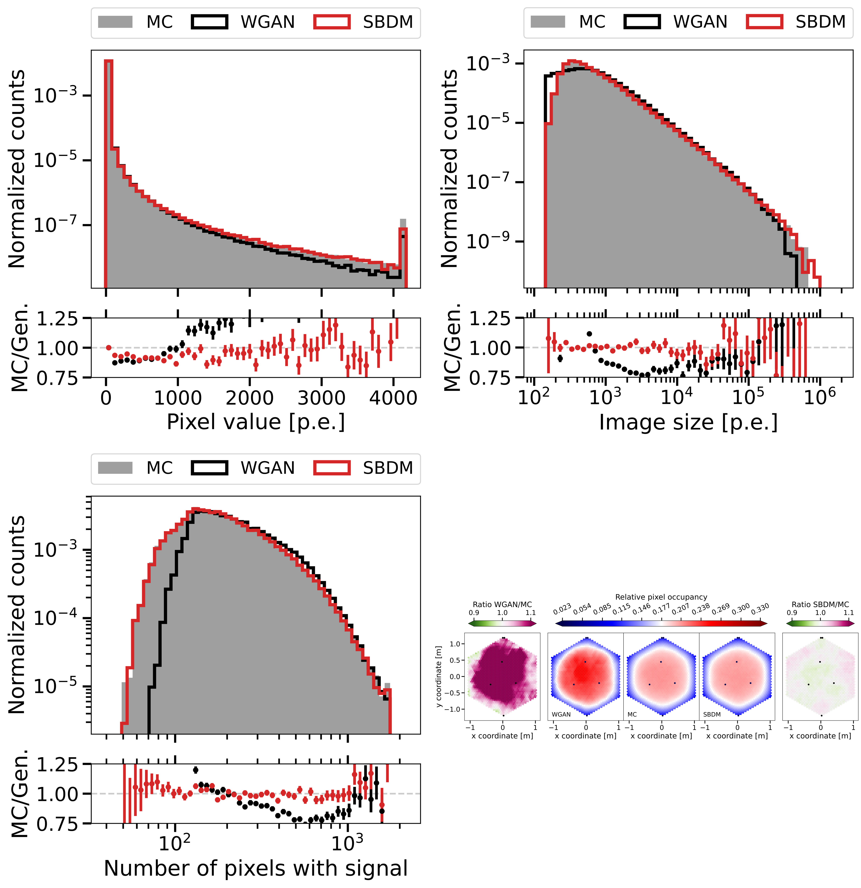
图注：Comparison of the pixel values (top left), the image sizes (top middle), the number of pixels (top right), and the pixel occupancy (bottom) for the proton dataset from the MC simulation, the WGAN and the SBDM. The range of the color bar of the relative pixel occupancy is set to show $\pm 5\sigma$ around the mean value of the MC image.
对应解读：建议重点查看的图表第2项；关键图表逐图导读中关于像素级和总强度分布、低电荷尾部、高电荷尾部、零/近零像素比例的讨论。
入选理由：这是质子样本的像素值、图像大小、像素数和像素占据率对比，直接检验强子背景中最难建模的低层统计。日报强调质子背景是否被 GAN 过度平滑以及低/高电荷尾部是否影响清洗和触发，本图比纯样例图更能定量支撑扩散模型优于 WGAN 的核心结论。
来源与置信度：\(arxiv_source\)；high；\(arxiv_source\) / main.tex:figure[11]
Fig07
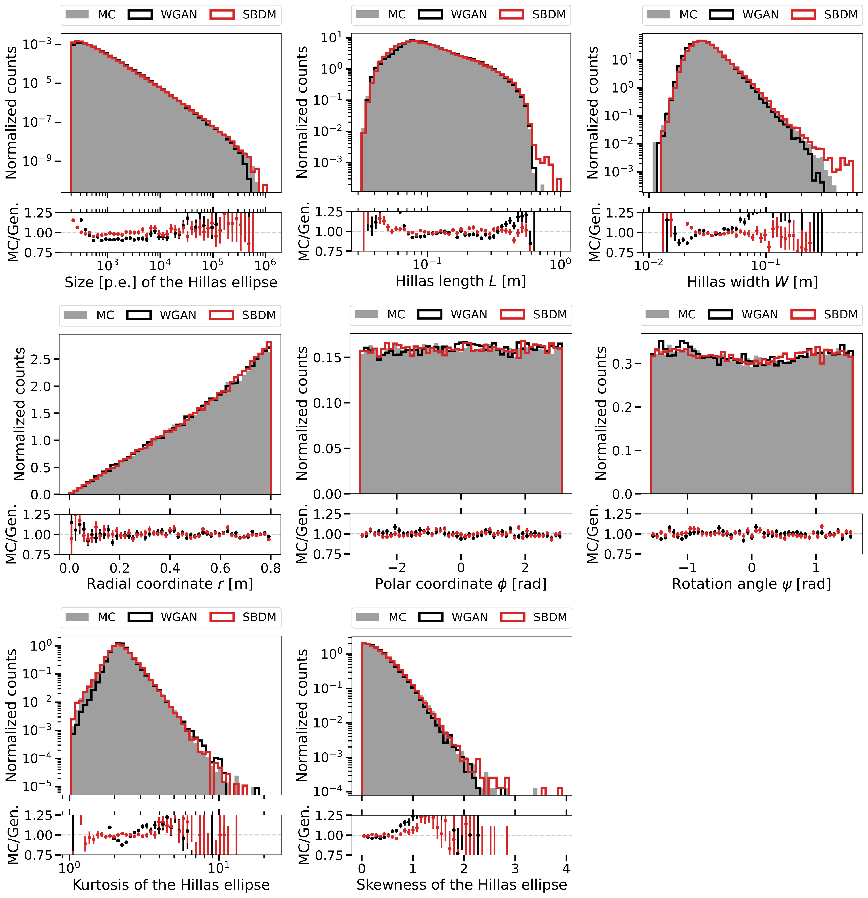
图注：Histogram of Hillas parameters for the $\gamma$-ray dataset, comparing MC simulations (grey) with the generated WGAN (black), and generated SBDM (red) dataset. Below the distributions, the binned ratio of the MC data to the corresponding ML-generated dataset is displayed. Top: Hillas size, length, and width. Middle: Radial coordinate, polar coordinate, and rotation angle. Bottom: Kurtosis and absolute skewness of the Hillas ellipse.
对应解读：建议重点查看的图表第3项；关键图表逐图导读中关于 Hillas 参数一维分布及比值面板的讨论。
入选理由：该图系统比较了 MC、WGAN 与 SBDM 的 Hillas size、length、width、径向坐标、极角、旋转角、峰度和偏度，并包含 MC 与生成样本的分箱比值。它是判断 shower-shape observable 是否被正确复现的核心图，能直接支撑日报中关于峰值、尾部和形状参数偏差的解读。
来源与置信度：\(arxiv_source\)；high；\(arxiv_source\) / main.tex:figure[7]
Fig08
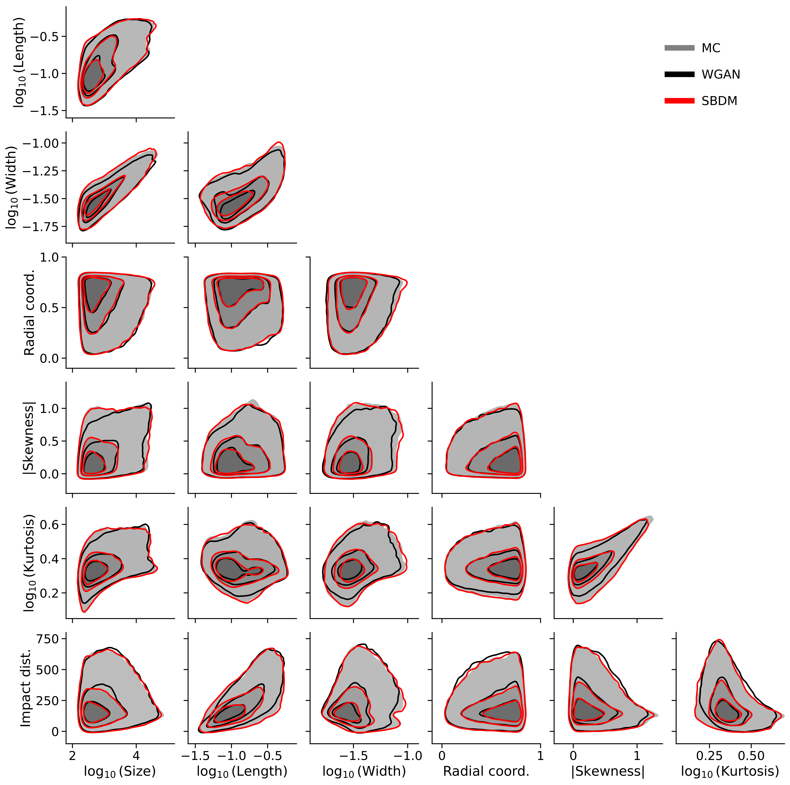
图注：Correlations between the air shower impact points and Hillas parameters of the MC (grey), WGAN (black), and SBDM (red) $\gamma$-ray dataset. The correlations are displayed as kernel density estimation levels with the inner regions corresponding to higher densities.
对应解读：建议重点查看的图表第4项；关键图表逐图导读中关于高层参数二维相关图、联合分布斜率和宽度的讨论。
入选理由：该图展示了空气簇射落点与 Hillas 参数之间的二维相关，并同时给出 MC、WGAN 和 SBDM 的密度等高线。它比一维直方图更能暴露生成模型是否只学到边缘分布而没有学到物理相关性，正对应日报中强调的二维相关对分类器和分析一致性的影响。
来源与置信度：\(arxiv_source\)；high；\(arxiv_source\) / main.tex:figure[8]
Fig09
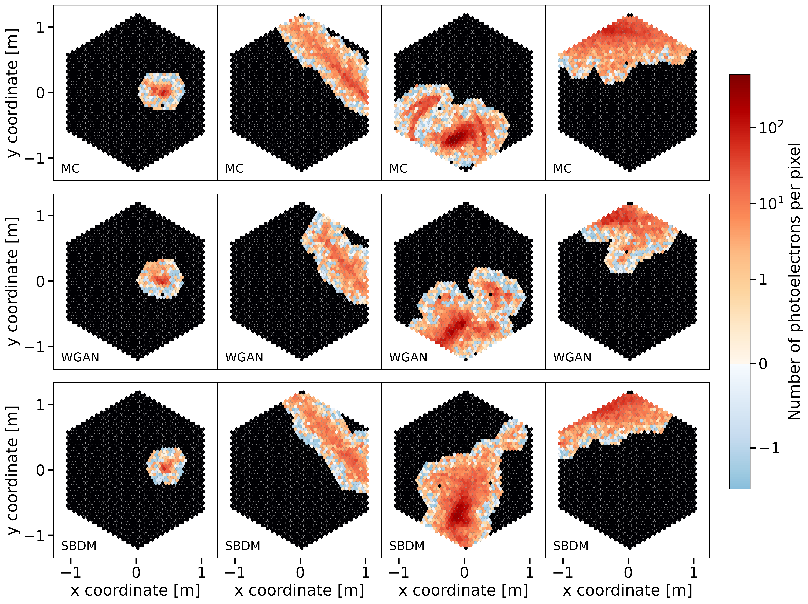
图注：Comparison of four proton IACT images obtained from MC simulations (top), the WGAN (middle), and the SBDM (bottom). The simulated images are hand-picked to show various characteristics of air showers induced by protons. The WGAN and SBDM images are the next neighbors of the simulated images in the mean-squared-error pixel space. Note that a 4/7 tail-cuts cleaning with the extension of four rows is applied, and black pixels denote pixels that do not contain any signal.
对应解读：建议重点查看的图表第1项；关键图表逐图导读中关于真实模拟与生成质子图像样例、子结构、稀疏像素和边缘像素自然性的讨论。
入选理由：该图逐行比较 MC、WGAN 和 SBDM 的质子 IACT 图像，是检验 hadronic shower 复杂形态的直接视觉证据。由于论文结论的关键难点在于质子图像而非单纯的 γ 射线椭圆图像，本图比一般流程示意图更适合嵌入日报。
来源与置信度：\(arxiv_source\)；high；\(arxiv_source\) / main.tex:figure[9]
Fig05
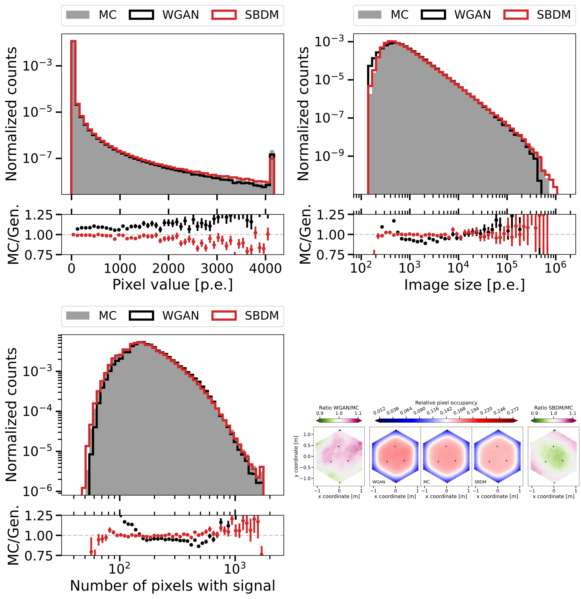
图注：Comparison of the pixel values (top left), the image sizes (top middle), the number of pixels (top right), and the pixel occupancy (bottom) for the $\gamma$-ray dataset from the MC simulation, the WGAN, and the SBDM. The range of the color bar of the relative pixel occupancy is set to show $\pm 5\sigma$ around the mean value of the MC image.
对应解读：建议重点查看的图表第2项；关键图表逐图导读中关于 γ 射线像素级统计、总强度和像素占据率的讨论。
入选理由：该图给出 γ 射线样本的像素值、image size、像素数和相机像素占据率，能够与 Fig11 的质子结果形成对应。它支撑日报中‘扩散模型在 γ 与质子上都更接近全模拟’的说法，并可检查 WGAN/SBDM 在低层图像统计上的系统差异。
来源与置信度：\(arxiv_source\)；high；\(arxiv_source\) / main.tex:figure[5]
Fig10
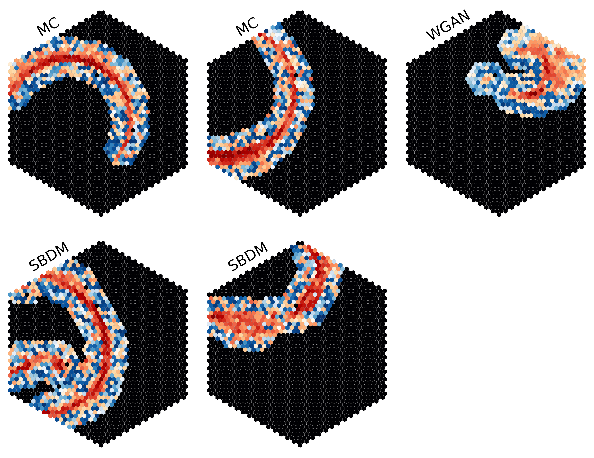
图注：IACT images containing muon rings. The first two images are from the simulated proton dataset; the third is from the WGAN data; and the other two are from the SBDM data. The dark-red pixels correspond to large-signal pixels, which contain most of the detected Cherenkov light. Black pixels indicated cleaned signals. Only the SBDM data contains distinct rings.
对应解读：建议重点查看的图表第1项和第6项；模型拟合段落中关于强子背景复杂涨落、局部异常和生成模型漏掉模式的讨论。
入选理由：该图专门展示质子数据中的 muon ring 结构，并指出只有 SBDM 生成数据包含清晰环状结构。它是模式覆盖能力的直观诊断，能说明 WGAN 在复杂强子事件上可能漏掉稀有但物理重要的形态，因此比单纯训练流程图更有科学解释价值。
来源与置信度：\(arxiv_source\)；high；\(arxiv_source\) / main.tex:figure[10]
强相关工作
这篇工作与两条文献线直接相关。第一条是 IACT 传统分析和响应模拟，包括 Hillas 参数、H.E.S.S./MAGIC/VERITAS 的蒙特卡洛响应、\(\gamma\)-强子分离和有效面积构造。检索关键词可用 “Hillas parameters imaging atmospheric Cherenkov technique”, “H.E.S.S. instrument response Monte Carlo”, “IACT gamma hadron separation machine learning”。这些工作提供了本文评价指标的物理基础，也提醒读者：生成图像只是响应函数链条中的一环。
第二条是深度生成模型在科学快速模拟中的应用，尤其是 GAN、Wasserstein GAN、score-based diffusion 和高能物理 calorimeter simulation。检索关键词可用 “diffusion model detector simulation”, “score based generative model fast simulation”, “GAN Cherenkov telescope image simulation”, “calorimeter fast simulation diffusion”。与早期 GAN 快速模拟相比，本文的张力点在于强子背景：GAN 在平均图像或电磁样本上可表现很好，但对多模态、长尾和复杂涨落可能不足；扩散模型的优势正体现在更好的分布覆盖。
同类源/同类仪器语境上，本文不是针对某个天体源或瞬变事件，而是针对 H.E.S.S. 类 IACT 仪器模拟与分析方法。因此 source context 更应理解为同类仪器、同类分析链和历史方法，而非同一事件。读者可进一步检索 H.E.S.S. instrument papers、CTA Monte Carlo production、IACT analysis review，评估该 surrogate model 未来能否迁移到立体阵列和 CTA 规模。
同一事件 / 同类源线索：
- https://arxiv.org/abs/2603.06364
- https://www.mpi-hd.mpg.de/hfm/HESS/
- https://www.cta-observatory.org/
相似工作：
- https://arxiv.org/abs/2006.11239
- https://arxiv.org/abs/2011.13456
- https://arxiv.org/abs/1701.07875
- https://arxiv.org/abs/1406.2661
基础理论 / 方法工作：
- https://ui.adsabs.harvard.edu/abs/1985ICRC....3..445H/abstract
- https://arxiv.org/abs/astro-ph/0307459
- https://arxiv.org/abs/0809.3564
相反观点 / 张力线索：
2. LHAASO-WCDA observed a $\sim$ 5 days TeV-delayed flaring event in blazar 1ES 1959+650
- 来源：arXiv / astro-ph.HE
- 链接：https://arxiv.org/abs/2609.02853v1
- 作者：Zhen Cao, F. Aharonian, Y. X. Bai, Y. W. Bao, D. Bastieri, X. J. Bi, Y. J. Bi, W. Bian
- 评分：novelty 8/10，importance 8/10，relevance 10/10，final 9.70/10
- 推荐理由：LHAASO-WCDA对blazar 1ES 1959+650的TeV耀发实时监测，报告GeV-TeV约5天硬滞后且相关性超过3σ；这是直接的TeV伽马射线观测结果，对耀变体粒子加速和输运有明显价值。
中文题目：LHAASO-WCDA 观测到耀变体 1ES 1959+650 的约 5 天 TeV 延迟耀发
做了什么：这篇文章利用 LHAASO-WCDA 自 2023 年底开始的实时监测数据，研究高频峰 BL Lac 天体 1ES 1959+650 在 2024 年的多次 TeV 耀发。作者用 Bayesian blocks 在 WCDA 光变曲线中识别出 3 次 TeV 耀发，并把其中第二次耀发与 GeV 波段数据做离散互相关分析，发现 TeV 辐射相对 GeV 辐射滞后 \(\Delta t=5.0^{+2.1}_{-2.1}\) 天，关联显著性相对非相关红噪声模拟超过 \(3\sigma\)。同时，时变能谱显示这次延迟耀发的 TeV 本征谱较软，\(\Gamma=3.16\pm0.18\)，而 2024 年 2 月 9 日首次触发耀发更硬，\(\Gamma=2.48\pm0.21\)。核心结论是：这个约 5 天的“硬滞后”很难只用简单辐射冷却排序解释，更像涉及粒子加速、输运或多区结构，但现有数据还不能唯一锁定机制。
为什么重要：耀变体的高能辐射通常被用来诊断相对论喷流中的粒子加速和辐射区结构。GeV 与 TeV 波段之间出现天级延迟，尤其是 TeV 滞后于 GeV，会直接挑战“一次注入、同步冷却、同区辐射”的简单图像。1ES 1959+650 还是历史上出现过“孤立 TeV 耀发”的经典 HBL 源，因此这次 LHAASO-WCDA 的全天候监测给了一个重新检验喷流时变过程的好机会。
理论 / 观测 / 仪器方法价值：观测价值在于，WCDA 的高占空比和实时监测能力能捕捉传统切伦科夫望远镜容易漏掉的天级 TeV 结构；方法价值在于，文章把 Bayesian blocks、离散互相关和红噪声蒙特卡洛显著性评估结合起来处理稀疏且强红噪声的耀变体光变；理论价值在于，它为粒子加速时间、能量依赖逃逸、辐射区传播或多区碰撞模型提供了一个具体的时间尺度约束。
为什么应该关注：如果你关心喷流中 TeV 光子的产生位置、粒子如何被加速到极高能、以及 LHAASO 这类广视场阵列能在时域高能天体物理中做什么，这篇文章值得看。它不是简单宣布“又看到一个耀发”，而是给出一个可检验的时间延迟、能谱差异和统计显著性链条，能帮助判断未来多波段联测应怎样设计。
展开详细解读：文章讲解、背景、理论、重点章节、图表与相关工作
文章详细讲解
科学问题：本文关注的是 HBL 型耀变体 1ES 1959+650 在 2024 年的 TeV 活动中，GeV 与 TeV 辐射是否同步、是否存在可测量的时间延迟，以及这种延迟对喷流粒子加速和辐射区结构意味着什么。对简单单区 SSC 图像来说，电子在同一辐射区内加速后同时产生同步辐射和逆康普顿辐射，不同能段光变可以有小的冷却或几何延迟，但一个约 5 天、且 TeV 落后于 GeV 的“硬滞后”并不自然。
作者怎么做：作者利用 LHAASO-WCDA 的实时监测光变曲线，在 2024 年识别 1ES 1959+650 的 TeV 活动。Bayesian-block 算法被用来从非均匀、噪声主导的时间序列中划分统计上显著的通量状态，从而定义 3 次 TeV 耀发。随后，作者把 WCDA 的 TeV 光变与 GeV 波段光变做离散互相关分析，并用非相关红噪声模拟来估计互相关峰值的偶然概率，而不是简单采用白噪声误差。
关键结果：对第二次触发耀发，互相关函数在 \(\Delta t=5.0^{+2.1}_{-2.1}\) 天附近达到显著峰值，符号对应 TeV 辐射滞后 GeV 辐射。相对于非相关红噪声模拟，这个峰值超过 \(3\sigma\)。时变谱分析还显示，第二次耀发的 TeV 本征谱最软，\(\Gamma=3.16\pm0.18\)，而第一次触发耀发更硬，\(\Gamma=2.48\pm0.21\)。这说明延迟不是单纯“更高能更快升起”的直接表现，而与不同耀发之间的粒子分布、辐射环境或吸收修正有关。
局限和下一步：文章谨慎地指出，当前数据还不能区分粒子逐步加速、能量依赖输运、多区发射、冲击传播或磁重联等机制。互相关显著性依赖红噪声模拟、时间 binning、耀发窗口选择和 GeV 数据质量；TeV 本征谱还涉及 EBL 修正和仪器响应。下一步应结合 X 射线、光学偏振、甚高能切伦科夫望远镜跟进和更长时间的 WCDA 监测，检验延迟是否重复出现、是否与谱硬化或偏振角旋转同步。
关键结果是怎么做出来的
这篇文章最重要的证据链从样本选择开始：对象不是盲搜得到的新源，而是已知 HBL 1ES 1959+650，且 LHAASO-WCDA 在 2023 年底以后具备实时监测能力。作者在 2024 年的 WCDA 光变曲线上用 Bayesian blocks 识别显著偏离基线的通量区间，得到 3 次 TeV 耀发；其中 2024 年 2 月 9 日是首次触发耀发，第二次触发耀发则是本文时间延迟分析的重点。
事件数不是高能粒子单事件统计意义上的“几个 photon”，而是以日尺度或近似日尺度光变 bin、阵列有效面积和背景扣除后的 TeV 通量点构成。Bayesian blocks 的作用是避免人为固定耀发起止时间，同时控制过拟合；读者应特别关注作者采用的先验或假阳性惩罚项，因为它决定了 3 次耀发是否稳健，以及第二次耀发的窗口是否会影响后续互相关峰。
互相关部分使用离散互相关函数来比较 GeV 与 TeV 光变。关键不是互相关峰本身，而是作者把它与非相关红噪声模拟比较。耀变体光变通常有强功率谱泄漏和长期趋势，如果把每个点当独立高斯噪声，显著性会严重高估。因此本文的 \(>3\sigma\) 是相对于保留红噪声统计性质、但不含真实跨波段关联的模拟光变而言的；这比普通 Pearson 相关更可信，但仍依赖所假设的红噪声功率谱斜率和采样窗口。
时间延迟的报告值 \(\Delta t=5.0^{+2.1}_{-2.1}\) 天来自互相关峰的位置及其不确定度估计。读者应检查互相关图中峰是否宽、是否有次峰、是否在不同 binning 或不同耀发窗口下仍存在。如果峰宽接近数天，那么“5 天”应理解为天级延迟的特征尺度，而非精确传播钟表。
能谱结果提供了第二条独立线索。作者对不同耀发做时变 TeV 谱拟合并修正 EBL 吸收，得到第二次耀发本征谱 \(\Gamma=3.16\pm0.18\)，比第一次触发耀发 \(\Gamma=2.48\pm0.21\) 更软。这一点很重要：如果 TeV 延迟来自简单的高能粒子逐步加速，常常预期峰值期间高能端变硬；但这里的软谱提示粒子分布、外部吸收、不同辐射区或冷却历史可能更复杂。
主要系统误差包括 WCDA 有效面积和能量重建、背景估计、EBL 模型、GeV 光变的采样和曝光变化、红噪声模拟的功率谱假设、以及 Bayesian-block 耀发边界选择。稳健性检验应包括改变时间 bin、改变耀发窗口、使用不同 EBL 模型、用 z-transformed DCF 或 interpolated CCF 交叉检查、以及检验 TeV 滞后是否由单个异常点驱动。
展开背景、理论、公式、模型、章节和图表导读
背景知识
1ES 1959+650 是一个高频峰 BL Lac 天体，红移较低，喷流大致指向我们，因此相对论 beaming 使其在 X 射线和 TeV 波段都很亮。HBL 的同步峰通常位于 UV 到 X 射线，逆康普顿峰可延伸到 GeV 到 TeV，是研究极端电子加速和喷流辐射区物理的典型实验室。
这个源在历史上尤其出名，因为它曾出现过所谓“孤立 TeV 耀发”：TeV 波段增强而 X 射线没有同等增强。这类事件挑战最简单的单区 SSC 模型，因为在该模型中同一批电子负责 X 射线同步辐射和 TeV 逆康普顿辐射，二者通常应有较强相关性。1ES 1959+650 因此长期被用于讨论 hadronic 分量、多区 leptonic 模型、外部 photon 场和喷流内部结构。
过去 TeV 耀变体时域研究高度依赖成像大气切伦科夫望远镜，灵敏度高但视场小、占空比低、受天气和月光影响。LHAASO-WCDA 这类水切伦科夫阵列的优势是高占空比、大视场和长期连续监测，虽然瞬时灵敏度和角分辨率不一定优于专门指向观测，但非常适合发现天级到周级 TeV 变源活动。
为什么现在值得重新看？一方面，LHAASO 让北天 TeV 源的准连续监测成为可能；另一方面，Fermi-LAT 提供长期 GeV 光变，Swift、NICER、MAXI、光学巡天和偏振监测也能补充低能段。跨波段时间延迟不再只是偶然跟进，而可以作为统计问题系统研究。
常见误区之一是把 GeV 与 TeV 简单看成“同一个逆康普顿峰的两个能量点”，从而预设它们必须同步。实际上，GeV 与 TeV 可以由不同电子能段、不同散射 regime、不同空间区甚至不同辐射机制贡献。另一个误区是把互相关显著性当作普通独立样本问题；耀变体红噪声会制造看似显著的滞后峰，必须用模拟或功率谱保持的随机化方法检验。
基础理论 / 方法脉络
物理图像从相对论喷流开始。BL Lac 的非热辐射来自喷流中被加速的电子、可能还有质子。电子在磁场中产生同步辐射，峰值可在 X 射线；同一批电子还可以把同步光子或外部光子逆康普顿散射到 GeV-TeV。观测者看到的时间尺度被 Doppler 因子压缩，因此日尺度光变对应辐射区尺度、粒子冷却时间或输运时间的约束。
在简单单区 SSC 模型中，一个紧致 blob 以 Doppler 因子 \(\delta\) 运动，内部磁场近似均匀，电子分布常写成幂律、折断幂律或 log-parabola。低能同步和高能逆康普顿的光变若由同一次电子注入驱动，通常预期相关性较强；不同能段延迟来自加速时间、冷却时间、光穿越时间、逃逸时间和散射进入 Klein-Nishina regime 后的能量依赖。
本文的关键观测量是两条光变曲线之间的时间延迟，以及每次耀发的 TeV 谱指数。时间延迟通过离散互相关函数估计；谱指数通过折叠仪器响应的似然拟合得到，并进一步考虑 EBL 吸收得到本征谱。\(\Gamma\) 越大表示谱越软，高能光子相对较少。
需要注意 degeneracy。一个 TeV 滞后可以来自高能电子逐步加速，也可以来自 GeV 区先亮、TeV 区后亮的空间传播；还可能是两个互相重叠的耀发造成互相关峰偏移。软 TeV 谱可能反映电子高能 cutoff 较低，也可能来自 EBL 修正、能量重建偏差或混合多个状态后的平均谱。
观测方法上，WCDA 的优势是连续性，代价是每个短时间 bin 的统计误差和背景处理更关键。Fermi-LAT 在 GeV 波段也受扫描曝光、源混淆和背景模型影响。把两者做互相关时，必须处理非均匀采样、测量误差、红噪声和有限窗口效应，否则容易把随机起伏解释为物理延迟。
公式与推导
第一步是把观测时间尺度与辐射区尺度联系起来。若观测到变时标 \(t_{\rm var}\)，Doppler 因子为 \(\delta\)，红移为 \(z\)，则辐射区半径满足光穿越约束
这里 \(R\) 是共动辐射区尺度，\(c\) 是光速。对本文的天级耀发，\(R\) 给出喷流中参与 TeV 辐射的紧致区上限，但不能单独区分加速、冷却或传播。
第二步是电子同步辐射的特征频率。洛伦兹因子为 \(\gamma\) 的电子在磁场 \(B\) 中产生的观测同步频率近似为
其中 \(e\) 是元电荷，\(m_e\) 是电子质量。HBL 的 X 射线同步峰要求较高 \(\gamma\)，因此 X 射线与 TeV 光变关系可追踪高能电子分布。
第三步是 Thomson 近似下的逆康普顿能量标度。种子光子能量为 \(\epsilon_{\rm seed}\) 时，散射后观测能量约为
这个式子说明 GeV 与 TeV 可对应不同 \(\gamma\) 或不同种子 photon；若进入 Klein-Nishina regime，该标度会失效，TeV 响应可能变慢、变软或与 GeV 解耦。
第四步是冷却时间。同步与逆康普顿冷却的共动时间可写为
其中 \(\sigma_T\) 是 Thomson 截面，\(U'_B=B^2/(8\pi)\) 是磁能密度，\(U'_{\rm rad}\) 是辐射能密度。观测冷却时间为
若更高能电子更快冷却，单纯冷却通常更容易造成高能先衰减，而不自然地产生稳定的 TeV 晚于 GeV 数天峰值。
第五步是加速时间的尺度估计。扩散激波或随机加速中常用参数化
其中 \(\eta\geq 1\) 表示加速效率，越大表示加速越慢。若 TeV 光子需要更高 \(\gamma\)，则有限 \(t'_{\rm acc}\) 可以导致硬光子延迟；但本文第二次耀发 TeV 谱偏软，说明这种解释不能只看延迟，还必须同时拟合谱演化。
第六步是观测谱与 EBL 吸收。若本征 photon 谱为幂律，观测谱可写为
其中 \(\phi_0\) 是归一化，\(E_0\) 是 pivot 能量，\(\Gamma_{\rm int}\) 是本征谱指数，\(\tau_{\rm EBL}\) 是 EBL 光深。本文报告的 \(\Gamma=3.16\pm0.18\) 和 \(\Gamma=2.48\pm0.21\) 应理解为经过这类修正后的本征 TeV 斜率。
第七步是光变互相关。对两个离散光变点 \(a_i\) 和 \(b_j\)，离散相关量可写为
其中 \(e_a\) 和 \(e_b\) 是测量误差贡献。把满足 \(\tau-\Delta\tau/2 峰值所在 \(\tau\) 给出 GeV-TeV 延迟估计，本文对应 \(\Delta t=5.0^{+2.1}_{-2.1}\) 天。 第八步是显著性。若红噪声模拟产生的最大互相关峰分布为 \(p(CCF_{\rm max})\)，观测峰 \(CCF_{\rm obs}\) 的尾概率为 等效高斯显著性可写为 其中 \(\Phi^{-1}\) 是标准正态累积分布的反函数。本文的 \(>3\sigma\) 结论正是这类“相对非相关红噪声”的显著性，而不是忽略红噪声后的简单相关系数显著性。 本文涉及两类拟合：时间域分段和能谱拟合。时间域上，Bayesian blocks 把光变曲线划分为若干常通量区间，拟合量是每个 block 的通量水平和变化点位置。先验或惩罚项控制变化点数量；惩罚太弱会把噪声切成许多假耀发，惩罚太强会抹掉真实短时结构。对本文而言，3 次 TeV 耀发的识别是否稳健，是后续延迟分析的前提。 互相关不是传统意义上拟合一个物理模型，而是估计两条随机过程之间的延迟参数。可把 \(\Delta t\) 看成使 GeV 和 TeV 光变相似度最大的位移。实际误差来自测量误差、有限采样、红噪声和耀发窗口选择。理想的检查包括 bootstrap 或 flux randomization/random subset selection，以及改变 lag bin 宽度后的峰值稳定性。 能谱拟合通常以 photon 通量模型折叠 WCDA 仪器响应，比较不同能量 proxy 或重建能量 bin 的计数。拟合量包括归一化 \(\phi_0\) 和谱指数 \(\Gamma\)，可能还包括 cutoff 或曲率参数；本文摘要强调幂律本征谱指数。由于 TeV 观测要扣除宇宙线背景，残差图和每个能量 bin 的 pull 很重要，尤其要检查软谱是否由最高能 bin 统计不足驱动。 后验或似然中的系统误差主要包括有效面积、能量标定、点扩散函数、背景模板和 EBL 模型。\(\Gamma\) 与能量尺度强相关：若能量整体偏高或偏低，谱斜率和归一化都会移动。EBL 修正也会把高能端上调，因此本征谱软硬比较最好使用同一 EBL 模型和同一分析链。 物理模型拟合若进一步展开，会面对严重退化。单区 SSC 中 \(B\)、\(\delta\)、电子 break 能量、源区半径和电子密度都可影响峰频、峰亮度和冷却时间；多区模型增加传播时间和各区权重后更容易解释延迟，但参数更多、唯一性更差。本文的稳健结论应限于“存在天级 TeV 滞后且该耀发 TeV 谱偏软”，不要过度解读为某一种机制已被证明。 数据与监测部分应首先看：作者如何定义 LHAASO-WCDA 实时监测样本、采用什么时间 bin、背景如何估计、源显著性怎样随时间变化。这里决定光变曲线的基本可信度，也决定 Bayesian-block 输入是否可靠。 耀发识别方法部分要看 Bayesian blocks 的参数选择。重点不是算法名字，而是假阳性率、先验惩罚、曝光变化处理和是否对不同 binning 做一致性检查。读者应确认 3 次 TeV 耀发不是人为阈值选择的产物。 多波段互相关部分是全文核心。应重点阅读 DCF 的定义、GeV 数据来源与时间范围、lag 符号约定、红噪声模拟方法、功率谱斜率假设和 \(>3\sigma\) 的计算方式。特别要确认 \(\Delta t>0\) 是否明确代表 TeV 滞后 GeV。 时变谱部分要关注每次耀发的谱拟合窗口、能量范围、EBL 修正和统计误差。第二次耀发的 \(\Gamma=3.16\pm0.18\) 与第一次耀发的 \(\Gamma=2.48\pm0.21\) 是解释物理机制时不可忽略的约束。 讨论部分应按“哪些模型被排除、哪些只是可行”来读。文章没有声称唯一机制，而是指出纯冷却排序困难，并提出粒子加速、输运或多区演化可能参与。附录或稳健性检验若给出不同 binning、不同模拟参数或不同谱模型下的结果，应优先检查。 2024 年 WCDA TeV 光变图：看 3 次耀发的时间位置、持续时间、峰值通量和误差条，确认第二次耀发不是单点异常。 Bayesian-block 分段图或表：看 block 边界、基线水平、显著状态变化和假阳性控制参数，判断耀发定义是否稳健。 GeV 与 TeV 对齐光变图：看 GeV 峰是否确实早于 TeV 峰约数天，是否存在采样空洞或低显著点。 DCF 或互相关函数图：看横轴 lag、纵轴相关强度、峰宽、\(1\sigma\)、\(2\sigma\)、\(3\sigma\) 红噪声阈值，以及是否有可竞争的次峰。 红噪声模拟显著性诊断：看模拟互相关峰分布、功率谱假设和观测峰所在分位数，避免把白噪声显著性误认为真实相关。 分耀发 TeV 能谱图：看第一次和第二次耀发的谱点、最佳拟合幂律、EBL 修正前后差异和高能端残差。 谱指数比较表：看 \(\Gamma\) 的统计误差和可能系统误差，判断 \(3.16\pm0.18\) 与 \(2.48\pm0.21\) 的差异是否足够显著。 稳健性检验图或附表：看改变 binning、lag bin、耀发窗口或 EBL 模型后，\(\Delta t\) 和 \(\Gamma\) 是否保持一致。 图 1：通常应是 LHAASO-WCDA 对 1ES 1959+650 的长期或 2024 年 TeV 光变。横轴为日期或 MJD，纵轴为 TeV 通量或相对 Crab 通量，数据点带统计误差，Bayesian-block 分段可能以阶梯线表示。读图重点是 3 次耀发是否清楚高于基线，以及第二次耀发是否有连续多个高点支撑。陷阱是不要只看最高点；若耀发由单个 bin 主导，互相关会更脆弱。 图 2：多波段光变对比图应把 GeV 和 TeV 放在相同时间轴上。横轴仍为日期或 MJD，纵轴分面显示 Fermi-LAT GeV 通量和 WCDA TeV 通量。模型线若有，通常只是平滑或 block 表示。主要结论是 GeV 活动先出现、TeV 活动随后增强。读图陷阱是不同波段的 bin 宽、曝光和误差不同，视觉上的峰位差不能直接等同统计延迟。 图 3：DCF 图是关键。横轴为 lag，纵轴为 \(DCF\) 或相关系数；正 lag 的物理含义需按论文约定确认，本文结论是 TeV 滞后 GeV。应看主峰位置是否在 \(5\) 天附近，峰宽是否对应 \(\pm2.1\) 天误差，以及红噪声模拟给出的 \(3\sigma\) 阈值是否被超过。陷阱是 DCF 相邻 lag bin 不独立，不能把多个相邻高点当作多个独立证据。 图 4：红噪声显著性或 Monte Carlo 诊断图若存在，应显示模拟光变产生的最大相关峰分布，或在 lag-相关平面上的置信包络。横轴可能是 \(DCF_{\rm max}\) 或 lag，纵轴是概率密度或相关阈值。读者要看观测峰位于模拟分布尾部多远，以及模拟是否保持原始采样和噪声水平。陷阱是若模拟功率谱斜率取得过浅，会低估偶然长期趋势导致的假相关。 图 5：分耀发 TeV 能谱图应以能量为横轴、\(E^2dN/dE\) 或 differential flux 为纵轴，给出不同耀发的谱点和最佳拟合线。第一次触发耀发的线应更硬，第二次耀发更软。主要结论是延迟耀发不仅时间行为不同，能谱状态也不同。陷阱是 EBL 修正、本征谱和观测谱若画在同一图上，必须分清哪条线对应 \(\Gamma\) 的报告值。 图 6：若论文有物理解释示意或参数比较图，应看它是否只是定性展示。坐标轴可能是冷却时间、加速时间或电子能量，模型线展示不同 \(B\)、\(\delta\) 或 \(\eta\) 下的时间尺度。该图的作用是说明纯冷却难以自然给出 TeV 晚到，而加速或输运可产生天级滞后。陷阱是这些模型通常不是唯一拟合，不能把示意曲线当作机制判决。模型拟合 / 应用方法
重点章节 / 结果段落怎么读
建议重点查看的图表
关键图表逐图导读
论文原图 / 可嵌入图片
Fig02
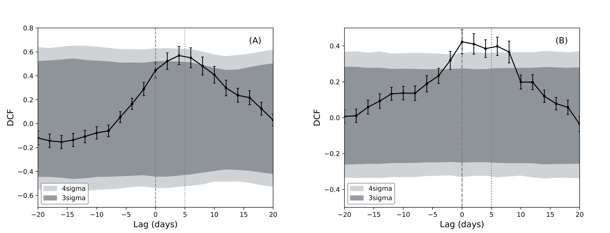
图注：Discrete cross-correlation functions between the TeV and GeV light curves. {\(\bf\) (A)}Light curve from MJD 60300 to 60500, excluding Flare 1 and Flare 3. {\(\bf\) (B)} Full light curve, corresponding to panel (B) of Figure~\(\ref{fig:MLC}.\) Dashed and dotted lines mark lags of 0 and 5.0 days, respectively.
对应解读：对应“建议重点查看的图表”第3、4项，以及“关键图表逐图导读”中的图2/图3：GeV 与 TeV 对齐光变和 DCF 互相关函数；也直接支撑模型拟合段落中关于延迟参数 \(\Delta t\) 的估计。
入选理由：这是唯一候选图，且科学价值最高：caption 明确说明包含 TeV 与 GeV 光变的离散互相关函数，并标出 0 天和 5.0 天 lag，正好对应本文核心结论 \(\Delta t=5.0^{+2.1}_{-2.1}\) 天、TeV 滞后 GeV。相比普通光变或能谱图，DCF 是验证“约 5 天硬滞后”和超过红噪声显著性阈值的关键诊断图，最值得嵌入日报详细解读。
来源与置信度：\(arxiv_source\)；high；\(arxiv_source\) / ms-1959_submit.tex:figure[2]
强相关工作
同一源背景方面，1ES 1959+650 有大量历史 TeV 和多波段观测，特别是 2002 年的强耀发和“孤立 TeV 耀发”讨论，是理解本文的重要上下文。建议检索关键词包括 “1ES 1959+650 orphan TeV flare 2002”, “1ES 1959+650 multiwavelength campaign”, “HBL TeV GeV lag”, “blazar hard lag TeV”。这些工作常讨论单区 SSC 的困难、hadronic 或 lepto-hadronic 解释、多区模型以及 X 射线-TeV 相关性。
方法背景方面，本文与耀变体红噪声互相关分析、Bayesian blocks 变点检测和 LHAASO/WCDA 长期监测能力直接相关。建议检索 “Bayesian Blocks Scargle 2013”, “discrete correlation function Edelson Krolik 1988”, “Fermi LAT blazar light curve red noise”, “LHAASO WCDA blazar monitoring”。如果要找相反观点，应关注那些认为跨波段 lag 在红噪声和采样窗口下不稳健的论文，以及用单区 SSC 成功解释 HBL 耀发的研究。
同一事件 / 同类源线索：
- https://arxiv.org/abs/2609.02853
- https://ui.adsabs.harvard.edu/search/q=1ES%201959%2B650%20orphan%20TeV%20flare
- https://tevcat.uchicago.edu/?mode=1&showsrc=87
相似工作：
- https://ui.adsabs.harvard.edu/search/q=1ES%201959%2B650%20multiwavelength%20TeV
- https://ui.adsabs.harvard.edu/search/q=blazar%20TeV%20GeV%20time%20lag%20DCF
- https://ui.adsabs.harvard.edu/search/q=LHAASO%20WCDA%20blazar%20monitoring
基础理论 / 方法工作：
- https://ui.adsabs.harvard.edu/abs/1988ApJ...333..646E/abstract
- https://arxiv.org/abs/1207.5578
- https://ui.adsabs.harvard.edu/search/q=one-zone%20SSC%20model%20BL%20Lac%20TeV
相反观点 / 张力线索：
3. Measuring Small-scale Turbulence in Supernova Remnants with Jitter Radiation
- 来源：arXiv / astro-ph.HE
- 链接：https://arxiv.org/abs/2609.01715v1
- 作者：Emily Simon, Damiano Caprioli, Niccolò Bucciantini, Emanuele Greco, Marco Miceli
- 评分：novelty 8/10，importance 8/10，relevance 9/10，final 9.35/10
- 推荐理由：提出并用混合模拟支持Cas A硬X射线jitter radiation作为SNR离子尺度湍流探针，直接关联SNR冲击、磁湍流和粒子加速环境；对宇宙线源物理有较高价值。
中文题目：用抖动辐射测量超新星遗迹中的小尺度湍流
做了什么：这篇文章围绕一个具体而尖锐的问题：如果仙后座 A 的硬 X 射线确实来自“抖动辐射”，那么发射区必须存在尺度接近或小于离子拉莫尔半径的磁场起伏；这些小尺度磁湍流从哪里来？作者用高分辨率混合等离子体模拟研究强激波下游的离子尺度微不稳定性，特别是镜像不稳定性和火软管不稳定性，发现它们可以在激波下游自然地产生接近观测所需谱形的小尺度磁结构。文章的核心结论是：硬 X 射线谱中被解释为抖动辐射的成分，可能不仅是粒子加速的辐射签名，也可直接反推超新星遗迹激波下游的离子尺度湍流谱。
为什么重要：超新星遗迹激波被认为是银河宇宙线加速的重要场所，但我们通常只能间接推断激波附近磁场放大和湍流级联。本文的重要性在于，它把一个可观测的硬 X 射线谱特征同不可直接成像的离子尺度磁湍流联系起来：如果抖动辐射解释成立，观测到的辐射谱就相当于给出了磁场功率谱在离子尺度附近的约束。这比只说“磁场被放大了”更进一步，因为它关心湍流的空间尺度、谱指数和微物理来源。
理论 / 观测 / 仪器方法价值：对理论而言，文章提供了从无碰撞激波微不稳定性到宏观超新星遗迹辐射诊断的桥梁；对观测而言，它提示硬 X 射线谱不只是电子能谱的探针，也可能是小尺度磁场谱的探针；对方法而言，高分辨率混合模拟给出了离子动力学主导的小尺度湍流生成机制，并讨论了数值耗散如何影响测得的湍流谱指数。这为今后把硬 X 射线、射电同步辐射、窄 X 射线丝状结构和等离子体模拟联合起来提供了可操作框架。
为什么应该关注：如果你关心超新星遗迹中的宇宙线加速、磁场放大或非热 X 射线辐射，这篇文章值得看，因为它讨论的不是泛泛的“湍流存在”，而是能否用观测辐射谱测量接近离子拉莫尔半径的磁场结构。它也提醒读者：把硬 X 射线都解释为标准同步辐射可能会漏掉重要的微物理信息；反过来，声称发现抖动辐射也必须面对模拟分辨率、粒子能谱、磁场相关长度和辐射模型退化等检验。
展开详细解读：文章讲解、背景、理论、重点章节、图表与相关工作
文章详细讲解
科学问题：本文从仙后座 A 的硬 X 射线辐射出发。传统解释通常把超新星遗迹中的非热 X 射线归因于相对论电子在放大磁场中的同步辐射，但如果磁场相关长度小到接近或低于带电粒子的回旋半径，辐射进入抖动辐射或至少是小偏转辐射的物理图像。已有关于仙后座 A 的解释认为，其硬 X 射线谱可能需要小尺度磁湍流，并可由辐射谱反推磁湍流的谱指数。问题是：这样的离子尺度磁湍流在真实无碰撞激波下游是否能自然产生，还是只是为解释光谱而额外假设的结构？
作者怎么做：文章提出这些小尺度磁场不是任意设定的，而可能来自激波下游的离子尺度微不稳定性。强激波会把上游等离子体压缩、加热并驱动各向异性速度分布；当平行和垂直于局域磁场方向的压力不同，镜像不稳定性和火软管不稳定性等机制可以增长，产生尺度与离子惯性长度或离子拉莫尔半径相近的磁扰动。作者使用高分辨率混合模拟，其中离子按动力学粒子处理，电子通常作为流体处理，从而保留离子尺度效应，同时避免全粒子模拟在大尺度上的高成本。
关键结果：模拟显示，激波下游确实会出现由离子微不稳定性驱动的小尺度磁湍流。作者分析磁场功率谱，并特别强调数值耗散会在高波数端人为变陡，因此不能直接把未修正的模拟谱斜率同观测推断相比较。在考虑数值耗散影响后，他们得到的湍流谱指数与从仙后座 A 抖动辐射解释中推断的指数相容。这是本文的关键链条：观测硬 X 射线提示小尺度湍流，混合模拟给出微不稳定性来源，谱指数在校正后能够对上。
局限和下一步：本文并不等于已经证明仙后座 A 的硬 X 射线一定是抖动辐射，因为辐射解释仍会受电子能谱、磁场强度、磁场相关长度、源区几何、热与非热成分分离、硬 X 射线仪器背景等影响。模拟方面，混合模型忽略电子动力学细节，因此不能直接自洽计算 X 射线辐射电子的注入和辐射冷却；有限盒子、有限时间和数值耗散也会影响谱斜率。下一步应把激波模拟输出的磁场谱直接输入辐射转移或合成观测，和仙后座 A 的空间分辨硬 X 射线谱、射电谱以及窄丝状结构一起拟合。
关键结果是怎么做出来的
本文最重要的证据链从一个观测推断开始：仙后座 A 的硬 X 射线成分曾被解释为抖动辐射，这要求辐射电子看到的磁场不是大尺度均匀场，而是相关长度接近或小于离子尺度的随机磁场。作者没有重新做完整的仙后座 A 数据归约，而是把已有观测解释中需要的磁湍流谱作为目标物理量，检查无碰撞激波模拟能否产生相同量级和谱形的小尺度湍流。
样本和数据在本文中主要不是天体样本，而是数值实验样本：作者进行高分辨率混合模拟，关注激波下游区域的磁场结构、离子速度分布和压力各向异性。关键选择包括取哪些下游空间区域计算功率谱、如何避开激波跃迁层的瞬态结构、如何定义离子尺度归一化长度，以及如何估计高波数端受数值耗散污染的范围。这里的“事件数”不是天文源数，而是模拟网格、粒子数、时间快照和波数模的统计量；这些共同决定了谱指数的可信度。
显著性和置信度的核心不是传统观测论文中的源探测显著性，而是模型比较意义上的一致性检验。作者把模拟得到的磁能谱在惯性或准惯性波数区间拟合为幂律，并讨论数值耗散使谱在接近网格尺度时变陡的偏差。若不处理耗散，谱指数可能被误读为与仙后座 A 所需指数不一致；在校正或限制拟合波数范围后，模拟谱指数与抖动辐射推断值相容。这一结果通常应由磁场功率谱图、耗散校正图或不同分辨率对比图支撑。
统计方法上，读者应关注作者如何从磁场空间分布得到一维或多维功率谱，以及如何选择拟合区间。功率谱拟合常见形式是对 \(\log P_B\) 与 \(\log k\) 做线性拟合，斜率给出湍流谱指数；但不同方向平均、不同下游距离、不同时间快照以及是否扣除平均磁场，都会改变结果。本文的稳健性关键在于：谱指数不是单个快照的偶然结果，而应在下游足够长时间和空间范围内稳定存在。
主要系统误差包括数值耗散、有限分辨率、有限盒长、粒子噪声、电子流体近似、边界条件以及二维或三维几何对微不稳定性的影响。尤其要注意，离子尺度湍流的高波数端最接近数值耗散区，也最接近抖动辐射诊断感兴趣的尺度，因此这里的系统误差不是技术细节，而是结论能否成立的核心。读者应检查论文是否用分辨率测试、不同拟合区间、不同激波参数或理论不稳定性阈值来证明结果稳健。
支撑结论的图表应包括：激波下游磁场结构图，显示小尺度斑块或条纹；压力各向异性相图，显示等离子体接近镜像或火软管不稳定阈值；磁功率谱图，显示可拟合幂律区；谱指数与观测推断值的比较图，显示误差范围或允许区间。若这些图之间相互吻合，本文的主张才完整：不是单纯模拟中有小结构，而是这些结构来自正确的微物理机制，并且具有观测辐射所需的谱性质。
展开背景、理论、公式、模型、章节和图表导读
背景知识
研究对象是年轻超新星遗迹中的无碰撞激波，尤其是仙后座 A 这类强非热辐射源。仙后座 A 是银河系内研究最充分的年轻核心坍缩超新星遗迹之一，具有明亮的射电、红外、光学、软 X 射线和硬 X 射线辐射。其非热 X 射线通常被视为电子被激波加速到极高能量的证据，也是检验银河宇宙线起源的重要实验场。
历史上，超新星遗迹非热辐射的标准图像是弥散激波加速产生幂律电子，电子在磁场中发出同步辐射。这个图像能解释许多射电和 X 射线特征，但也留下几个难题：磁场为什么能被强烈放大，电子最高能量如何决定，窄 X 射线丝状结构究竟主要由辐射冷却还是磁场阻尼造成，硬 X 射线谱中是否存在不同于标准同步辐射的成分。
抖动辐射提供了一个替代或补充视角。若磁场随机起伏的相关长度比电子回旋半径小，电子轨道在单个相关长度内只发生小角度偏转，辐射谱不再等同于均匀磁场中的同步辐射谱，而会显著依赖磁场湍流谱。对仙后座 A 的硬 X 射线解释中，抖动辐射要求存在非常小尺度的磁扰动，因此它把辐射问题转化为等离子体微物理问题。
为什么现在值得重新看？一方面，硬 X 射线观测能力和空间分辨谱分析在持续进步，使得超新星遗迹的高能非热成分可以被更细致地区分；另一方面，高分辨率混合模拟和全粒子模拟已经能够直接研究无碰撞激波下游的离子尺度结构。过去常把“湍流”作为宏观级联或参数化扩散系数处理，而现在可以追问湍流究竟由哪些微不稳定性生成，谱指数是否与观测可比。
该领域常见误区之一是把所有非热 X 射线都自动等同为标准同步辐射，忽视磁场相关长度对辐射机制的影响。另一个误区是看到幂律辐射谱就直接推断电子幂律谱，而没有考虑辐射核本身会因小尺度磁场而改变。还有一个误区是把模拟功率谱的高波数斜率当作物理结果，而不认真处理数值耗散和粒子噪声；本文特别强调的正是这一点。
基础理论 / 方法脉络
基本物理图像从带电粒子在磁场中的运动开始。在均匀或大尺度磁场中，相对论电子以回旋或螺旋轨道运动，辐射由轨道曲率决定，典型频率与电子洛伦兹因子和磁场强度有关。若磁场在远小于电子回旋半径的尺度上随机变化，电子在每个磁场胞元中只被轻微偏转，辐射更接近抖动辐射，其谱形会携带磁场功率谱信息。
本文关心的磁场尺度是离子尺度，而不是电子尺度或遗迹半径这类宏观尺度。离子尺度包括离子惯性长度和离子拉莫尔半径，它们由下游等离子体密度、磁场和离子温度决定。年轻超新星遗迹激波很强，碰撞平均自由程远大于系统尺度，能量耗散主要通过集体电磁场和等离子体不稳定性完成，因此离子速度分布很容易产生各向异性。
镜像不稳定性和火软管不稳定性都源于压力各向异性。若垂直压力相对平行压力过大，磁场较弱区域可捕获粒子并放大镜像型磁结构；若平行压力过大，磁力张力不足以稳定沿磁场方向的扰动，火软管模式会增长。激波下游的离子分布并不必是各向同性麦克斯韦分布，因此这些不稳定性可以在局域区域反复被触发并维持小尺度磁扰动。
观测联系来自辐射诊断。标准同步辐射中，观测谱主要由电子能谱和平均磁场决定；抖动辐射中，辐射谱还显式依赖磁场湍流谱和相关长度。于是仙后座 A 的硬 X 射线谱如果被抖动辐射解释，就能反向约束小尺度磁功率谱的谱指数。本文的策略是用混合模拟计算这个谱指数，再与观测解释要求的指数比较。
常见退化包括电子能谱斜率与磁湍流谱斜率之间的退化、平均磁场强度与电子最高能量之间的退化、源区体积与归一化通量之间的退化，以及热制动辐射、非热同步辐射和抖动辐射在硬 X 射线能段的成分分离问题。系统误差还包括投影效应、空间混合、多温等离子体背景和仪器本底。本文主要解决“湍流能否自然产生”这一环，而不是单独消除所有观测退化。
公式与推导
第一步是带电粒子回旋运动的基本尺度。对电荷量为 \(q\)、质量为 \(m\)、速度垂直分量为 \(v_\perp\) 的粒子，在磁场 \(B\) 中的非相对论拉莫尔半径为
对相对论电子应把 \(m v_\perp\) 替换为 \(\gamma m_e v_\perp\)。这里 \(r_L\) 是判断磁场相关长度是否“小”的参照尺度，\(c\) 是光速，\(\gamma\) 是电子洛伦兹因子。
第二步是同步辐射的典型频率。若磁场在轨道尺度上近似均匀，相对论电子的特征角频率可写为
其中 \(e\) 是元电荷，\(m_e\) 是电子质量，\(\alpha\) 是俯仰角。这个式子说明标准同步辐射主要测量 \(\gamma^2 B\) 的组合，因此电子能量和磁场之间天然存在退化。
第三步是抖动条件。设随机磁场的相关长度为 \(\lambda_B\)，电子在一个相关长度内的偏转角约为
当 \(\delta\theta \ll 1/\gamma\) 或至少 \(\lambda_B \ll r_{L,e}\) 时，单个胞元内的偏转很小，辐射进入抖动或小偏转极限。本文关心的是 \(\lambda_B\) 接近离子尺度而远小于高能电子回旋半径的情形。
第四步是磁湍流谱的参数化。若小尺度磁场的三维或等效一维功率谱在某个波数范围内近似为幂律，可写作
其中 \(k\) 是波数，\(P_0\) 是归一化，\(k_0\) 是参考波数，\(s\) 是磁湍流谱指数。本文的关键比较量正是模拟给出的 \(s\) 与仙后座 A 抖动辐射解释所需的 \(s\) 是否一致。
第五步是从空间磁场到功率谱。对模拟盒中的磁扰动 \(\delta\mathbf{B}(\mathbf{x})=\mathbf{B}(\mathbf{x})-\langle\mathbf{B}\\)
angle)，可定义傅里叶功率
实际分析常对方向或壳层平均得到 \(P_B(k)\)。该式告诉读者，平均场扣除、窗口函数和有限盒长都会影响低波数端，而网格尺度和粒子噪声会影响高波数端。
第六步是压力各向异性触发微不稳定性的判据。用平行和垂直压强 \(p_\parallel\) 与 \(p_\perp\) 以及等离子体参数 \(\beta_\parallel=8\pi p_\parallel/B^2\) 表示，火软管不稳定的近似阈值可写为
当平行压力过大时，磁张力不足以稳定弯曲扰动，小尺度磁结构会增长。这个判据用于理解激波下游哪些区域可能产生火软管型扰动。
第七步是镜像不稳定性的近似阈值。若垂直压力过大，则可用
其中 \(\beta_\perp=8\pi p_\perp/B^2\)。这说明高 \(\beta\) 等离子体中很小的压力各向异性也可能触发镜像模式。超新星遗迹激波下游通常具有高温和强扰动，因而很容易接近这些阈值。
第八步是把功率谱斜率连接到拟合诊断。若在选定波数区间内对数功率谱近似线性，则有
对这条直线的斜率拟合给出 \(s\)。读者应检查拟合区间是否避开数值耗散波数 \(k_{\rm diss}\)，因为若 (k\
ightarrow \(k_{\rm diss}\))，谱会人为变陡。
第九步是一个简化的谱指数估计似然。给定测得的对数功率 \(y_i=\log P_B(k_i)\) 和误差 \(\sigma_i\)，可写
这里 \(\mathcal{L}\) 是似然函数，\(i\) 标记波数 bin。这个式子不是本文唯一可能采用的统计形式，但它清楚表达了如何从模拟谱估计斜率和不确定度，也说明系统误差若未进入 \(\sigma_i\)，会低估结论的不确定性。
第十步是辐射观测与模型比较的联系。若观测硬 X 射线通量可表示为电子分布 \(N_e(\gamma)\) 与辐射核 \(R_\\)
u(\gamma,P_B)) 的卷积，则
其中 \(d\) 是源距离，\(F_\nu\) 是观测通量密度。标准同步辐射和抖动辐射的差异体现在 \(R_\nu\) 的形式不同；本文的意义在于用模拟给出的 \(P_B(k)\) 约束这个辐射核中最难观测的小尺度磁场部分。
模型拟合 / 应用方法
本文涉及两层拟合。第一层是模拟内部的磁功率谱拟合：从下游选定区域提取 \(\delta\mathbf{B}\)，傅里叶变换得到 \(P_B(k)\)，在避开盒长限制和数值耗散的波数范围内拟合幂律斜率 \(s\)。这里的拟合量包括谱归一化、谱指数、可用波数区间以及不同时间快照的离散度。读者应特别注意作者如何估计高波数端的数值耗散，因为这会直接改变 \(s\)。
第二层是与仙后座 A 抖动辐射解释的比较。观测侧通常会拟合硬 X 射线谱，区分热等离子体、非热同步辐射、抖动辐射和可能的背景成分。抖动辐射模型的参数会包括电子能谱、磁场强度、湍流谱指数、磁场相关长度和源区归一化。本文主要比较的是湍流谱指数这一物理量，而不是完整重拟合所有观测参数。
似然或后验方面，模拟谱拟合若采用对数空间最小二乘，需要考虑不同波数 bin 之间并非完全独立，因为有限盒子和窗口函数会引入协方差。粒子噪声在高波数端近似表现为额外白噪声或谱平坦化，而数值耗散则表现为谱变陡；两者方向不同，若处理不当会造成看似精确但偏差很大的斜率。更严格的做法应把分辨率测试和拟合区间变化作为系统误差并入最终不确定度。
主要退化关系包括：磁功率谱斜率 \(s\) 与电子能谱斜率之间的退化，\(\lambda_B\) 与电子最高能量之间的退化，平均磁场 \(B\) 与电子归一化之间的退化，以及下游不同区域混合导致的多谱成分退化。在观测应用中，同一个硬 X 射线谱可能由较陡电子截断的同步辐射、额外非热尾或抖动辐射产生相似拟合质量，因此必须结合空间形态、射电到 X 射线宽频谱和时间演化。
模型可能失败的地方也很明确。如果真实激波下游的电子尺度过程强烈改变磁场结构，而混合模拟无法捕捉，那么离子尺度谱未必能直接用于辐射电子。如果仙后座 A 的硬 X 射线主要来自未建模的热或非热成分，抖动辐射所需的 \(s\) 就不是可靠目标。如果数值耗散校正依赖强模型假设，那么模拟和观测的“一致”可能只是拟合区间选择的产物。实际应用中，最有说服力的检验会是用同一套模拟磁场生成合成辐射图像和谱，并同时解释硬 X 射线谱形与空间结构。
重点章节 / 结果段落怎么读
数据和物理动机部分应先读作者如何定义仙后座 A 的硬 X 射线问题。重点不是记住所有观测细节，而是弄清楚抖动辐射解释要求什么样的小尺度磁湍流：相关长度相对电子回旋半径有多小，目标湍流谱指数大致落在哪个范围，以及为什么普通大尺度同步辐射图像不足以回答这个问题。
模拟方法部分是全文技术核心。读者应检查混合模拟的设定：离子和电子分别如何处理，激波马赫数、背景磁场方向、网格分辨率、粒子数、边界条件和运行时间如何选择。尤其要看离子拉莫尔半径、离子惯性长度和网格尺度之间的关系；若这些尺度没有被足够分辨，后面的功率谱结论就会变弱。
微不稳定性诊断部分应关注压力各向异性和不稳定阈值。好的阅读方式是把下游区域在 \(p_\perp/p_\parallel\) 与 \(\beta\) 空间中的分布同镜像、火软管阈值线对照，看磁结构出现的位置是否确实对应不稳定区域。这能判断小尺度湍流是否有明确微物理来源，而不是数值噪声或激波压缩的副产物。
磁功率谱结果部分应重点看斜率测量。读者需要问三个问题：拟合区间是否避开低波数盒长效应和高波数耗散区；不同时间、不同下游距离和不同分辨率下斜率是否稳定；校正数值耗散后与仙后座 A 观测推断值是否在误差范围内相容。
讨论和展望部分应把结论放回观测语境。作者若强调抖动辐射是离子尺度湍流的直接探针，读者应同时检查他们是否承认辐射模型退化、电子动力学缺失和三维效应等限制。附录或稳健性检验若包含分辨率测试、耗散模型、不同参数运行或额外谱诊断，应优先阅读，因为它们决定主结论是否可靠。
建议重点查看的图表
-
激波下游磁场二维或三维结构图：看是否存在尺度接近离子尺度的斑块、条纹或镜像型结构；同时检查这些结构是否只出现在边界或激波过渡层附近。
-
离子压力各向异性与 \(\beta\) 参数相图：看数据点是否接近或越过镜像不稳定性、火软管不稳定性阈值；这是判断湍流来源的关键诊断。
-
磁场功率谱 \(P_B(k)\) 对波数 \(k\) 的图：看是否有清晰幂律区间，低波数和高波数是否分别受盒长和耗散影响，拟合线是否只覆盖合理范围。
-
数值耗散或分辨率测试图：看不同网格分辨率、粒子数或耗散校正下谱指数是否稳定；如果只有单一分辨率，结论要更谨慎。
-
模拟谱指数与仙后座 A 抖动辐射推断值的比较图或表：看误差条、允许区间和系统误差是否明确；不要只看中心值相近。
-
下游时间演化图：看小尺度湍流是否在足够长时间内维持，而不是瞬态激波过冲结构。
-
不同波数方向或各向异性功率谱：如果有，应看平行和垂直于平均磁场方向的谱是否不同，因为抖动辐射模型常常假设某种统计各向同性或简化各向异性。
关键图表逐图导读
图 1：通常应是物理示意或模拟几何图。横轴可能是激波法向坐标，纵轴可能是横向坐标，颜色表示磁场强度或某个磁场分量。读图重点是确认激波位置、上游和下游的定义，以及作者后续提取功率谱的区域在哪里。陷阱是把激波跃迁层中的压缩结构误认为充分发展的下游湍流。
图 2：若展示磁场强度或磁扰动空间分布，坐标轴一般以离子惯性长度或离子拉莫尔半径归一化。数据颜色图中若出现小尺度斑块、空穴或条纹，应与镜像或火软管模式的预期形态对应。读图时要注意色标是否线性、是否扣除了平均场，以及结构尺度是否真正大于几个网格单元。
图 3：压力各向异性诊断图通常以 \(\beta_\parallel\) 或 \(\beta_\perp\) 为横轴，以 \(p_\perp/p_\parallel\) 或各向异性参数为纵轴，并叠加镜像和火软管阈值线。主要结论应是下游等离子体落在不稳定阈值附近，从而支持微不稳定性驱动湍流。读图陷阱是只看少量越界点；更重要的是统计分布是否系统性贴近阈值。
图 4：磁功率谱图是核心图。横轴应为波数 \(k\)，纵轴为 \(P_B(k)\) 或磁能谱，通常双对数显示。模型线是幂律拟合，斜率给出 \(s\)。读者应检查拟合区间的左右端点、误差条或快照散布，以及高波数端是否出现数值耗散导致的弯折。若拟合线延伸到耗散区，斜率会偏陡。
图 5：若有耗散校正或分辨率对比，横轴仍可能是 \(k\)，纵轴为未校正和校正后的谱，或不同分辨率的谱比值。主要结论应是校正后物理谱指数与观测推断相容。陷阱是校正模型本身可能引入先验，因此要看不同校正方案是否给出一致斜率。
图 6：模拟与仙后座 A 约束的比较图可能以谱指数 \(s\) 为横轴，显示模拟结果、观测允许区间和不确定度。关键是误差预算是否包含数值系统误差和观测模型系统误差。若只给统计误差而没有系统误差，图上重合的说服力会被高估。
论文原图 / 可嵌入图片
Fig04
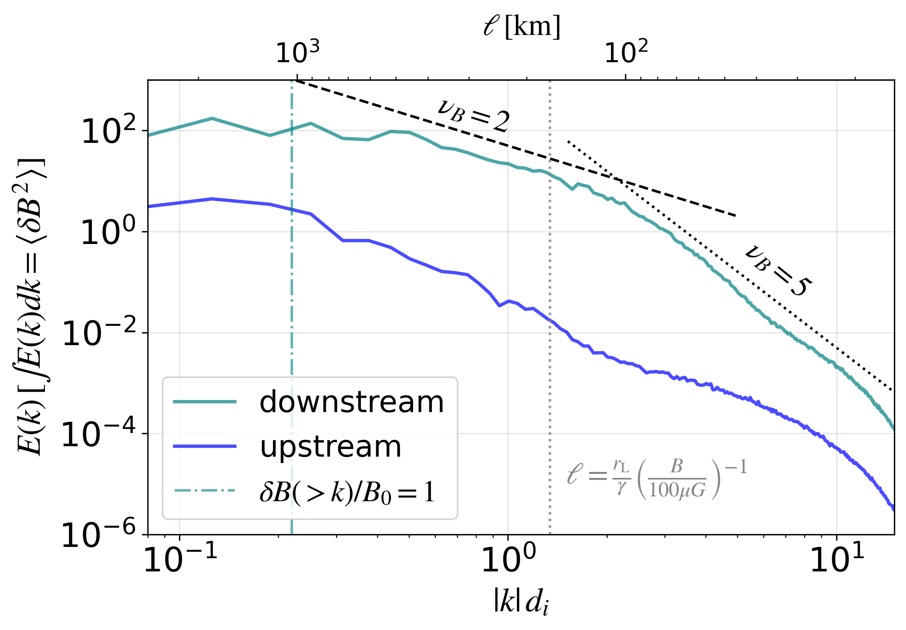
图注：$k$-shell-averaged magnetic energy spectrum $E(k)$, calculated downstream ($x = 450- 550 \, d_i$, teal) and upstream ($560-660 \,d_i$, blue). The teal vertical line represents the wavenumber where the cumulative power at all larger $k$ becomes equivalent to the mean downstream field. The upper axis shows the length scale of the turbulence, $\ell = 1/k \, \rm{km}$, assuming $d_i = 228 \, \rm{km}$, and the gray vertical line marks the reference scale where $\ell$ equals the electron Larmor radius for $B = 100 \mu \rm{G}$.
对应解读：“建议重点查看的图表”第3项、“关键图表逐图导读”图4，以及“模型拟合”中关于磁功率谱幂律斜率的核心段落。
入选理由：这是本文最核心的诊断图，直接给出下游与上游的磁能谱 E(k)，对应日报反复强调的 \(P_B(k)-k\) 幂律、拟合区间、盒长限制和高波数耗散问题。图中还标出与电子拉莫尔半径相关的尺度，可直接检验小尺度湍流是否达到抖动辐射所需尺度，因此科学支撑度最高。
来源与置信度：\(arxiv_source\)；high；\(arxiv_source\) / \(main_v2.tex\):figure[4]
Fig05
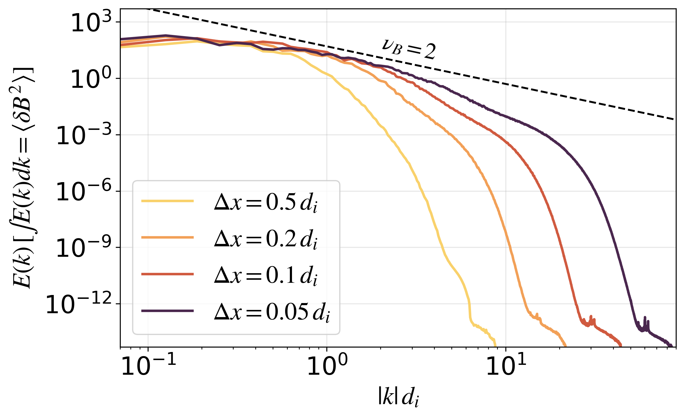
图注：Comparison of downstream $k-$shell-averaged magnetic power spectrum in test simulations with varying cell-size, $\Delta x \equiv d_i/\rm{cells}$. We demonstrate that the spectral break is not converged but increases monotonically as resolution increases.
对应解读：“建议重点查看的图表”第4项，以及“关键图表逐图导读”图5中关于数值耗散、分辨率测试和谱指数稳定性的讨论。
入选理由：该图专门比较不同网格分辨率下的下游磁功率谱，说明谱断裂位置随分辨率单调移动且未收敛，正好对应日报中对数值耗散校正和系统误差的重点警告。它决定了模拟谱指数能否可靠地与仙后座 A 抖动辐射推断值比较。
来源与置信度：\(arxiv_source\)；high；\(arxiv_source\) / \(main_v2.tex\):figure[5]
Fig03
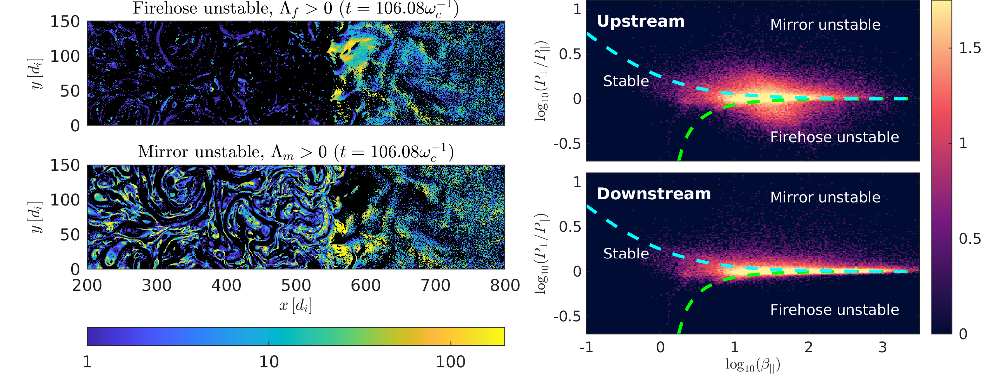
图注：\(\textit{Left:}\) Smoothed regions which are firehose (top) or mirror (bottom) unstable in the downstream ($x<540\, d_i$) and upstream. The colorbar shows the local value of $\Lambda_{f,m}$ respectively. \(\textit{Right:}\) 2D histograms of the pressure anisotropy as a function of plasma $\beta_\parallel$ for both upstream (top) and downstream (bottom) regions. The colorbar represents the log of the number of $1 \, d_i^2$ sections which reside in a given bin.
对应解读：“建议重点查看的图表”第2项，以及“关键图表逐图导读”图3中关于压力各向异性、β 参数、镜像不稳定性和火软管不稳定性阈值的诊断。
入选理由：该图同时给出火软管/镜像不稳定区域的空间分布，以及压力各向异性随 β_parallel 的二维统计直方图，是判断下游小尺度湍流是否由离子尺度微不稳定性驱动的关键证据。相比单纯形态图，它更直接支撑本文的物理机制。
来源与置信度：\(arxiv_source\)；high；\(arxiv_source\) / \(main_v2.tex\):figure[3]
Fig02
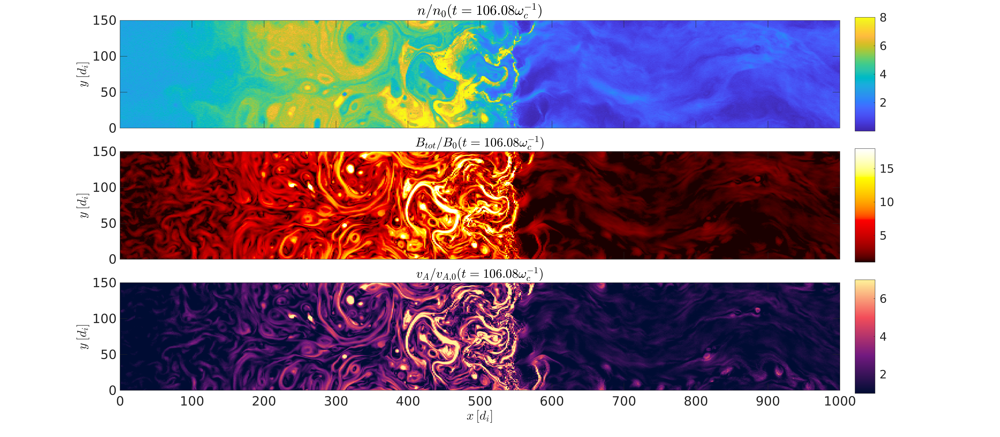
图注：Snapshots from a hybrid simulation of a $M_A=20$ parallel shock. From top to bottom: plasma number density $n$, total magnetic field $B_{\rm{tot}}$, and local Alfv\'en speed $v_A$ normalized their initial values at $t=106.08 \omega_c^{-1}$.
对应解读：“建议重点查看的图表”第1项，以及“关键图表逐图导读”图2中关于激波下游磁场、密度和局域 Alfvén 速度空间结构的讨论。
入选理由：该图展示混合模拟中平行激波的密度、总磁场和局域 Alfvén 速度快照，可用于确认激波位置、上下游区域以及下游是否出现离子尺度斑块或条纹结构。它为后续功率谱提取区域和微不稳定性分析提供空间背景。
来源与置信度：\(arxiv_source\)；high；\(arxiv_source\) / \(main_v2.tex\):figure[2]
Fig01
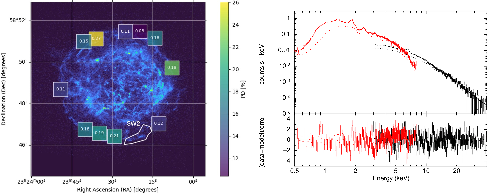
图注：\(\textit{Left panel.}\) Chandra image of Cas A in the 4-6 keV band, overlaid with boxes from \(\cite{mgv25}\) showing the polarization degree (PD) in each area, courtesy of A. Mercuri and with the white polygon marking the SW2 region analyzed in this paper. \(\textit{Right panel.}\) Chandra (red points) and NuSTAR (black points) spectra of the SW2 region. The solid lines represent the total best-fit model, the dotted lines represent the power-law contribution only. Lower panel shows the residuals.
对应解读：“关键图表逐图导读”图1，以及“模型拟合”中关于仙后座 A 硬 X 射线谱、功率律成分和残差的观测背景段落。
入选理由：该图给出 Cas A SW2 区域的 Chandra 图像、NuSTAR/Chandra 光谱、最佳拟合模型、功率律分量和残差，是本文连接模拟湍流与观测硬 X 射线问题的入口。虽然它不是磁湍流机制本身的诊断图，但能支撑日报中关于观测约束和残差检查的解读。
来源与置信度：\(arxiv_source\)；high；\(arxiv_source\) / \(main_v2.tex\):figure[1]
Fig06
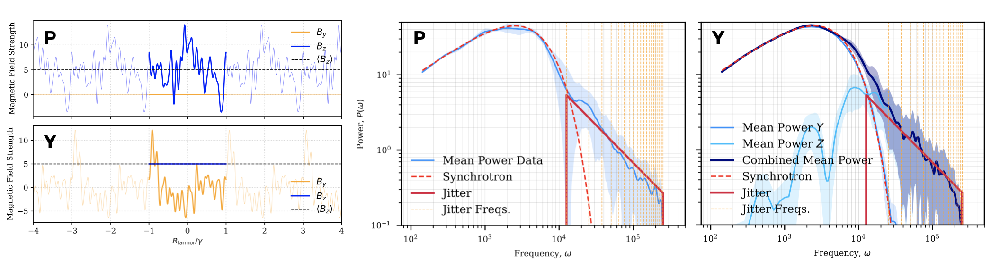
图注：\(\textit{Left panel:}\) the magnetic field along the particle trajectory, for a typical simulation. The highlighted portion is the one in the emission window. Upper plot for pure-pitch (P), lower plot for pure-yaw (Y). \(\textit{Center and right panel:}\) the average power spectrum, seen by an observer in the same plane of the unperturbed orbit, computed from Liénard–Wiechert potentials, over 50 realization of the magnetic field and particle trajectory, with the synchrotron and jitter components, for pure pitch (P) and yaw (Y). For the pure-yaw case, we plot the total power as well as the power in the two orthogonal modes of the electric field. The discrete jitter frequencies, corresponding to our discrete modes are also shown. Shaded regions represent the $1\sigma$ uncertainty. All plots are in units: $e=c=m=1$, and the particle has $\gamma=20$.
对应解读：“模型拟合”和“详细解读”中关于抖动辐射、小偏转辐射以及未来合成辐射检验的讨论。
入选理由：该图展示沿粒子轨道采样的磁场以及由 Liénard–Wiechert 势计算得到的同步辐射和抖动辐射功率谱，并含 1σ 不确定度。它与日报列出的核心图号匹配度不如磁谱、分辨率和各向异性图，但有助于说明模拟磁场如何进一步连接到辐射谱。
来源与置信度：\(arxiv_source\)；high；\(arxiv_source\) / \(main_v2.tex\):figure[6]
强相关工作
这篇工作与仙后座 A 的硬 X 射线和非热辐射研究直接相关，属于“同一源”背景下的理论和数值解释论文。应检索关键词包括 “Cassiopeia A hard X-ray nonthermal emission”, “Cas A jitter radiation”, “Cas A synchrotron cutoff”, “NuSTAR Cas A hard X-rays”。同一源的观测论文通常讨论非热 X 射线空间分布、钛同位素线、冲击波加速和磁场放大；本文则把重点放在离子尺度湍流是否能产生抖动辐射所需的磁谱。
在理论脉络上，本文连接了三类工作：一是弥散激波加速和超新星遗迹宇宙线起源的基础理论；二是小尺度随机磁场中的抖动辐射理论；三是无碰撞激波中的混合模拟、粒子模拟和压力各向异性微不稳定性研究。可能存在的张力是：许多超新星遗迹 X 射线观测可以用标准同步辐射加电子截断解释，并不必引入抖动辐射。因此后续比较应检索 “jitter radiation versus synchrotron supernova remnants”, “magnetic turbulence spectrum collisionless shocks”, “mirror firehose instabilities downstream shocks”。
如果读者想追踪相反观点，应查找把仙后座 A 硬 X 射线归因于标准同步辐射、非热制动辐射或多区电子分布的论文。若这些模型能同时解释宽频谱和空间形态，则抖动辐射解释需要给出额外可检验预言，例如硬 X 射线谱指数与小尺度磁谱的关系、不同区域的谱变化、以及与离子尺度湍流强度相关的空间相关性。
同一事件 / 同类源线索：
- https://arxiv.org/abs/2609.01715
- https://arxiv.org/pdf/2609.01715
- https://simbad.u-strasbg.fr/simbad/sim-id?Ident=Cas+A
相似工作：
基础理论 / 方法工作：
- https://ui.adsabs.harvard.edu/abs/1977ICRC...11..132A/abstract
- https://ui.adsabs.harvard.edu/abs/1978MNRAS.182..147B/abstract
- https://ui.adsabs.harvard.edu/abs/1978MNRAS.182..443B/abstract
- https://ui.adsabs.harvard.edu/abs/1999ApJ...526..697M/abstract
相反观点 / 张力线索：
4. 17 Yr of Magnetar Bursts Observed with the Fermi Gamma-ray Burst Monitor
- 来源：arXiv / astro-ph.HE
- 链接：https://arxiv.org/abs/2609.02809v1
- 作者：Matt Godwin, Özge Keskin, Mustafa Demirer, Yi-Jing Yi, Lin Lin, Oliver J. Roberts, Ersin Göğüş, Yuki Kaneko
- 评分：novelty 7/10，importance 8/10，relevance 9/10，final 9.05/10
- 推荐理由：17年Fermi-GBM磁星短暴完整目录，包含1254个爆发及公开谱和响应文件；虽主要是目录论文，但数据集规模大、可复用性强，对高能瞬变和磁星研究很有价值。
中文题目：Fermi/GBM 17 年磁星短暴目录：1254 个软伽马重复源爆发的统一时谱样本
做了什么：这篇文章发布了 Fermi 伽马暴监视器 GBM 运行 17 年积累的磁星短暴目录，包含来自 17 个银河系磁星源的 1254 个短爆发，取代早期 5 年 GBM 目录。作者对每个爆发给出持续时间、能谱模型参数、通量、流量、探测器响应和可机读数据，并与其他任务和旧 GBM 目录比较。它的重要性不在于提出单个新模型，而在于提供一个时间跨度长、全天覆盖稳定、时谱分辨率统一的大样本，可用于研究磁星爆发能量分布、活动周期、源间差异以及触发/未触发选择效应。
为什么重要：磁星短暴是强磁场中磁层重联、壳层破裂和辐射转移的直接观测窗口，但过去样本常受任务寿命、触发阈值、能段和数据处理差异限制。17 年 GBM 目录把 2008 年以来的大量短暴放在同一仪器和同一分析框架下，特别覆盖了 SGR J1935+2154 和 SGR J1550-5418 等高活动源，为检验爆发能量函数、等待时间分布、硬度—强度关系和与快速射电暴相关的磁星活动提供基准样本。
理论 / 观测 / 仪器方法价值：对观测者而言，公开的机器可读目录、光谱和响应文件降低了复现和再分析门槛；对理论工作者而言，它给出了可直接用于人口统计和辐射模型约束的持续时间、通量、谱形和源标识；对仪器和方法研究而言，它是研究全天监视器触发效率、背景建模、短时标瞬变分类和跨任务交叉定标的长期数据集。
为什么应该关注：如果你关心磁星是否能产生类 FRB 高能对应体、磁星爆发是否服从自组织临界行为、不同磁星的爆发物理是否统一，或者未来任务该怎样优化短软伽马瞬变触发，这个目录都是必须引用和复查的基础资源。它把零散的 GBM 磁星爆发记录变成了一个可以做统计物理和多信使关联检索的长期样本。
展开详细解读：文章讲解、背景、理论、重点章节、图表与相关工作
文章详细讲解
科学问题：磁星短暴通常持续毫秒到秒量级，能谱较软，但事件之间的亮度、硬度、时间结构和活动成团性差异很大。单个爆发可以揭示局部磁层释放，长期目录则回答更基础的问题：磁星爆发的能量分布是否具有普适斜率，不同源的活动率是否只是探测选择造成的表象，短暴与巨耀发、持续辐射增强和可能的射电爆发现象之间是否属于同一活动谱系。此前 GBM 5 年目录样本有限，无法完整覆盖 SGR J1935+2154 后来的活跃期，也不能充分利用 Fermi 长期全天监视的优势。
作者怎么做：论文整理了 Fermi/GBM 17 年观测到的软伽马重复源短暴，形成 1254 个事件的综合目录，源数为 17 个银河系磁星或候选磁星。GBM 的 NaI 和 BGO 探测器提供宽能段计数数据，作者对爆发时间窗、背景区间、探测器选择和响应文件进行统一处理，并用多种常见光子谱模型拟合短暴能谱，给出持续时间、谱参数、能量通量和积分流量等量。目录还与其他任务的磁星爆发目录以及早期 GBM 磁星目录比较，以说明新增事件、参数一致性和选择效应。
关键结果：最直接的结果是样本规模和时间基线显著扩大：目录包含 1254 个短暴，比旧 5 年 GBM 目录覆盖更多活动期，主要贡献来自 SGR J1935+2154 和 SGR J1550-5418。论文给出整体持续时间分布、谱参数分布、通量分布和不同谱模型下的拟合结果，使读者可以比较单黑体、双黑体、截止幂律或其他经验模型在不同亮度区间的表现。更重要的是，作者公开了光谱和响应文件，这意味着后续研究者可重新选择背景、重新做贝叶斯或层级模型拟合，而不是只能引用表格数值。
局限和下一步：目录本身仍受 GBM 低地球轨道遮挡、南大西洋异常区、背景变化、触发阈值和源定位混淆影响。短暴样本并不等于磁星真实爆发总体，弱事件、地球遮挡期间事件和与宇宙伽马暴或太阳耀斑混淆的事件会产生不可忽略的选择函数。下一步最有价值的方向包括：构建随时间和天空位置变化的探测效率函数；把未触发短时标搜索纳入统一目录；与 Swift、INTEGRAL、Konus-Wind、HXMT、GECAM 等任务做交叉定标；针对 SGR J1935+2154 的高能爆发与射电脉冲/FRB 时间窗做严格的联合显著性检验。
关键结果是怎么做出来的
本文证据链的起点是样本定义。作者把 Fermi/GBM 17 年运行期间识别为软伽马重复源短暴的事件汇总为目录，共 1254 个事件，关联到 17 个银河系磁星源。样本不是一个均匀体积巡天样本，而是一个全天监视器在真实运行条件下获得的事件集，因此读者首先应检查论文如何定义短暴、如何排除普通宇宙伽马暴、太阳耀斑和粒子背景事件、如何处理地球遮挡与南大西洋异常区，以及源关联是依靠已知活动源、定位一致性还是其他任务触发信息。
核心统计量包括每个爆发的持续时间、峰值通量、时间积分流量和能谱参数。GBM 短暴分析通常要先选择爆发时间窗和背景时间窗，再将计数谱通过探测器响应矩阵与光子谱模型相连。本文的目录价值在于对所有事件尽量采用一致流程，并公开光谱与响应文件；这使得后续研究可以检查某一事件的谱参数是否由低计数统计、背景选择或探测器入射角主导，而不是把表格参数当作不可更改的真值。
显著性和置信度在这类目录中通常不是单一的“发现显著性”，而体现在触发/筛选阈值、谱拟合统计量、参数误差和模型比较上。读者应关注作者是否使用 Poisson 计数似然或相应的 GBM 标准谱拟合统计量，如何给出谱参数的不确定度，以及在不同光子模型之间采用何种准则比较。对于低计数短暴，简单的 \(\chi^2\) 直觉常会失效，模型间差异也可能主要反映能段覆盖和背景系统误差。
支撑主要结论的图表应包括：事件按源分布的柱状图或表格，显示 SGR J1935+2154 和 SGR J1550-5418 的主导贡献；持续时间分布，说明样本确实集中在短时标磁星爆发区间；谱参数和通量/流量分布，展示整体磁星短暴的软谱特征；以及新目录与旧 GBM 目录、其他任务目录的交叉比较图，说明新增样本并非仅是重复整理，而是显著扩展了活动源和活动期。
主要系统误差来自背景建模、探测器响应、事件时间窗定义和样本不完备性。比如靠近地平线或入射角大的事件，其有效面积和响应不确定性会放大；强短暴的持续时间可能因饱和、死时间或尾部定义而偏差；弱短暴则更容易受背景多项式阶数和时间窗选择影响。稳健性检验应包括改变背景区间、比较不同探测器组合、检查不同谱模型给出的能量通量是否一致，以及与其他任务同时观测事件做交叉验证。
这篇论文最值得复用的结果不是某一个分布的斜率，而是可机读目录和响应文件构成的可复现数据产品。若要基于本文做能量函数或等待时间分布，必须把 GBM 的时间依赖曝光和触发效率纳入似然；若要研究源间差异，则要避免把 SGR J1935+2154 的高活动期权重误认为所有磁星的平均行为。
展开背景、理论、公式、模型、章节和图表导读
背景知识
磁星是具有极强外部偶极磁场和内部环向磁场的中子星族群，典型表面偶极场可达 \(10^{14}\) 至 \(10^{15}\\,\mathrm{G}\)。它们的持续 X 射线光度常高于自转能损失率，说明主要能量库不是转动能，而是磁能。软伽马重复源和反常 X 射线脉冲星曾在观测上被分开命名，后来逐渐在磁星框架下统一。
磁星短暴是最常见的瞬变活动形式，持续时间通常远短于普通长伽马暴，能谱也更软。历史上，SGR 0526-66、SGR 1900+14 和 SGR 1806-20 的巨耀发奠定了磁星强爆发现象的物理图像；而大量较弱短暴则提供统计样本，帮助研究磁层应力积累与释放是否类似地震或太阳耀斑的雪崩过程。
Fermi/GBM 对这个问题特别关键，因为它自 2008 年以来提供了接近全天、长时间基线的伽马射线监测。GBM 不像窄视场 X 射线望远镜那样依赖指向计划，而是持续记录大天区短时标高能瞬变，因此能捕获磁星活动突然增强期间的大量短暴。17 年时间基线也使得活动周期、重复爆发簇和长期静默期的统计更可信。
这个问题现在值得重新看，一个直接原因是 SGR J1935+2154 在 2020 年产生了与银河系 FRB 类射电脉冲相关的高能爆发，使磁星成为快速射电暴起源研究的核心对象。另一个原因是多任务短时标瞬变巡天迅速增加，不同仪器的目录需要一个长期、公开、统一处理的基准来交叉比较。
常见误区包括：把 GBM 目录中的事件数直接解释为磁星本征活动率；把经验谱模型参数直接等同于唯一辐射机制；把所有短软伽马瞬变都默认归为磁星；以及忽略触发阈值对能量分布低端斜率的影响。目录论文的正确用法是把它当作观测样本加选择函数问题，而不是简单的“爆发清单”。
基础理论 / 方法脉络
基础物理图像是强磁中子星的磁场逐渐扭曲，磁应力在地壳或磁层中积累，达到阈值后快速释放。释放能量可以加热表面足点、形成被磁场约束的等离子体火球，或通过磁层重联产生非热粒子。观测到的短暴光子在几十 \(\mathrm{keV}\) 到数百 \(\mathrm{keV}\) 能段最明显，因此 GBM 的 NaI 探测器特别适合做统计。
从观测角度，GBM 测到的不是光子谱本身，而是每个探测器、每个能道中的计数。光子谱、入射方向、探测器有效面积、能量重分布和背景共同决定观测计数。因此目录中的能谱参数依赖响应矩阵，不能脱离探测器几何和背景选择来解释。对于短暴，背景常在爆发前后时间窗拟合，再外推到爆发时间窗。
本文使用的关键量包括持续时间、峰值通量、时间积分流量和谱参数。持续时间反映能量释放的时标，但受低信噪尾部影响；通量和流量反映辐射强度，但若没有距离只能比较观测量，只有已知距离时才能换算各向同性等效能量。谱模型多为经验模型，例如黑体、双黑体、截止幂律或类似形状，用于压缩数据，而不必然意味着真实辐射区只有单一温度或单一粒子分布。
主要退化关系来自谱形和响应的卷积。较高温度的热谱、较硬的截止幂律、以及背景低估都可能在有限能段中产生相似计数谱。弱爆发中，温度、归一化和吸收/低能响应的不确定性会互相耦合；强爆发中，死时间、脉冲堆积或非常短的时间结构可能影响峰值通量。跨源比较还受到距离不确定性和活动期采样不均匀影响。
统计方法的核心不是简单拟合一条光滑曲线，而是最大化计数数据的似然并传播响应矩阵不确定性。对于目录级产品，作者通常需要在统一性和逐个事件最优化之间取舍：统一流程便于人口统计，逐个事件精调则可能改善少数复杂爆发。读者应把目录参数看作标准化起点，而不是所有科学问题的最终答案。
公式与推导
第一步是能量库。磁星爆发最终来自磁能，量级可由磁场能量密度积分估算：
这里 \(B\) 是特征磁场强度，\(R\) 是中子星半径，假设场强在体积 \(R^{3}\) 内同量级。该式说明即使只有很小一部分磁能释放，也足以驱动大量短暴。
第二步是从源光度到观测通量。若爆发在距离 \(d\) 处，各向同性等效光度 \(L_{\rm iso}\) 与能量通量 \(F\) 的关系为
若对时间积分得到流量 \(S\)，则各向同性等效辐射能量为
这两个式子只在已知距离且忽略束流修正时成立；目录主要给出 \(F\) 和 \(S\)，源物理解释需另加距离。
第三步是光子谱模型。一个常用的截止幂律可写为
其中 \(N(E)\) 是单位能量、单位面积、单位时间的光子数谱，\(A\) 是归一化，\(E_{0}\) 是枢轴能量，\(\alpha\) 是光子指数，\(E_{\rm cut}\) 是截止能量。它是经验压缩，不应直接等同于唯一辐射机制。
第四步是热谱近似。若用黑体描述局部热辐射，光子数谱形状近似为
这里 \(kT\) 是温度参数，\(K\) 与辐射面积和距离有关。磁星短暴常需要双黑体或更复杂模型，因为单温区很难同时描述低能和高能部分。
第五步是仪器响应卷积。GBM 实际预测计数为
其中 \(\mu_{i}\) 是第 \(i\) 个能道的期望计数，\(t_{\rm exp}\) 是曝光时间，\(R_{i}(E,\Omega)\) 是给定入射方向 \(\Omega\) 的响应，\(b_{i}\) 是背景计数。目录公开响应文件的意义就在于允许他人复算 \(\mu_{i}\)。
第六步是从光子谱得到能量通量。给定能段 \([E_{1},E_{2}]\)，能量通量为
这个量比单个谱参数更适合跨模型比较，但仍依赖选定能段和响应校正。
第七步是计数统计。短暴每个能道的计数更自然服从 Poisson 分布，似然可写为
这里 \(n_{i}\) 是观测计数，\(\mu_{i}\) 是模型预测计数。低计数时使用该似然而非简单高斯 \(\chi^{2}\) 更稳健。
第八步是背景残差诊断。若背景模型给出 \(\hat b_{i}\)，可定义标准化残差
其中 \(\sigma_{b,i}\) 是背景不确定度。若 \(r_{i}\) 随能量或时间有系统趋势，说明谱模型、响应或背景选择可能存在问题。
第九步是目录选择函数。观测到某个流量 \(S\) 的概率可概念化写为
这里 \(I\) 是指示函数，\(\theta\) 代表谱形、持续时间和背景状态等隐变量，\(\mathrm{SNR}_{\rm th}\) 是触发或筛选阈值。任何能量函数或活动率研究都应把 \(p_{\rm det}\) 纳入模型。
模型拟合 / 应用方法
本文或同类 GBM 磁星短暴目录的拟合对象首先是计数谱，而不是已经去卷积的光子谱。实际流程通常包括：选取爆发时间窗，选择入射角较好且未被遮挡的 NaI/BGO 探测器，拟合爆发前后背景，生成方向相关响应矩阵，然后把候选光子谱模型通过响应卷积，与各能道计数比较。最终表中给出的温度、光子指数、截止能量、通量和流量都来自这条链。
参数估计可采用最大似然、轮廓似然或近似协方差矩阵；在低计数情况下，Poisson 似然或 GBM 常用的 Cash/PG-stat 类统计更合适。若背景由多项式或样条拟合得到，背景不确定度应进入总统计量。对于目录论文，作者往往需要对上千个事件自动化处理，因此异常事件的人工检查和质量标记非常关键。
主要退化包括 \(kT\) 与归一化的退化、截止幂律中 \(\alpha\) 与 \(E_{\rm cut}\) 的退化、双黑体中低温和高温分量的交换或耦合，以及背景水平与低能谱斜率的退化。对于弱短暴，模型选择不应过度解释；两个模型给出相近似然时，更稳健的物理量通常是能段内通量或流量，而不是单个谱参数。
残差诊断应从两个维度看：能量维度上，残差是否在低能端或高能端成片偏离，提示响应或谱形不足；时间维度上，爆发尾部是否被背景吸收，影响持续时间和流量。若强爆发的峰值时间bin出现系统偏低，还要考虑死时间或计数率非线性。跨探测器残差不一致则可能指向定位、入射角响应或坏道问题。
实际应用场景包括构建单源活动史、估计爆发能量函数、检验等待时间是否偏离 Poisson 过程、寻找硬度—强度相关、以及在 FRB 或引力波/中微子触发时间窗内搜索高能对应体。使用本文目录时，最好同时建模观测窗口函数和探测效率；否则，弱端分布斜率、源间活动率和爆发簇显著性都可能被选择效应放大或抹平。
重点章节 / 结果段落怎么读
数据/样本部分应优先阅读。这里决定了 1254 个事件如何进入目录、17 个源如何确认、哪些时间段因南大西洋异常区或地球遮挡不可用，以及短暴与其他短瞬变如何区分。对后续统计研究而言，样本选择规则比单个参数表更重要。
方法部分要重点看背景选择、时间窗定义、探测器选择和响应文件生成。GBM 短暴持续时间很短，背景通常由爆发前后区间外推；若背景窗口太近，可能吃掉尾部，太远则可能不能代表局部背景变化。响应矩阵则决定了从计数到光子谱的所有转换。
能谱拟合部分应检查作者使用了哪些光子模型、如何报告拟合优度和参数误差、通量和流量的能段定义是什么。读者应特别注意不同模型下通量是否稳定，以及谱参数是否在低信噪事件中出现边界值或非物理聚集。
结果部分通常会展示持续时间、通量、流量、谱参数和源贡献分布。阅读时不要只看总样本直方图，要分源查看，因为 SGR J1935+2154 和 SGR J1550-5418 的事件数会显著影响总体分布。若论文给出与旧 GBM 目录或其他任务目录的比较，应检查差异来自新增活动期、能段差别还是分析方法变化。
讨论和稳健性部分要关注选择效应。一个长期目录最容易被误用为本征爆发率样本，因此作者如何说明触发阈值、未触发事件、曝光不均匀、跨任务差异和公开数据产品，将决定该目录在后续理论拟合中的可靠性。
建议重点查看的图表
-
事件数按源分布图或表：看 17 个源中哪些贡献最大，尤其检查 SGR J1935+2154 和 SGR J1550-5418 是否主导总样本，以及低事件数源是否适合单独做统计。
-
时间轴活动史图：看 17 年内爆发是否成簇出现，是否与已知活动期一致，是否存在长时间观测空洞或仪器运行状态变化造成的假结构。
-
持续时间分布图：看 \(T_{90}\) 或类似量的峰值、长尾和弱事件截断；注意低信噪尾部会影响持续时间估计。
-
能谱参数分布图：看 \(kT\)、\(\alpha\)、\(E_{\rm cut}\) 或双黑体温度是否集中，是否有模型边界堆积，是否按源或亮度分层后仍保持相同趋势。
-
通量/流量分布图：看低端是否有明显不完备截断，高端是否由少数源或少数活动期支配；不要直接把直方图斜率当作本征能量函数。
-
模型比较或拟合统计量图表：看不同谱模型的拟合优度差异是否显著，残差是否系统偏离，低计数事件是否被复杂模型过拟合。
-
与旧 GBM 目录和其他任务目录的交叉比较表：看参数差异的量级、漏检/新增事件的原因、以及跨仪器能段差别是否足以解释不一致。
-
公开数据产品说明表：看机器可读目录字段、响应文件、光谱文件和质量标记是否足够支持复现。
关键图表逐图导读
图 1：若论文给出全天位置或源分布图，横纵轴通常是银河坐标或天球坐标，数据点代表 17 个磁星源，点大小或颜色可能表示爆发数。主要结论应是样本来自已知银河磁星，而不是各向同性宇宙伽马暴族群。读图陷阱是 GBM 定位较粗，源关联常结合已知活动源和其他信息，不能把点的位置精度理解为窄视场望远镜定位。
图 2：事件数随时间的活动史图通常以日期或任务时间为横轴、爆发计数或活动率为纵轴，并按源着色。应看爆发是否集中在少数活动期，以及 SGR J1935+2154、SGR J1550-5418 是否形成明显峰值。读图陷阱是观测空窗、南大西洋异常区和地球遮挡会改变有效曝光，未经曝光校正的计数率不是本征活动率。
图 3：持续时间分布图可能以 \(T_{90}\)、\(T_{50}\) 或贝叶斯块时间宽度为横轴，以事件数为纵轴。数据点或直方图展示短暴集中在亚秒到秒量级。主要应检查分布低端是否受时间分辨率和触发算法影响，高端是否混有尾部辐射或连续活动。不同源叠加后出现的峰值不一定代表单一物理时标。
图 4：能谱参数图可能展示 \(kT\)、\(E_{\rm cut}\)、\(\alpha\) 的直方图或二维相关图。模型线若出现，通常表示经验谱模型的最佳拟合。关键是看参数是否与通量相关、是否在弱事件中误差迅速增大，以及不同谱模型是否给出一致的能量通量。读图陷阱是把双黑体温度直接解释为两个真实、静态、均匀辐射区。
图 5：通量和流量分布图通常以对数坐标展示 \(F\) 或 \(S\) 的事件数分布。应关注低端转折位置，因为它很可能是探测阈值和筛选函数造成的，而不是物理能量函数截断。高端尾部则要看是否由少数强爆发支配；若拟合幂律，必须检查拟合区间和完备性阈值。
图 6：模型比较或残差诊断图会把不同谱模型的统计量、残差或参数误差并列。坐标轴可能是事件编号、流量或拟合统计改变量。主要结论应是哪些模型在目录层面足够描述数据，哪些亮度区间需要更复杂谱形。读图陷阱是统计量改进不等于物理模型被唯一验证，尤其在上千个事件的多重比较中。
图 7：跨目录比较图或表会把本文参数与旧 GBM 目录、Swift、INTEGRAL、Konus-Wind 或其他任务结果相对照。应看同一事件的持续时间、通量、谱参数差异是否在误差范围内，以及差异是否随亮度或能段系统变化。读图陷阱是不同仪器能段和触发逻辑不同，不能要求所有目录逐事件完全一致。
论文原图 / 可嵌入图片
Fig03
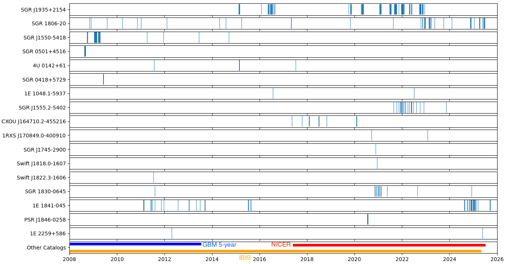
图注：Occurrence times of events across the 17 year observation period. The coverage of the first GBM magnetar catalog, along with the NICER and IBIS catalogs are shown in blue, red, and orange, respectively.
对应解读：对应“建议重点查看的图表”第2项时间轴活动史图，以及“关键图表逐图导读”图2。
入选理由：该图直接展示17年观测期内事件发生时间，并标出旧GBM目录、NICER和IBIS目录覆盖范围，是判断爆发是否成簇、哪些活动期贡献样本、以及新目录相对旧目录扩展幅度的核心图。它最能支撑日报中关于长期全天监测、活动期集中和跨目录时间覆盖差异的解读。
来源与置信度：\(arxiv_source\)；high；\(arxiv_source\) / revised.tex:figure[3]
Fig07
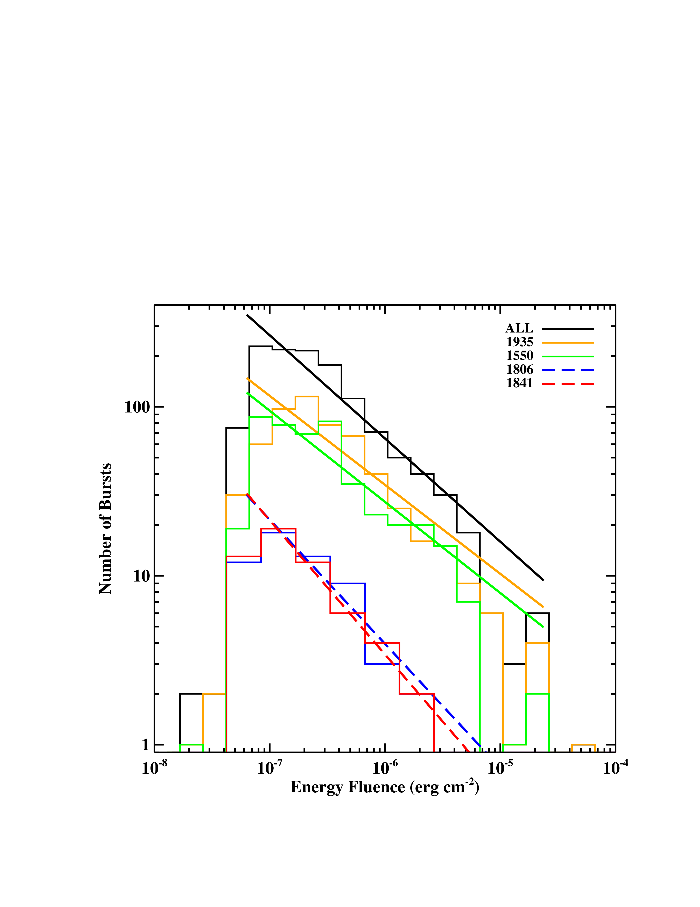
图注：Differential fluence distributions of bursts from all sample (black), \(\sgrone\) (orange), SGR J1550$-$5418 (green), SGR 1806$-$20 (blue-dashed), and 1E 1841$-$045 (red-dashed). The best-fitting power-law model is overlaid on each distribution. The fluence values were calculated over the 8$-$200 keV energy range.
对应解读：对应“建议重点查看的图表”第5项通量/流量分布图，以及“关键图表逐图导读”图5中关于fluence分布和幂律拟合的讨论。
入选理由：该图给出全样本及主要磁星源的8–200 keV微分fluence分布，并叠加最佳幂律模型，正好用于讨论低端不完备截断、高端是否由少数源支配以及能量函数斜率不能简单解释为本征分布的问题。
来源与置信度：\(arxiv_source\)；high；\(arxiv_source\) / revised.tex:figure[7]
Fig02
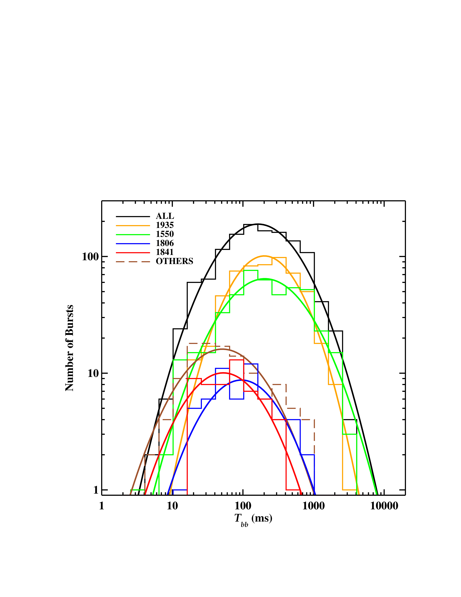
图注：$T_{bb}$ distribution of all sample (black), SGR J1935+2154 (orange), SGR J1550$-$5418 (green), SGR 1806$-$20 (blue), 1E 1841$-$045 (red), and others (brown, long-dashed). The best-fitting Gaussian model is overlaid on each distribution. The logarithmic y-axis is used solely to better illustrate the differences in the duration distributions among the magnetars.
对应解读：对应“建议重点查看的图表”第3项持续时间分布图，以及“关键图表逐图导读”图3。
入选理由：该图展示全样本和主要源的$T_{bb}$持续时间分布，并叠加高斯拟合，是理解磁星短暴时间尺度、源间差异、长尾和弱事件截断效应的关键诊断图。它直接支持日报中关于亚秒到秒量级持续时间分布及不同源叠加解释陷阱的说明。
来源与置信度：\(arxiv_source\)；high；\(arxiv_source\) / revised.tex:figure[2]
Fig05
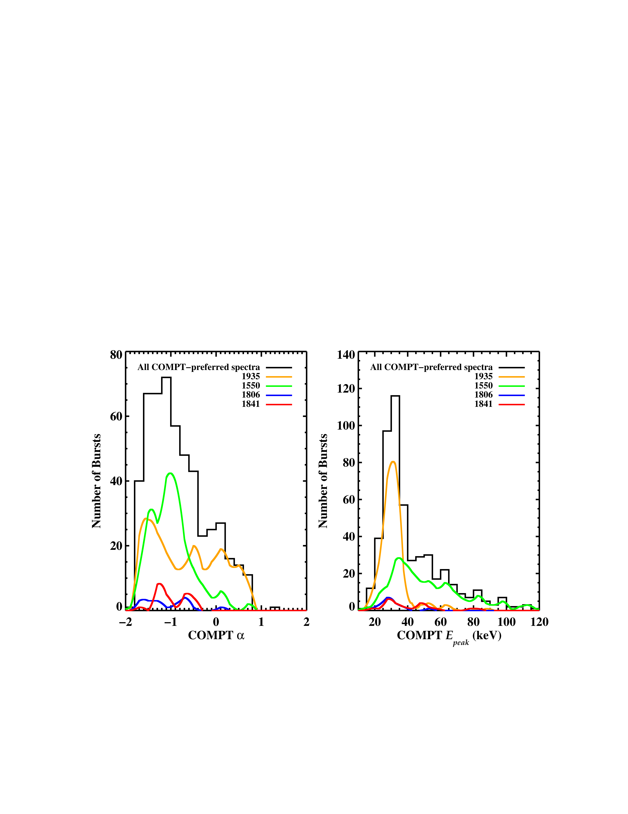
图注：The distributions of $\alpha$ \(\textbf{[Left]}\) and $E_{\rm peak}$ \(\textbf{[Right]}\) parameters of 512 spectra that favors COMPT model are shown in black. The same distribution profiles for the most burst prolific magnetars in our sample, \(\sgrone\) (N = 224), \(\sgrtwo\) (N = 209), SGR 1806$-$20 (N = 18), and 1E 1841$-$045 (N = 24), are shown on both panels in orange, green, blue, and red, respectively.
对应解读：对应“建议重点查看的图表”第4项能谱参数分布图，以及“关键图表逐图导读”图4中关于COMPT模型的$\alpha$与$E_{\rm peak}$分布。
入选理由：该图集中展示512个偏好COMPT模型谱的$\alpha$和$E_{\rm peak}$分布，并按主要爆发源分色，是评估截止幂律参数集中性、源间差异以及$\alpha$--$E_{\rm peak}$退化风险的重要图。相较单一温度图，它更能支撑日报中关于经验谱模型参数和拟合退化的讨论。
来源与置信度：\(arxiv_source\)；high；\(arxiv_source\) / revised.tex:figure[5]
Fig06
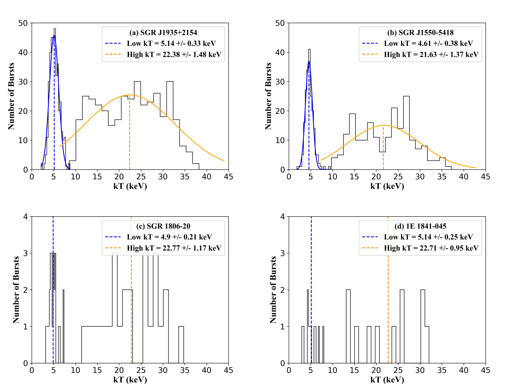
图注：The low and high \(\textit{kT}\) distributions for the spectra that prefer BB+BB model. Each prolific magnetar is shown separately in (a) \(\sgrone\) ($N=375$), (b) SGR J1550-5418 ($N=200$), (c) SGR 1806-20 ($N=25$), and (d) 1E 1841-045 ($N=11$). For (a) and (b), the Gaussian fits and means were shown with the curves and the dashed lines. For (c) and (d), the weighted mean is shown instead due to poor gaussian fits of low counts.
对应解读：对应“建议重点查看的图表”第4项能谱参数分布图，以及模型拟合段落中关于双黑体低温/高温分量退化和源间差异的讨论。
入选理由：该图分别给出偏好BB+BB模型事件的低、高$kT$分布，并按四个主要磁星源分面显示，还标出高斯拟合或加权均值。它非常适合说明双黑体模型参数是否集中、低计数源拟合不稳定，以及不能把两个温度直接解释为两个静态真实辐射区的注意事项。
来源与置信度：\(arxiv_source\)；high；\(arxiv_source\) / revised.tex:figure[6]
Fig01
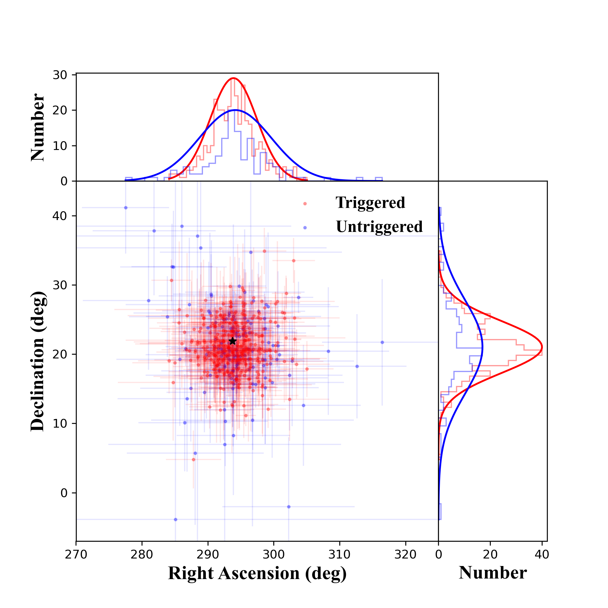
图注：\(\textbf{[Main]}\) Localization of triggered (red) and untriggered (blue) \(\sgrone\) bursts with their 1$\sigma$ uncertainties. The star denotes the accurate location of the magnetar. \(\textbf{[Top]}\) The distributions of Right Ascension for triggered (red) and untriggered (blue) events. \(\textbf{[Right]}\) The distributions of Declination for triggered (red) and untriggered (blue) events.
对应解读：对应“建议重点查看的图表”第1项源分布/定位信息，以及“关键图表逐图导读”图1。
入选理由：该图展示SGR J1935+2154触发与未触发爆发的GBM定位及1$\sigma$不确定度，并与磁星精确位置比较。虽然不是完整17源全天分布图，但它能支持日报中关于GBM定位较粗、源关联需结合已知活动源而不能过度解读位置精度的提醒。
来源与置信度：\(arxiv_source\)；high；\(arxiv_source\) / revised.tex:figure[1]
强相关工作
本文直接延续并大幅扩展早期 Fermi/GBM 5 年磁星爆发目录，也应与 Swift/BAT、INTEGRAL、Konus-Wind、HXMT 和 GECAM 的磁星短暴样本放在一起比较。检索关键词可用 “Fermi GBM magnetar burst catalog”、“SGR short bursts GBM”、“soft gamma repeater burst catalog”、“magnetar burst spectral catalog”。重点不是简单比事件数，而是比较能段、触发阈值、时间分辨率、响应处理和源关联策略。
理论背景上，这个目录服务于磁星模型、磁层重联、地壳破裂、自组织临界和 FRB 高能对应体研究。SGR J1935+2154 与 2020 年银河系 FRB 类事件的关联使磁星短暴目录有了新的多波段意义：可以检索同一源、同一活动期和同类爆发是否具有异常硬谱或高流量尾部。检索关键词可用 “SGR J1935+2154 FRB X-ray burst”、“magnetar self organized criticality”、“magnetar crust fracture”、“magnetar trapped fireball”。
可能的张力在于辐射模型解释。经验谱拟合常能用黑体、双黑体或截止幂律描述数据，但这些模型对应的物理图像并不唯一；同一计数谱可能由热化火球、磁层康普顿化或非热粒子辐射产生。后续工作若要用本文目录区分机制，必须联合时间结构、偏振、相位依赖、距离和多波段信息，而不是只比较单个温度或光子指数。
同一事件 / 同类源线索：
相似工作：
基础理论 / 方法工作：
相反观点 / 张力线索：
（未提供）
5. GRINTA: a new Probe of the Dynamic Universe
- 来源：arXiv / astro-ph.HE
- 链接：https://arxiv.org/abs/2609.02802v1
- 作者：Lorenzo Natalucci, Philippe Laurent, Marica Branchesi, Mariateresa Fiocchi, Lorraine Hanlon, J. Miguel Mas-Hesse, Aline Meuris, Paul 'O Brien
- 评分：novelty 6/10，importance 8/10，relevance 9/10，final 8.75/10
- 推荐理由：提出5 keV-10 MeV瞬变监测小卫星GRINTA，面向GRB、多信使网络和快速定位；属于高能伽马/硬X射线仪器方案，相关性高，但目前主要是任务概念。
中文题目：GRINTA：面向动态宇宙的新型探针
做了什么：这篇白皮书/任务概念论文提出了一个面向 2035 年后瞬变天文学的中小型空间任务：GRINTA，即 Gamma-Ray INternational Transient Array Observatory。它计划用两个互补载荷覆盖 \(5\,\mathrm{keV}\) 到 \(10\,\mathrm{MeV}\) 的宽能段，在约半个天空视场内探测并定位伽马射线暴和其他高能瞬变，同时还能做亚角分级成像巡天。核心目标不是单纯“多发现几个暴”，而是在未来引力波、 neutrino 和大型电磁设施进入新一代运行阶段时，提供快速、较高精度的高能触发和定位。论文的重要性在于它把灵敏度、角分辨率、宽能段覆盖、快速随访和多信使网络接入作为一个系统工程问题来讨论，而不是只强调单个探测器指标。
为什么重要：2030 年代中后期的瞬变天文学会面临一个很实际的问题：地面引力波探测器、Cherenkov Telescope Array Observatory、Rubin Observatory、SKA 及下一代 neutrino 探测器会产生大量候选事件，但真正能把事件迅速归因到一个天体源的，往往仍需要高能空间触发器提供时间、天区和谱信息。GRINTA 针对的正是这个瓶颈：在 \(5\,\mathrm{keV}\) 到 \(10\,\mathrm{MeV}\) 之间覆盖软 \(X\) 射线到 MeV 伽马射线，把伽马暴、磁星暴发、潮汐瓦解事件、高能双星和可能的引力波电磁对应体放在同一个快速响应框架下处理。
理论 / 观测 / 仪器方法价值：对观测来说，GRINTA 的价值在于把大视场瞬变监测和较高角分辨成像结合起来，减少许多高能任务常见的“能触发但定位太粗”问题。对理论来说，它能给喷流启动、相对论外流成分、短暴与双中子星并合、低光度伽马暴和磁星巨耀发等模型提供更完整的早期光变和宽能段谱约束。对仪器和方法来说，论文展示了未来小任务如何通过载荷互补、自动触发、快速姿态响应和多信使警报接口，填补大型旗舰任务之间的时间域空白。
为什么应该关注：如果你关心 2035 年后动态宇宙观测生态，这篇文章值得读，因为它讨论的是“谁来做高能天空的快速哨兵”这一基础设施问题。很多多信使科学并不缺后续大望远镜，而是缺少能够在秒到小时尺度上给出可靠触发、能谱和定位的空间节点。GRINTA 若实现，将直接影响短伽马暴样本、引力波对应体搜索效率、MeV 瞬变人口统计，以及未来警报网络中哪些事件会被优先随访。
展开详细解读：文章讲解、背景、理论、重点章节、图表与相关工作
文章详细讲解
科学问题：论文面对的是 2030 年代动态宇宙研究中的一个系统性缺口。多波段和多信使设施会越来越强，但高能瞬变的第一触发仍然依赖空间载荷。许多关键源类，例如短伽马射线暴、双中子星并合后的高能对应体、磁星巨耀发、低光度伽马暴、超新星 shock breakout 以及快速吸积事件，都需要在毫秒到小时尺度内得到宽能段记录。单靠窄视场高灵敏度仪器会漏掉大量短时标事件；单靠全天监视器又常常受限于角分辨率和能谱覆盖。GRINTA 的科学问题就是：能否用一个相对小型、国际化、反应快速的空间任务，在 \(5\,\mathrm{keV}\) 到 \(10\,\mathrm{MeV}\) 范围内同时提供触发、定位、谱测量和多信使接口。
作者怎么做：论文提出 GRINTA 携带两个互补载荷。虽然摘要没有展开所有工程细节，但任务概念的逻辑很清楚：一部分载荷负责宽视场瞬变探测和触发，覆盖较大天区并对伽马射线暴等快速事件给出初始定位；另一部分载荷负责成像巡天和更精细定位，目标是达到亚角分级角分辨能力。任务将覆盖总计 \(5\,\mathrm{keV}\) 到 \(10\,\mathrm{MeV}\) 的能段，正好横跨软 \(X\) 射线、硬 \(X\) 射线和 MeV 伽马射线，是许多瞬变非热辐射峰值所在区域。作者还强调 GRINTA 需要与未来电磁、引力波和 neutrino 网络耦合，而不是作为孤立望远镜运行。
关键结果：这篇文章的“结果”主要是任务能力论证而非单个天体发现。摘要给出的核心指标包括：覆盖约半个天空的伽马暴探测和定位能力；从毫秒到小时的时间尺度覆盖；总能段 \(5\,\mathrm{keV}\) 到 \(10\,\mathrm{MeV}\)；亚角分级成像巡天；以及面向 2035 年后多信使设施的快速随访。它的科学收益来自这些指标的组合：宽视场保证触发率，宽能段保证能谱峰和非热尾部可测，较好定位保证地面大型设施可跟进，快速响应保证早期余辉和电磁对应体不会错过。
局限和下一步：作为任务概念论文，最需要进一步量化的是探测有效面积、背景水平、触发阈值、实时定位误差分布、天空曝光非均匀性、数据下传延迟、姿态机动约束和任务寿命内的事件率预测。真正判断 GRINTA 科学产出的，不只是名义能段或视场，而是对不同源类的灵敏度曲线、误警率控制和警报延迟。下一步应包括端到端仿真：用真实伽马暴光变和谱参数分布、轨道背景、地球遮挡、南大西洋异常区、触发算法和多信使随访窗口，估算可定位事件数、可进行红移测量的事件数，以及与引力波/neutrino 事件重合的期望产额。
关键结果是怎么做出来的
本文最重要的证据链不是来自新观测样本，而是来自任务需求到载荷能力的匹配。数据/样本层面，作者面向的“样本”是未来十多年中由伽马暴、其他高能瞬变、引力波候选体和 neutrino 警报构成的动态天空事件集。摘要明确给出 GRINTA 将覆盖约半个天空，这意味着它的瞬时立体角接近全天的一半量级，因此对各向同性短时标事件具有较高触发覆盖率。读者应特别关注正文是否把这个视场转换成每年预期伽马暴触发数、短暴触发数和多信使重合事件数。
事件统计和显著性方面，任务概念论文通常会用阈值信噪比、背景计数涨落和定位误差来定义“可探测”和“可定位”。关键不是只看 GRINTA 宣称“good sensitivity”，而要看它在不同积分时间 \(\Delta t\)、不同能段和不同入射角下的最小可探测通量。对于毫秒级短暴，背景计数少但源光子也少；对于小时级瞬变，系统背景和轨道调制会变重要。因此正文若有灵敏度曲线，应检查它是否分别给出短时标触发、长时标图像叠加和巡天模式的阈值。
模型比较和任务定位方面，GRINTA 的论证应该与现有和计划中设施形成对照：例如 Swift/BAT 的快速定位能力、Fermi/GBM 的全天覆盖但定位较粗、SVOM 的伽马暴多波段策略，以及未来 MeV 任务的谱能力。它的关键卖点是同时强调宽能段、较大视场、亚角分级成像和快速接入多信使网络。读者应看表格中是否列出这些任务的能段、视场、定位精度、灵敏度和警报延迟，因为这些比较直接决定 GRINTA 是否真的填补空白，而非重复已有功能。
支撑结论的图表很可能包括任务概念图、载荷能段覆盖图、灵敏度与能量关系图、视场或天空覆盖示意图、伽马暴红移/峰通量探测范围预测、多信使协同时间线等。最应关注的是灵敏度曲线和定位精度随通量变化的诊断图：只有把统计误差、系统定位误差和背景误差一起纳入，所谓“sub-arcmin resolution”才有实际随访意义。若正文给出模拟源注入恢复结果，应看恢复率随入射角和谱形的变化，而不是只看最佳视轴指标。
系统误差和稳健性检验主要来自仪器背景、触发选择效应和多信使警报配准。轨道环境会导致带电粒子背景、地球反照伽马射线和激活背景变化；宽视场探测器还会受到离轴响应不确定性影响。短伽马暴与地面引力波候选体的关联显著性取决于时间窗、空间重叠和先验事件率，因此误关联率需要通过随机时间平移或天空 scramble 估计。若论文没有充分给出这些端到端误警率估计，那么任务科学收益仍属于合理但待验证的预测。
展开背景、理论、公式、模型、章节和图表导读
背景知识
GRINTA 关注的研究对象是高能瞬变天空。所谓瞬变包括时间尺度从毫秒到小时甚至天级变化的天体事件，其中伽马射线暴是最典型的高能快速瞬变。长伽马暴通常与大质量恒星坍缩有关，短伽马暴通常与致密双星并合有关；但实际分类并不总是由持续时间单独决定，谱硬度、宿主环境、余辉和可能的超新星或千新星信号都很重要。
历史上，高能瞬变天文学由全天监视器推动。BATSE 建立了伽马暴各向同性分布和持续时间双峰的经典图像；Swift 用快速精确定位把伽马暴带入余辉和红移时代；Fermi/GBM 扩大了全天伽马暴触发率并提供宽能段谱；INTEGRAL、AGILE、MAXI、Konus-Wind 等也在特定能段和触发网络中扮演重要角色。每代任务都暴露出一个取舍：视场、灵敏度、定位精度、能段覆盖和响应速度难以同时最优。
为什么现在值得重新看？因为 2030 年代后半叶的多信使生态会与 Swift 发射时代完全不同。引力波探测器的探测距离和事件率会提高，neutrino 探测器会给出更多候选高能天体方向，大型光学巡天会发现海量短时标候选。高能空间触发不再只是“发现伽马暴”，而是承担多信使事件筛选、分类和优先级排序的功能。一个能快速给出高能时间、位置和谱约束的任务，会显著降低地面后随访的搜索体积和误警成本。
该领域常见误区之一是把“全天覆盖”误认为“高科学产出”。如果定位误差是数度，许多光学/红外大望远镜仍难以及时锁定对应体；如果能段太窄，就可能错过谱峰或误判辐射机制。另一个误区是把高能触发和多信使关联看成简单时间重合。实际上，关联显著性取决于时间窗、空间后验、源类先验、探测选择函数和背景事件率。GRINTA 的价值必须在这些统计和系统条件下评估。
基础理论 / 方法脉络
高能瞬变观测的基本物理图像是：一个紧致天体系统在短时间内释放巨大能量，形成相对论外流、热等离子体或磁化喷流，随后通过同步辐射、逆康普顿散射、光球辐射或核衰变等机制产生从 \(X\) 射线到伽马射线的光子。观测者最先拿到的通常不是完整物理模型，而是光变曲线、能谱、到达时间、天空位置和后续多波段对应体。
GRINTA 的任务设计对应两个关键观测量：探测显著性和定位精度。探测显著性取决于源在某一时间窗内贡献的计数相对于背景涨落是否足够大。定位精度则取决于成像编码、探测器响应、光子统计和系统误差。大视场探测器有利于发现事件，但离轴响应复杂；成像探测器有利于精确定位，但视场、有效面积和背景控制会限制灵敏度。
宽能段覆盖在物理上很重要。伽马暴的 \(\nu F_{\nu}\) 谱峰常落在几十 \(\mathrm{keV}\) 到数 \(\mathrm{MeV}\) 范围，软 \(X\) 射线早期余辉又携带喷流减速、吸收和高纬度辐射信息。如果只有硬 \(X\) 射线触发，可能低估软瞬变；如果只有 MeV 通道，可能无法定位或测量早期软成分。GRINTA 的 \(5\,\mathrm{keV}\) 到 \(10\,\mathrm{MeV}\) 能段正是为减少这种谱选择效应而设。
多信使关联的统计逻辑也需要基础理解。一个引力波候选体通常给出大面积天空概率图和距离后验；一个伽马暴探测器给出时间戳、天空位置和能谱。若两者在时间和天空上重合，关联概率并不等于 \(1\)，而要与偶然重合率比较。GRINTA 若能把高能定位从数度改善到角分或亚角分量级，就会显著压缩空间先验体积，提高关联判定和后续观测效率。
常见退化和系统误差包括谱形与探测响应退化、离轴角与通量退化、背景变化与长时标瞬变退化、触发阈值与样本人口统计退化。一个仪器越宽视场，响应矩阵越依赖入射方向；一个任务越强调快速触发，误警控制和自动分类越关键。因此评价 GRINTA 不能只看名义灵敏度，还要看响应校准、背景建模、触发算法和警报延迟的端到端性能。
公式与推导
第一步，从光子通量到探测计数。设源的微分光子通量为 \(F(E,t)\)，单位可取 \(\mathrm{ph}\,\mathrm{cm}^{-2}\,\mathrm{s}^{-1}\,\mathrm{keV}^{-1}\)，探测器有效面积为 \(A_{\rm eff}(E,\theta)\)，其中 \(\theta\) 是离轴角。时间窗 \(\Delta t\) 内的源计数为
这里 \(E_1\) 和 \(E_2\) 对 GRINTA 可对应 \(5\,\mathrm{keV}\) 与 \(10\,\mathrm{MeV}\) 的不同子能段。这个式子说明能段、有效面积和入射角共同决定触发能力。
第二步，背景计数决定阈值。若背景计数率谱为 \(B(E,t,\theta)\)，则背景计数近似为
在背景较大且近似泊松涨落可高斯化时，常用触发信噪比为
其中 \(\sigma_{\rm sys}\) 表示背景模型、轨道环境和响应校准带来的系统误差项。毫秒触发常受光子统计限制，小时级搜索则更容易受 \(\sigma_{\rm sys}\) 限制。
第三步，最小可探测通量可由阈值反推。若在某个能段内近似有平均有效面积 \(\bar{A}_{\rm eff}\)，背景为 \(N_{\rm b}\)，触发阈值为 \(q\)，则时间平均光子通量阈值近似满足
该式的物理含义是：在纯泊松背景下，\(F_{\rm min}\) 大致随 \(\Delta t^{-1/2}\) 改善；但若系统误差占优，长时间积分不会无限提高灵敏度。
第四步，宽能段谱测量通常需要折叠仪器响应。若真实源谱参数为 \(\boldsymbol{\phi}\)，响应矩阵为 \(R_i(E,\theta)\)，第 \(i\) 个探测通道的模型计数为
其中 \(T\) 是曝光时间，\(b_i\) 是背景期望计数。这个方程连接了物理谱模型和实际探测器通道，是宽能段任务估计 \(E_{\rm peak}\)、低能谱指数和高能谱尾的基础。
第五步，瞬变谱常用分段或平滑断裂模型描述。以常见 Band 型谱为例，可写成
其中 \(A\) 是归一化，\(\alpha\) 与 \(\beta\) 是低能和高能光子谱指数，\(E_{\rm c}\) 是截止能量，\(C\) 由连续性条件确定。宽能段覆盖越好，\(\alpha\)、\(\beta\) 和谱峰位置之间的退化越弱。
第六步，能量通量与各向同性等效能量给出源物理尺度。若观测能量通量为 \(G(t)=\int E F(E,t)dE\)，红移为 \(z\)，光度距离为 \(D_{\rm L}\)，则各向同性等效辐射能量可写为
这里的 \((1+z)^{-1}\) 来自宇宙学时间膨胀修正。GRINTA 本身未必测红移，但它的定位精度会影响后续找到宿主和测量 \(z\) 的概率。
第七步，定位误差可用统计项和系统项合成。若点扩散函数或成像响应的有效宽度为 \(\sigma_{\rm psf}\)，源净计数为 \(S\)，则理想统计定位误差可近似写为
其中 \(\sigma_{\rm cal}\) 是姿态、几何校准和响应模型系统误差。亚角分定位要求不仅有足够 \(S\)，还要求 \(\sigma_{\rm cal}\) 被控制到相应量级。
第八步，多信使关联可用空间和时间似然比表示。若高能事件数据为 \(d_{\gamma}\)，引力波或 neutrino 数据为 \(d_{\rm mm}\)，共同源假设为 \(H_1\)，偶然重合假设为 \(H_0\)，则可定义
当 GRINTA 改善 \(d_{\gamma}\) 中的位置和时间信息时，\(\Lambda\) 会增加，误关联率下降。这正是快速、精确高能定位对多信使天文学的统计价值。
模型拟合 / 应用方法
对 GRINTA 这类任务论文，模型拟合首先体现在灵敏度和触发率预测，而不是传统单源参数估计。需要拟合或假设的量包括源族群的光度函数、谱参数分布、持续时间分布、红移分布、仪器有效面积、能量响应、背景模型和触发阈值。最终输出通常是每年探测事件数、定位精度分布、不同源类的发现率和与多信使事件重合的期望数。
似然层面，实际飞行数据会采用泊松计数统计。每个探测通道和时间 bin 的观测计数 \(n_i\) 与模型计数 \(\mu_i\) 比较，\(\mu_i\) 包含源模型折叠响应后的计数和背景项。触发阶段可能使用滑动时间窗的信噪比或似然比；离线分析则会用更完整的响应矩阵、背景模板和成像重建来改进定位与谱参数。关键诊断是残差是否随能量、时间、探测器方位或轨道位置出现系统结构。
参数退化非常重要。谱峰位置与有效面积能量依赖会退化，尤其当 \(E_{\rm peak}\) 接近能段边界时；离轴角与通量会退化，因为离轴响应降低可能被误解释为源本身更暗；背景长期漂移与小时级弱瞬变会退化，可能导致假阳性或压低真实信号显著性。若任务强调宽能段和大视场，就必须通过地面标定、在轨标准源、地球掩星背景建模和跨探测器一致性检验来缓解这些问题。
系统误差还会进入多信使应用。一个高能事件与引力波候选体是否关联，取决于时间窗选择、天空概率图重叠、源族群先验和背景触发率。若 GRINTA 的警报定位存在非高斯尾部，后续望远镜可能低估搜索区域；若触发样本受谱硬度偏置，短暴人口统计也会偏离真实分布。因此拟合时应保留完整定位概率图和选择函数，而不是只发布一个最佳位置和圆形误差半径。
实际应用中，GRINTA 数据会被用于快速分类和后续观测优先级排序。一个高显著性、硬谱、短持续时间且与引力波时间窗重合的事件，会被赋予较高双中子星并合候选优先级；一个较软、长时标、低银纬事件则可能需要与 X 射线双星、磁星或太阳活动背景区分。模型拟合的成功不只体现在论文中的灵敏度曲线，而体现在警报流能否稳定给出可解释的概率、误警率和源类标签。
重点章节 / 结果段落怎么读
一、科学动机和任务定位部分应先读。这里会说明 GRINTA 为什么需要在 2035 年后运行，以及它相对于 Swift、Fermi、SVOM、INTEGRAL 和未来多信使设施的功能定位。读者应关注作者是否明确列出未被现有任务满足的需求，而不是泛泛强调瞬变天文学重要。
二、载荷与任务设计部分是判断论文可信度的核心。重点看两个互补载荷如何分工：哪个负责大视场触发，哪个负责成像和精定位；各自覆盖哪些能段；视场、有效面积、角分辨率、时间分辨率和数据下传延迟如何匹配科学目标。
三、灵敏度、定位和触发性能部分最值得细读。若正文给出灵敏度曲线、定位误差随源强变化、触发效率模拟或天空覆盖图，应检查这些结果是否包含离轴响应、背景变化和系统误差。名义最佳指标通常不足以代表真实巡天表现。
四、多信使协同部分要结合未来设施读。作者会讨论 GRINTA 如何与引力波、neutrino 和地面电磁设施联动。读者应看警报延迟、位置格式、概率图发布、自动化随访和事件优先级排序是否具体，因为这些工程接口直接决定科学收益。
五、讨论和展望部分应关注风险。任务概念论文通常会强调科学潜力，但读者需要主动寻找尚未定量的部分，例如事件率预测的不确定性、背景模型假设、轨道选择、国际协作数据政策和与同期任务的重叠或互补关系。
建议重点查看的图表
-
任务架构或载荷示意图：看两个载荷的几何布局、视场方向、是否能同时覆盖大视场监测和成像定位需求。
-
能段覆盖与现有任务比较图：重点看 \(5\,\mathrm{keV}\) 到 \(10\,\mathrm{MeV}\) 是否连续覆盖，以及与 Swift/BAT、Fermi/GBM、INTEGRAL、SVOM 等的重叠和空白。
-
灵敏度曲线：检查纵轴是能量通量、光子通量还是阈值 fluence；横轴是能量还是积分时间；是否区分短触发和长积分巡天。
-
视场和天空覆盖图：看所谓约半个天空覆盖是否扣除了地球遮挡、太阳/月亮限制、南大西洋异常区和仪器死区。
-
定位精度随源强或离轴角变化图：不要只看最佳情况下的亚角分结果，应看弱源和大离轴角时误差是否迅速变差。
-
模拟事件率或源族群收益表：看每年总伽马暴数、短暴数、可红移数、多信使重合数分别是多少，以及这些数值对阈值和光度函数假设有多敏感。
-
警报流程或多信使协同时间线：关注触发到发布的延迟、是否能发布概率天空图、是否支持自动化地面随访。
关键图表逐图导读
图 1：若为任务概念或载荷布局图，横向读法是先看两个互补载荷的相对指向和视场，再看它们如何共同覆盖天空。数据点通常不重要，关键是几何关系和视场重叠。读图陷阱是把示意视场当成有效灵敏视场；实际有效视场应由离轴响应和阈值定义。
图 2：若为能段覆盖比较图，横轴通常是光子能量，纵向可能列出不同任务或载荷。应检查 GRINTA 是否真正从 \(5\,\mathrm{keV}\) 连到 \(10\,\mathrm{MeV}\)，以及在几十 \(\mathrm{keV}\) 到 MeV 区间是否有足够重叠用于交叉定标。读图陷阱是能段覆盖不等于相同灵敏度；能段边缘的有效面积可能很低。
图 3：若为灵敏度曲线，横轴可能是能量或积分时间，纵轴可能是最小可探测通量或 fluence。模型线越低表示越灵敏，但要确认置信水平、触发阈值和背景假设是否一致。读图时应比较 GRINTA 与 Swift/BAT、Fermi/GBM 或其他 MeV 任务在短时标和长时标下的相对表现。
图 4：若为天空覆盖或视场图，坐标轴可能是天球坐标或仪器坐标，颜色代表曝光、有效面积或触发概率。应看覆盖是否均匀，是否存在大面积低响应区域。读图陷阱是瞬时覆盖与长期巡天曝光不同；多信使随访更关心某一警报时刻的瞬时可见性。
图 5：若为定位误差图，横轴可能是源峰通量、净计数或离轴角，纵轴是误差半径。关键看统计误差下降后是否出现系统误差平台；如果强源误差不再随计数改善，说明校准项占主导。读图时还应确认误差半径对应 \(68\%\)、\(90\%\) 还是其他置信水平。
图 6：若为事件率预测表或柱状图，应分开看总触发数、精定位数、可后随访数和多信使重合数。不要把总伽马暴数等同于高价值科学样本数；真正稀缺的是有精确定位、早期余辉、红移或引力波/neutrino 关联的子样本。
论文原图 / 可嵌入图片
Fig01
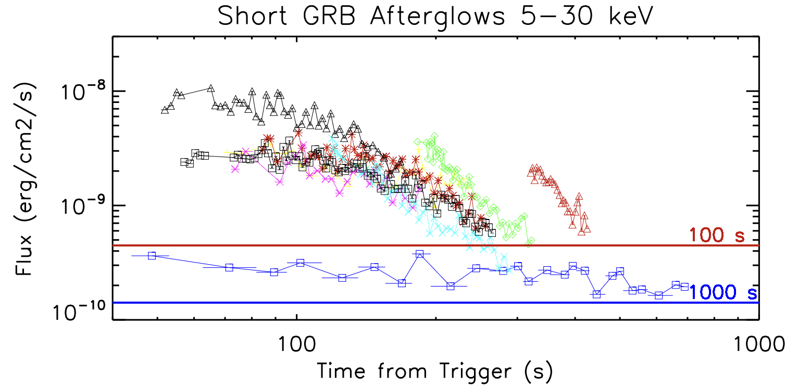
图注：Sample of XRT sGRB afterglows extrapolated to 5--30\,keV. The continuous, red and blue lines are the minimum detectable flux for an exposure of 100s and 1000s, respectively.
对应解读：建议重点查看的图表第3项“灵敏度曲线”，以及关键图表逐图导读中关于图3灵敏度、短/长积分时间阈值比较的段落。
入选理由：该图直接给出5--30 keV短伽马暴余辉样本与100 s、1000 s最小可探测通量线，是判断GRINTA能否在早期余辉阶段实现有效探测的核心性能图。它比硬件照片或电子学框图更能支撑日报中关于积分时间、通量阈值和快速随访能力的解读。
来源与置信度：\(arxiv_source\)；high；\(arxiv_source\) / main.tex:figure[1]
Fig02
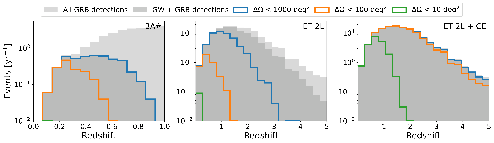
图注：Redshift distribution of the joint GW+$\gamma$-ray detections with \(\textit{GRINTA}/TED\) with 3A$^{\#}$ (left), and ET in 2L configuration (center) and ET 2L + Cosmic Explorer (right). The histograms are normalised to one year of observations. $\Delta \Omega$ indicates the area of the GW sky localisation.
对应解读：建议重点查看的图表第6项“模拟事件率或源族群收益表”，以及模型拟合段落中关于多信使重合率、红移分布和GW+$\gamma$联合探测的讨论。
入选理由：该图展示GRINTA/TED与未来引力波探测器联合探测的红移分布，并给出不同GW网络配置下的一年归一化直方图和GW天空定位面积，是评估2035年后多信使科学收益的关键证据。它直接对应日报中强调的联合探测、红移产额和多信使样本价值。
来源与置信度：\(arxiv_source\)；high；\(arxiv_source\) / main.tex:figure[2]
Fig07
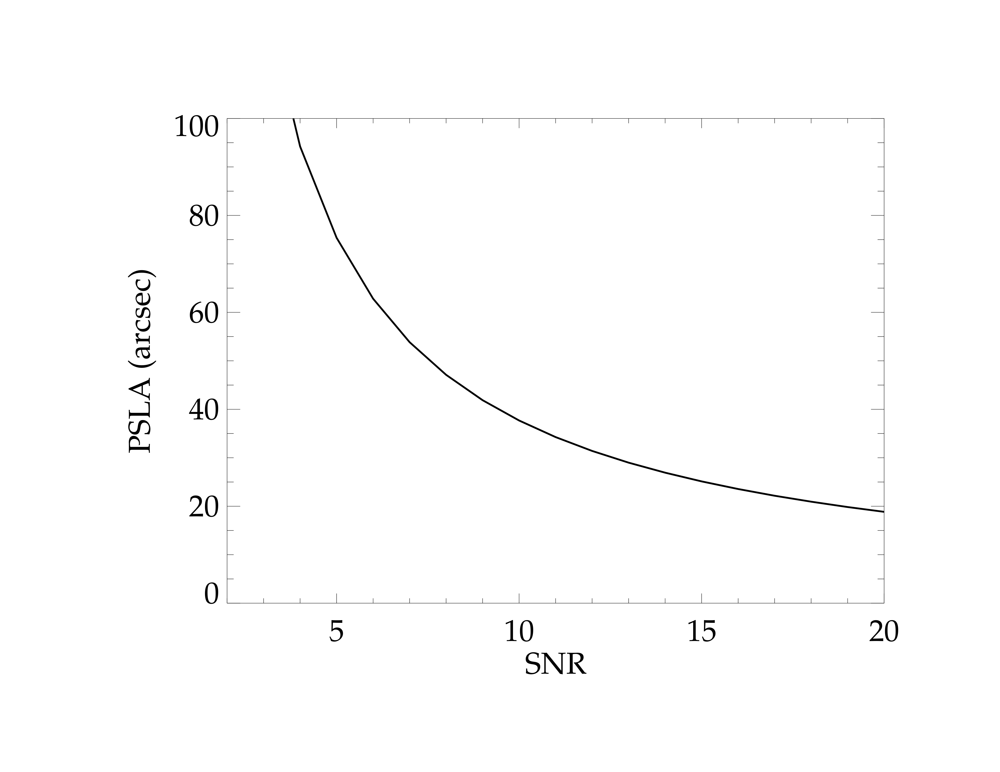
图注：HXI Point source location error (90\% c.l) as a function of the signal-to-noise ratio.
对应解读：建议重点查看的图表第5项“定位精度随源强或离轴角变化图”，以及关键图表逐图导读中图5关于误差半径、信噪比和置信水平的段落。
入选理由：该图给出HXI点源定位误差随信噪比变化，并明确为90%置信水平，是判断亚角分定位能力是否只适用于强源、弱源误差如何恶化的最直接图表。它对日报中关于系统误差平台、置信区间和后续望远镜搜索区域的讨论最有支撑力。
来源与置信度：\(arxiv_source\)；high；\(arxiv_source\) / main.tex:figure[7]
Fig04
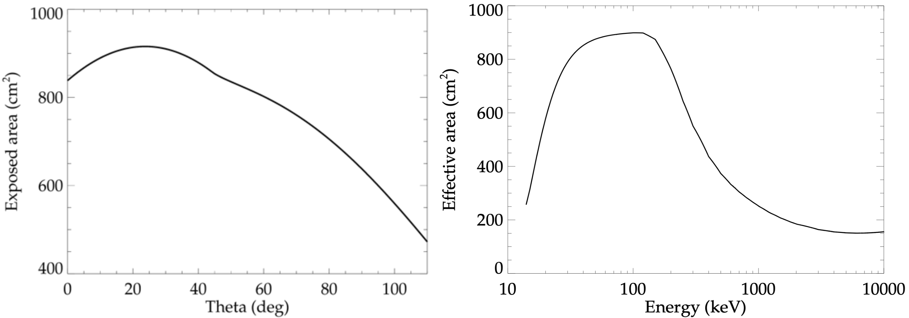
图注：(Left): TED exposed detector area as a function of polar angle from the S/C boresight. (Right): Effective area of TED at 30 degrees polar angle.
对应解读：建议重点查看的图表第3、4、5项中关于有效面积、视场/离轴响应和灵敏度随角度变化的部分。
入选理由：左图给出TED暴露探测面积随航天器boresight极角变化，右图给出30度离轴有效面积；这比单纯视场示意更接近真实触发能力和天空覆盖的物理限制。它能支撑日报中提醒不要把名义视场等同于有效灵敏视场的解读。
来源与置信度：\(arxiv_source\)；high；\(arxiv_source\) / main.tex:figure[4]
Fig03
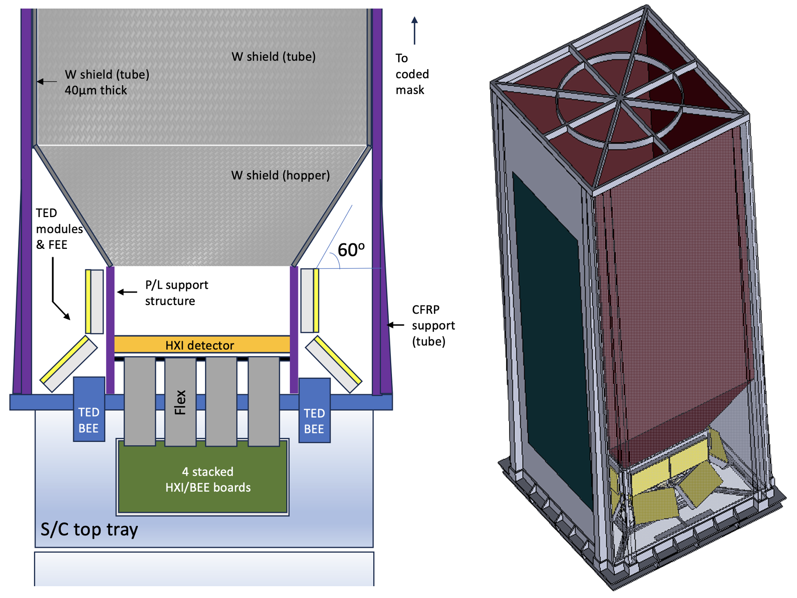
图注：(Left) Schematic of the \(\textit{GRINTA}\) detector payload elements (side view). (Right) 3D- view of payload accommodation. The passive shield system is shown in dark brown. On the top, the coded mask supporting structure.
对应解读：建议重点查看的图表第1项“任务架构或载荷示意图”，以及关键图表逐图导读中图1关于两个互补载荷几何布局和视场关系的段落。
入选理由：该图展示GRINTA探测器载荷元素的侧视示意和3D载荷安装，包括被动屏蔽和编码孔径结构，是理解TED与成像载荷如何在平台上集成的主要架构图。虽然它不是定量性能图，但对解释大视场监测与成像定位的载荷逻辑很有用。
来源与置信度：\(arxiv_source\)；high；\(arxiv_source\) / main.tex:figure[3]
Fig09
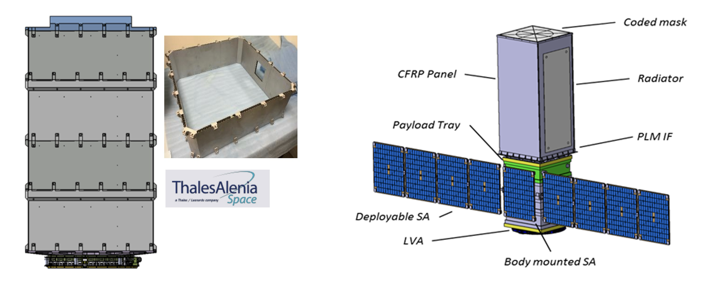
图注：\(\textit{GRINTA}\) Spacecraft Overview. (Left) schematic of the NIMBUS trays structure (adapted from Ref.\citenum{TASI2024}). (Right) overview of the GRINTA satellite.
对应解读：建议重点查看的图表第1项“任务架构或载荷示意图”中关于航天器总体构型和载荷安装环境的补充。
入选理由：该图给出GRINTA spacecraft overview，可作为Fig03载荷级示意的系统级补充，帮助读者理解整星结构与载荷 accommodation。不过它与日报中强调的灵敏度、定位、事件率和多信使诊断量关系较弱，因此排序低于性能曲线和联合探测图。
来源与置信度：\(arxiv_source\)；high；\(arxiv_source\) / main.tex:figure[9]
强相关工作
这篇工作与同类高能瞬变任务直接相关。Swift 的历史作用是快速定位和余辉跟进，Fermi/GBM 的优势是大视场和宽能段触发但定位较粗，SVOM 代表面向伽马暴多波段协同的新一代策略，INTEGRAL 和 Konus-Wind 则长期提供硬 \(X\) 射线/伽马射线瞬变监测。GRINTA 的定位应放在这些任务的取舍图中理解：它试图同时靠近大视场、高灵敏度、较好定位和多信使接口这几个目标。建议检索关键词包括 “Swift BAT gamma-ray burst localization”, “Fermi GBM GRB catalog”, “SVOM mission gamma-ray bursts”, “MeV transient mission sensitivity”。
与理论和多信使背景相关的工作包括短伽马暴与致密双星并合模型、GW170817/GRB 170817A 的历史样例、磁星巨耀发可能伪装成短伽马暴的问题，以及 MeV 天文学长期存在的灵敏度缺口。GRINTA 并不直接解决喷流物理的全部理论争议，但它能提供更好的早期高能数据和选择函数，从而检验喷流角结构、低光度伽马暴人口、光球与同步辐射成分比例等问题。建议检索关键词包括 “GRB 170817A multi-messenger”, “short gamma-ray bursts neutron star mergers”, “magnetar giant flare short GRB contamination”, “MeV astronomy mission concept review”。
同一事件 / 同类源线索：
- https://arxiv.org/abs/2609.02802
- https://swift.gsfc.nasa.gov/
- https://fermi.gsfc.nasa.gov/
- https://www.svom.eu/en/
- https://www.cta-observatory.org/
- https://www.ligo.caltech.edu/
- https://icecube.wisc.edu/
相似工作：
- https://swift.gsfc.nasa.gov/
- https://fermi.gsfc.nasa.gov/
- https://www.svom.eu/en/
- https://www.isdc.unige.ch/integral/
基础理论 / 方法工作：
相反观点 / 张力线索：
（未提供）
6. Magnetized accretion onto rapidly spinning binary black holes: mini-disk thermodynamics, magnetic transport, and dual jets
- 来源：arXiv / astro-ph.HE
- 链接：https://arxiv.org/abs/2609.02867v1
- 作者：Luciano Combi, Manuela Campanelli, Sean M. Ressler, Alexander J. Dittmann, Federico Cattorini
- 评分：novelty 7/10，importance 8/10，relevance 8/10，final 8.70/10
- 推荐理由：三维GRMHD模拟快速自旋超大质量双黑洞吸积、mini-disk和双喷流，给出磁通输运、喷流交替和热力学影响等较具体结果；虽非伽马射线核心主题，但对AGN喷流和多信使源建模有价值。
中文题目：快速自旋双黑洞的磁化吸积：迷你盘热力学、磁输运与双喷流
做了什么：这篇论文用三维广义相对论磁流体力学模拟研究了一个等质量、快速自旋的超大质量双黑洞系统：双黑洞间距为 \(30\,r_g\)，单个黑洞无量纲自旋为 \(\chi=0.9\)，外部有已经弛豫的磁化 circumbinary disk。作者重点追踪气体如何从双黑洞共同盘进入空腔、形成两个持久迷你盘，并把磁通量输运到视界上，最终驱动两股相互作用的相对论性喷流。主要结论是：在这个较大间距下，迷你盘不是短暂结构，而是能储存质量并调制吸积；两个黑洞的视界磁通量和喷流功率会交替增强，出现类似“开—关”的双喷流状态；喷流能量抽取效率可达约 \(40\%\)。他们还比较了空腔内高效冷却与低效冷却两种迷你盘热力学，发现较热的迷你盘质量更低、周期性更不相干、喷流也更暗，即使视界磁通量相近。
为什么重要：超大质量双黑洞是脉冲星计时阵列和未来空间引力波探测器的重要目标，但电磁识别一直受活动星系核随机变光的干扰。本文的重要性在于，它把较大分离、快速自旋、磁化吸积、迷你盘热力学和喷流发射放在同一个广义相对论模拟中处理，给出了哪些电磁特征可能真正来自双黑洞轨道动力学、哪些会被盘内湍流和热物理洗掉的判断。
理论 / 观测 / 仪器方法价值：对理论来说，本文提供了从 circumbinary disk 到两个视界的磁通量输运图像，并检验了类 Blandford--Znajek 喷流在双黑洞环境中的非稳态表现。对观测来说，它提示双喷流并不一定稳定对称，而可能随迷你盘间气体 sloshing 和偏心共同盘交替点亮。对方法来说，它展示了为什么只看质量吸积率周期性不够，还要同时看视界磁通量、喷流功率、迷你盘质量、冷却处方和电流片结构。
为什么应该关注：如果你关心低频引力波源的电磁对应体，这篇文章值得看，因为它把“周期性光变等于双黑洞”这个常见说法复杂化了：相干周期性会受到迷你盘热力学、磁通量竞争和喷流相互作用的强烈影响。它也提醒做 AGN 时域巡天和 VLBI 喷流解释的人，双黑洞可能表现为两个交替工作的喷流引擎，而不是简单的双峰或双核稳态结构。
展开详细解读：文章讲解、背景、理论、重点章节、图表与相关工作
文章详细讲解
科学问题：超大质量双黑洞若处在富气体环境中，应同时产生低频引力波和电磁辐射。但电磁端的核心困难是，AGN 本身有红噪声、湍流和喷流闪烁，简单的准周期光变并不能唯一指向双黑洞。本文问的是：在较大轨道间距 \(a=30\,r_g\) 且黑洞快速自旋 \(\chi=0.9\) 的情况下，磁化共同盘进入空腔后会不会形成稳定迷你盘？磁通量如何分配到两个黑洞视界？喷流是否能成为可识别的双黑洞信号？迷你盘热力学又会怎样改变这些结论？
作者怎么做：他们进行三维广义相对论磁流体力学模拟，初始条件不是一个孤立鱼骨盘，而是已经弛豫的磁化 circumbinary disk，然后让它给等质量双黑洞持续供气。双黑洞间距取 \(30\,r_g\)，这比许多以更小分离为主的旧模拟更适合研究持久迷你盘。论文比较了空腔内不同冷却效率的模型：一种让迷你盘更容易保持较冷、较薄和较高密度；另一种让迷你盘更热、更厚、更低质量。分析量包括每个黑洞的质量吸积率、迷你盘质量、视界磁通量、喷流功率、能量抽取效率、周期图以及喷流漏斗和电流片结构。
关键结果：在 \(a=30\,r_g\) 时，两个黑洞周围的迷你盘是持续存在的质量库，而不是每个轨道周期内被完全清空的瞬态流。吸积率和迷你盘质量有明显调制，调制不仅来自轨道运动，也来自偏心共同盘把气体不对称送入空腔，以及两个迷你盘之间的气体 sloshing。磁通量能从共同盘输运到两个视界，驱动强喷流，喷流能量抽取效率最高约 \(40\%\)。更有意思的是，两个黑洞的视界磁通量和喷流亮度会交替增强，形成 on-off 式双喷流，而不是两个长期等亮的喷流。宽喷流漏斗在双黑洞上方相互作用，并形成持久电流片，这为磁重联和非热粒子加速提供了自然位置。
局限和下一步：模拟采用等质量、固定间距、给定自旋方向和有限冷却处方，因此还不能覆盖真实超大质量双黑洞的质量比、自旋取向、轨道偏心率、辐射输运和长期迁移。喷流功率到实际多波段光变还需要辐射后处理，尤其要判断电流片重联是否能产生可观测高能辐射。下一步应扩展到不同 \(a\)、质量比 \(q\)、自旋 \(\chi\)、磁通量供应和辐射冷却模型，并把模拟输出转化为可与时域巡天、VLBI、PTA 候选源和未来 LISA 源联合比较的光变、偏振和喷流形态预测。
关键结果是怎么做出来的
本文最重要的证据链从样本选择开始：它不是统计样本论文，而是一组高成本三维 GRMHD 数值实验。物理样本是等质量双黑洞，轨道间距固定为 \(a=30\,r_g\)，黑洞自旋为 \(\chi=0.9\)，外部供应来自磁化且已经弛豫的共同盘。这个设定针对的是仍有清晰迷你盘、但已足够紧致以影响电磁变光的超大质量双黑洞阶段。比较组主要是不同空腔冷却效率，因此“样本量”应理解为少数控制变量模拟，而不是大量参数扫描。
核心可观测替代量包括每个黑洞的质量吸积率 \(\dot M_i\)、迷你盘质量 \(M_{{\rm md},i}\)、视界磁通量 \(\Phi_{{\rm BH},i}\)、喷流功率 \(P_{{\rm jet},i}\) 和喷流效率 \(\eta_i\)。论文的结论不是靠单个快照，而是靠这些量的时间序列和功率谱或相位关系：如果 \(\Phi_{{\rm BH},1}\) 增强时 \(P_{{\rm jet},1}\) 同步增强，而另一个黑洞相对变暗，就支持磁通量竞争和交替喷流状态；如果 \(M_{{\rm md},i}\) 与 \(\dot M_i\) 的调制和共同盘偏心结构相位相关，就说明迷你盘是连接大尺度供气与视界喷流的中间缓冲器。
显著性在这类模拟中通常不表现为观测论文的 \(p\)-value，而表现为跨多个诊断量的一致性和相对于湍流噪声的持续性。读者应重点检查时间序列是否覆盖足够多轨道周期、周期峰是否超过局部湍流背景、冷却模型改变后哪些峰保留、哪些峰消失。若论文给出 Lomb--Scargle 周期图、傅里叶谱或轨道相位折叠图，应看峰值是否集中在轨道频率、半轨道频率或共同盘偏心进动相关频率附近，也要看宽峰是否意味着相干性不足。
支撑“高效喷流”的图表应包括视界磁通量和能量通量诊断。喷流效率约 \(40\%\) 的说法依赖于把穿过视界或远场漏斗面的电磁能流与吸积静质量能流比较，即类似 \(\eta=P_{\rm jet}/\dot M c^2\) 的量。读者要看效率是瞬时峰值、时间平均值还是某个喷流状态下的平均；还要看喷流功率是在视界附近测量，还是在较大半径测量，因为中间可能有数值耗散、盘风混入和喷流—喷流相互作用。
系统误差主要来自数值分辨率、磁场拓扑、冷却处方、内边界或视界通量计算、轨道固定假设以及模拟时长。稳健性检验应关注：冷却强弱变化后迷你盘质量和周期性是否按物理预期改变；两个黑洞的交替喷流是否只由初始扰动造成；电流片是否在不同时间和高度持续存在；质量和磁通量守恒是否足够好。若这些诊断都一致，本文关于“持久迷你盘加交替双喷流”的结论就比单一光变周期更可靠。
展开背景、理论、公式、模型、章节和图表导读
背景知识
研究对象是处于气体环境中的超大质量双黑洞。星系并合后，两个中心黑洞会在动力摩擦、恒星散射、气体盘相互作用和引力波辐射的作用下逐步靠近。在亚秒差距到毫秒差距尺度，它们可能被一个共同吸积盘包围，双黑洞潮汐力会在盘中心开出空腔，但气体仍可通过非轴对称流束进入空腔，供给每个黑洞周围的迷你盘。
历史问题是双黑洞电磁对应体到底是什么。早期半解析模型常强调周期性吸积、空腔边缘热点或喷流进动；数值模拟则显示，真实流场中偏心共同盘、湍流、冲击、磁场和辐射冷却都会改变周期性。特别是 AGN 光变本来就有强红噪声，所以把某个准周期候选源直接解释成双黑洞很危险。可靠识别需要知道哪些信号在不同物理处方下稳健。
观测背景正在改变。一方面，脉冲星计时阵列已经把纳赫兹引力波背景推到现实层面，单个超大质量双黑洞候选源的多信使讨论变得更具体。另一方面，Rubin Observatory、ZTF、LSST 时代的时域 AGN 样本会产生大量周期候选，但也会产生大量假阳性。未来 LISA 对更低质量或更高频阶段的黑洞并合有直接探测能力，因此理论上需要能把气体动力学、喷流和光变连接到引力波参数的模型。
为什么现在值得重新看，是因为过去许多 GRMHD 双黑洞模拟要么分离较小、迷你盘很快被扰动破坏，要么黑洞自旋较低、喷流不够强，要么没有系统比较空腔内热力学。本文选择 \(a=30\,r_g\) 和 \(\chi=0.9\)，正好处在迷你盘可长期存在且喷流能被高自旋有效驱动的区域，因此能研究质量储存、磁通量竞争和双喷流相互作用。
常见误区有三类。第一，把 circumbinary disk 的周期性简单等同于轨道周期，忽略偏心盘和湍流会引入非轨道频率。第二，把两个黑洞的喷流想成两个独立稳态喷流，忽略磁通量供应会在两者之间竞争。第三，把迷你盘热力学当成细节，实际上冷却效率会改变盘厚、质量、相干周期性和喷流亮度，从而直接影响可观测信号。
基础理论 / 方法脉络
基础物理图像可以从单黑洞吸积说起。带角动量气体不能径直落入黑洞，而是在角动量输运和能量耗散下形成吸积盘。若盘内有磁场，磁转动不稳定和磁应力可把角动量向外输运，使物质向内吸积。对快速旋转黑洞，如果有足够的极向磁通量穿过视界，黑洞自转能可通过 Blandford--Znajek 机制转化为外向电磁能流，形成相对论喷流。
双黑洞环境比单黑洞多了两个关键尺度：共同盘内缘和每个黑洞的 Roche 区域。双黑洞潮汐力在共同盘中心打开低密度空腔，但非轴对称流束仍会周期性或准周期性穿过空腔。进入每个黑洞 Roche 区域的气体会圆化成迷你盘。迷你盘既是质量库，也是磁通量缓冲器；它决定视界附近吸积率和磁通量的短时变化是否直接跟随外盘供应。
本文的关键假设是用理想 GRMHD 描述等离子体，即流体和磁场冻结在一起，电阻和非热粒子加速不被显式解析。时空为双黑洞背景，气体的质量、动量、能量和磁场演化由守恒方程控制。冷却处方用于模拟辐射损失对盘厚和温度的影响：高效冷却倾向于产生更冷、更密、更薄的迷你盘；低效冷却则产生更热、更厚、更低质量的迷你盘。
关键量包括质量吸积率 \(\dot M\)、迷你盘质量 \(M_{\rm md}\)、视界磁通量 \(\Phi_{\rm BH}\)、无量纲磁通量 \(\phi_{\rm BH}\)、喷流功率 \(P_{\rm jet}\)、喷流效率 \(\eta\) 和周期诊断。\(\Phi_{\rm BH}\) 与 \(\dot M\) 的组合特别重要，因为在单黑洞 MAD 图像中，喷流效率主要由黑洞自旋和无量纲磁通量控制；在双黑洞中，相同总磁通量可能在两个视界间重新分配，导致交替喷流。
主要退化和系统误差来自热力学、磁场拓扑和数值尺度。较低喷流功率可能是迷你盘更热导致质量供应弱，也可能是磁通量组织不够相干；较弱周期性可能是真实物理相干性下降，也可能是模拟时间不够长或湍流背景过强。读图时不能只看 \(\dot M\)，还应同时比较 \(M_{\rm md}\)、\(\Phi_{\rm BH}\)、\(P_{\rm jet}\) 和相位关系。
公式与推导
第一步是定义引力半径和轨道尺度。对总质量为 \(M\) 的双黑洞，常用长度单位为
本文轨道分离为 \(a=30\,r_g\)。若先用牛顿极限估计等质量圆轨道的角频率，则
这里 \(G\) 是引力常数，\(c\) 是光速，\(T_{\rm bin}\) 给出判断吸积率或喷流功率是否锁定轨道调制的基本时间标尺。
第二步是质量守恒。GRMHD 中静质量守恒可写为
其中 \(\rho\) 是流体本征密度，\(u^\mu\) 是四速度。穿过某个包围黑洞视界的二维面 \(S\) 的质量吸积率通常诊断为
其中 \(u^r<0\) 表示向内流，\(g\) 是度规行列式。这个量是喷流效率归一化和迷你盘供给强弱的基准。
第三步是磁场冻结和磁通量。理想 MHD 假设电场在流体本征系中消失，即
其中 \(F^{\mu\nu}\) 是电磁张量。穿过黑洞视界的绝对磁通量可写成
其中 \(B^r\) 是径向磁场分量，因子 \(1/2\) 避免双计数两种极性。\(\Phi_{\rm BH}\) 是判断喷流引擎是否被强极向磁场加载的核心量。
第四步是把磁通量与吸积率归一化。常用无量纲磁通量为
若 \(\phi_{\rm BH}\) 很大，单黑洞吸积会接近磁拘禁盘状态；在双黑洞中，\(\phi_{{\rm BH},1}\) 与 \(\phi_{{\rm BH},2}\) 的反相关或交替增强可直接支持磁通量竞争图像。
第五步是喷流功率。总能量动量张量 \(T^\mu_{\ \nu}\) 给出径向能流，电磁喷流功率可由漏斗区域上的外向能流估计：
这里 \(S_{\rm jet}\) 通常选在磁化度高、伯努利参数允许逃逸的区域。喷流效率定义为
本文报告效率可达约 \(\eta\simeq0.4\)，说明喷流不仅来自吸积释放的束缚能，还可能抽取黑洞自转能。
第六步是 Blandford--Znajek 标度。对单个旋转黑洞，低阶近似给出
其中 \(\kappa\) 是与磁场几何有关的系数，\(\Omega_H\) 是视界角速度。Kerr 黑洞的视界角速度可写为
因此在 \(\chi=0.9\) 时，若 (
\Phi_{\rm BH}) 足够大，强喷流是自然结果；而两个黑洞 \(\Phi_{\rm BH}\) 的时间变化会映射到 \(P_{\rm jet}\) 的交替变化。
第七步是热力学冷却对盘厚的影响。盘的声速和厚度满足近似关系
其中 \(H\) 是盘厚，\(R\) 是到单个黑洞的局部半径，\(p\) 是压强，\(M_i\) 是单个黑洞质量。冷却弱时 \(p/\rho\) 较高，迷你盘更厚且更热，但未必更有质量储存能力。
第八步是周期或相干性诊断。若对时间序列 \(x(t_n)\) 做 Lomb--Scargle 型功率谱，可写成示意形式
这里 \(\sigma_x^2\) 是方差，\(\tau\) 是使正弦和余弦项正交的相位偏移。它帮助判断 \(\dot M\)、\(M_{\rm md}\) 或 \(P_{\rm jet}\) 的峰是否接近 \(\Omega_{\rm bin}\) 或其谐波，但必须同湍流红噪声背景比较。
模型拟合 / 应用方法
本文本身以数值模拟和诊断量比较为主，不是传统意义上的观测拟合论文。但读者仍可把它理解为一组物理模型的参数实验：固定参数包括等质量 \(q=1\)、分离 \(a=30\,r_g\)、自旋 \(\chi=0.9\) 和磁化共同盘；主要变化参数是空腔内冷却效率。被“拟合”或比较的量是时间序列统计性质，而不是单次观测点，例如 \(\dot M_i(t)\)、\(M_{{\rm md},i}(t)\)、\(\Phi_{{\rm BH},i}(t)\)、\(P_{{\rm jet},i}(t)\) 和它们的相干周期性。
如果把这类结果用于观测模型，可构造前向模型：给定双黑洞质量 \(M\)、质量比 \(q\)、分离 \(a\)、自旋 \(\chi\)、视角、磁通量供应和冷却参数，先由模拟或降阶模型产生喷流功率和吸积率，再通过辐射后处理得到多波段光变、谱能量分布和偏振。似然可基于观测光变残差 \(f_{\rm obs}(t)-f_{\rm model}(t)\)，但必须把 AGN 红噪声协方差纳入，而不是假设独立高斯白噪声。
主要退化关系包括：喷流亮度可由较大 \(\Phi_{\rm BH}\)、较高 \(\chi\)、较小视角 Doppler 增强或更高辐射效率共同提高；周期性减弱可来自热迷你盘、湍流红噪声、偏心盘相位漂移或观测采样窗口；双喷流交替也可能在观测中表现为单一喷流闪烁，除非角分辨率或偏振能把两个发射区分开。因此模型比较时不能只拟合周期，还要联合振幅分布、相位漂移、颜色变化、偏振角和可能的 VLBI 结构。
系统误差方面，模拟端的有限分辨率会影响磁重联、电流片厚度和小尺度湍流；理想 MHD 不能直接给出非热粒子谱；冷却函数是简化辐射输运；固定轨道忽略了气体反作用和引力波驱动内旋。观测端则有采样不均匀、季节窗口、宿主星系污染、喷流 beaming 和选择效应。把本文用于候选源解释时，最稳妥的做法是把它当作物理模板库的一部分，而不是把某个周期峰一对一映射成双黑洞参数。
实际应用场景包括 PTA 候选源的电磁筛选、周期 AGN 候选的假阳性评估、双核或弯曲喷流 VLBI 源的物理解释，以及未来 LISA 预警源的多波段跟踪策略。若某源显示交替喷流、偏振翻转、准周期高能耀发和低频引力波定位一致，本文这类模型就能提供更强的物理连接；若只有单波段准周期光变，则本文反而提醒应保持谨慎。
重点章节 / 结果段落怎么读
数据和数值设置部分应首先阅读。重点看双黑洞质量比、自旋、分离、坐标和网格设置、共同盘初始弛豫程度、磁场拓扑以及冷却处方。这里决定了结论适用范围：本文适用于 \(q=1\)、\(a=30\,r_g\)、\(\chi=0.9\) 的强磁化吸积场景，不能自动推广到所有双黑洞。
迷你盘演化部分是理解电磁周期性的入口。读者应看作者如何定义迷你盘边界、如何计算迷你盘质量、如何区分流束、空腔气体和真正围绕单个黑洞旋转的盘。关键问题是迷你盘是否跨越多个轨道周期持续存在，以及质量调制是否与共同盘偏心结构和黑洞轨道相位相关。
磁通量输运和喷流部分是本文最有新意的结果。应重点看 \(\Phi_{{\rm BH},i}\)、\(\phi_{{\rm BH},i}\)、\(P_{{\rm jet},i}\) 和 \(\eta_i\) 的时间序列，以及两个黑洞之间是否有反相行为。若论文展示喷流漏斗三维结构和电流片，应把它与时间序列对应起来，判断交替喷流是否有空间结构证据。
冷却模型比较部分要作为稳健性检验来读。高效冷却与低效冷却的差异不只是温度差异，而会改变迷你盘质量、盘厚、周期峰相干性和喷流亮度。读者应看作者是否在相似磁通量条件下仍得到不同喷流功率，这对理解“热盘为什么更暗”尤其重要。
讨论和局限部分要关注可观测含义。本文的模拟输出还不是光变曲线本身，喷流辐射、非热粒子和辐射转移需要后处理。读者应区分论文已经证明的 GRMHD 动力学结论，与作者对时域巡天、PTA 或双喷流候选源的外推解释。
建议重点查看的图表
-
全局密度和磁场结构快照：看共同盘空腔、流束、两个迷你盘是否清楚分离，以及空腔是否明显偏心。
-
迷你盘质量和质量吸积率时间序列：看 \(M_{{\rm md},1}\)、\(M_{{\rm md},2}\)、\(\dot M_1\)、\(\dot M_2\) 是否跨多个轨道周期持续调制，是否存在相位差或 sloshing。
-
周期图或功率谱：看峰值是否接近 \(\Omega_{\rm bin}\)、\(2\Omega_{\rm bin}\) 或偏心盘相关频率；同时检查宽峰和红噪声背景。
-
视界磁通量时间序列：看 \(\Phi_{{\rm BH},1}\) 与 \(\Phi_{{\rm BH},2}\) 是否交替增强，是否与喷流功率同步。
-
喷流功率和效率图：看 \(P_{{\rm jet},i}\) 与 \(\eta_i\) 的峰值、平均值、误差带或时间窗口定义，确认约 \(40\%\) 效率是怎样计算的。
-
冷却模型对比图：看热迷你盘是否更低质量、周期性更弱、喷流更暗，以及这些差异是否在相近 \(\Phi_{\rm BH}\) 下仍存在。
-
喷流漏斗和电流片三维图：看两股喷流在哪里相互作用，电流片是否持续存在，是否可能成为重联和高能辐射位置。
关键图表逐图导读
图 1：通常应是模拟几何或全局快照。横纵轴多半为空间坐标，如 \(x/r_g\)、\(y/r_g\) 或 \(z/r_g\)，颜色表示密度、磁化度或温度，流线表示磁场或速度。读者要确认共同盘内缘、中央空腔、两条供气流束和两个迷你盘的位置关系。读图陷阱是把瞬时流束当成稳定结构；应结合后续时间序列判断。
图 2：迷你盘质量和吸积率时间序列。横轴应是时间，常以二元轨道周期 \(T_{\rm bin}\) 为单位；纵轴是 \(M_{{\rm md},i}\) 或 \(\dot M_i\)。两种颜色通常对应两个黑洞，模型线可能对应不同冷却处方。主要看调制是否相干、两个黑洞是否反相、热冷模型差异是否显著。陷阱是只看峰值而忽略长期漂移和湍流噪声。
图 3：周期谱或相位折叠图。横轴可能是频率 \(\omega/\Omega_{\rm bin}\) 或周期 \(T/T_{\rm bin}\)，纵轴为谱功率或折叠后的归一化吸积率。应看峰是否出现在轨道频率或谐波附近，以及热迷你盘模型中峰是否变宽或降低。陷阱是把有限时长导致的谱泄漏误认为物理多周期。
图 4：视界磁通量与无量纲磁通量。横轴是时间，纵轴为 \(\Phi_{{\rm BH},i}\) 或 \(\phi_{{\rm BH},i}\)。若两个黑洞曲线交替升降，并与喷流功率图相位对应，就支持磁输运控制喷流的解释。陷阱是 \(\phi_{\rm BH}\) 同时依赖 \(\Phi_{\rm BH}\) 和 \(\dot M\)，所以应同时看未归一化磁通量。
图 5：喷流功率和效率。横轴为时间或轨道相位，纵轴为 \(P_{{\rm jet},i}\) 或 \(\eta_i\)。模型线若显示一个黑洞亮时另一个暗，就是 on-off 双喷流状态的直接证据。要注意喷流功率积分面的选择，视界附近和远场测量可能不同；还要区分瞬时效率和时间平均效率。
图 6：喷流漏斗、电流片和磁场拓扑的三维或切片图。坐标为空间位置，颜色可能是磁化度、电流密度或等离子体 \(\beta\)。重点看两股宽喷流在双黑洞上方是否相互挤压，电流片是否位于漏斗交界处。陷阱是数值电阻会影响电流片厚度，因此不能直接从图上读出真实重联速率。
图 7：冷却模型对比汇总。可能以柱状图、时间平均表或多面板曲线展示热盘和冷盘的 \(M_{\rm md}\)、\(\dot M\)、\(\Phi_{\rm BH}\)、\(P_{\rm jet}\)。主要结论应是较热迷你盘质量更小、周期性更弱、喷流更暗，且这种变化不完全由视界磁通量减少解释。读图时要检查平均区间是否相同，以及误差带是否覆盖湍流波动。
论文原图 / 可嵌入图片
Fig04
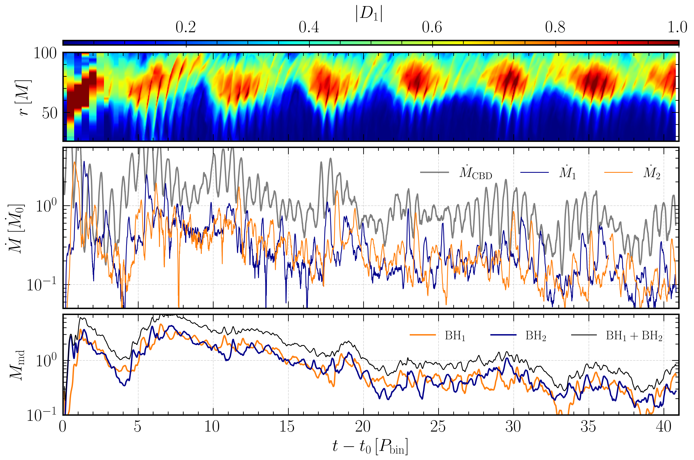
图注：Time variability exhibited by the binary. (Top panel) Spherically-integrated azimuthal $m=1$ density mode as a function of radius and time, (middle panel) accretion rate onto each BH horizon and {into the} circumbinary cavity, and (bottom panel) mass contained inside the truncation radius of mini-disks around each black hole.
对应解读：对应“建议重点查看的图表”第2项，以及“关键图表逐图导读”中图2关于迷你盘质量和吸积率时间序列的解读。
入选理由：这张图直接给出每个黑洞视界吸积率、进入共同空腔的吸积率以及两个迷你盘内质量随时间的变化，是判断跨多个轨道周期调制、两黑洞相位差、偏心共同盘影响和 sloshing 的核心证据，比单个快照更能支撑论文关于持久迷你盘和时变供气的主要结论。
来源与置信度：\(arxiv_source\)；high；\(arxiv_source\) / ms.tex:figure[4]
Fig05
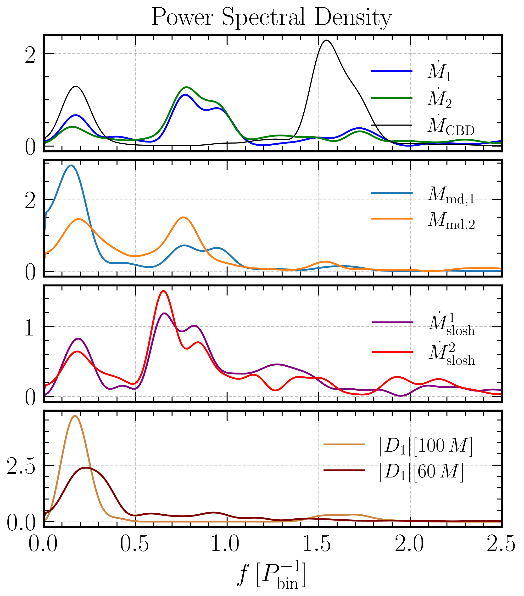
图注：Power spectral densities (PSD) for BH accretion rate, mass in the mini-disk, sloshing mass transfer rate, and the $m=1$ azimuthal mode. These PSD were estimated using Welch’s method after subtracting a cubic polynomial trend from each time series. We adopted Hann-windowed segments of a common physical duration, with 50\% overlap and zero-padding to refine the sampled frequency grid. The spectra were normalized by their integrated power for visualization.
对应解读：对应“建议重点查看的图表”第3项，以及“关键图表逐图导读”中图3关于周期谱或功率谱的解读。
入选理由：该图给出吸积率、迷你盘质量、sloshing 质量转移率和 m=1 密度模的功率谱，正好用于检验调制频率是否与二元轨道、谐波或偏心盘模式相关，也能帮助区分相干周期、宽峰和趋势去除后的谱功率。
来源与置信度：\(arxiv_source\)；high；\(arxiv_source\) / ms.tex:figure[5]
Fig02
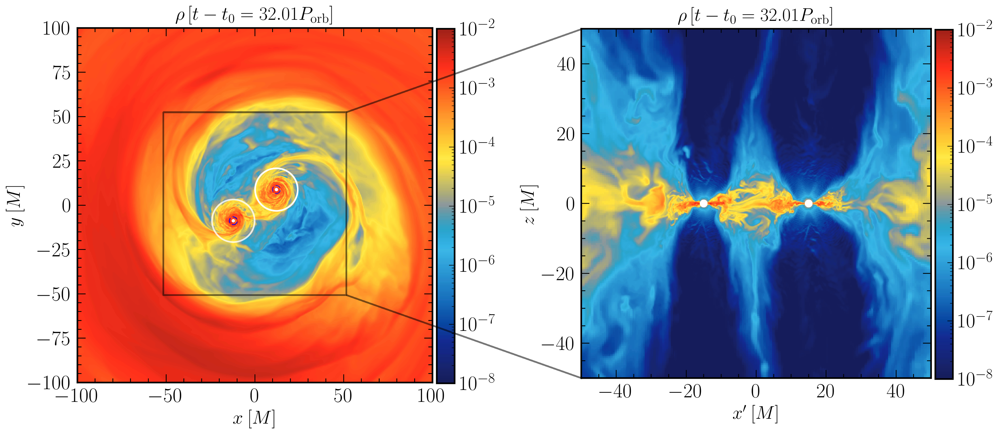
图注：Rest-mass density, $\rho$, of the accretion structure in an equatorial slice (left) and a meridional slice (right) in the corotating frame of the binary. Mini-disks form inside the circumbinary cavity with radii approximately given by the Hill's sphere (white circles). The rapidly spinning black holes power dual Poynting-dominated jets which evacuate funnels.
对应解读：对应“建议重点查看的图表”第1项和第7项，以及“关键图表逐图导读”中图1、图6关于全局密度结构、空腔、迷你盘和喷流漏斗的解读。
入选理由：这张图同时展示赤道面和子午面的静质量密度结构，能看到共同盘空腔、Hill 球尺度内的迷你盘以及由快速自旋黑洞驱动的双 Poynting 主导喷流漏斗，是理解几何构型和后续时间序列诊断的基础图。
来源与置信度：\(arxiv_source\)；high；\(arxiv_source\) / ms.tex:figure[2]
Fig07
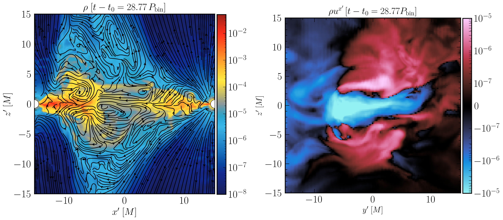
图注：Mass transfer between black holes. (Left) Meridional plot in the corotating frame showing rest-mass density juxtaposed with coordinate transport velocity $(\alpha v^{i'}-\beta^{i'})$ field lines. (Right) Meridional plot orthogonal to the corotating plane showing mass flux density $\rho u^{x'}$ of the gas flowing from one mini-disk to the other.
对应解读：对应“建议重点查看的图表”第2项中关于两个迷你盘之间 sloshing 的部分，以及详细解读中“两个迷你盘之间的气体 sloshing”。
入选理由：该图专门展示黑洞之间的质量转移：左图用密度和输运速度流线显示气体通道，右图用质量通量密度显示从一个迷你盘流向另一个迷你盘的方向和位置，是把时间序列中的反相变化解释为真实空间质量交换的关键补充。
来源与置信度：\(arxiv_source\)；high；\(arxiv_source\) / ms.tex:figure[7]
Fig12
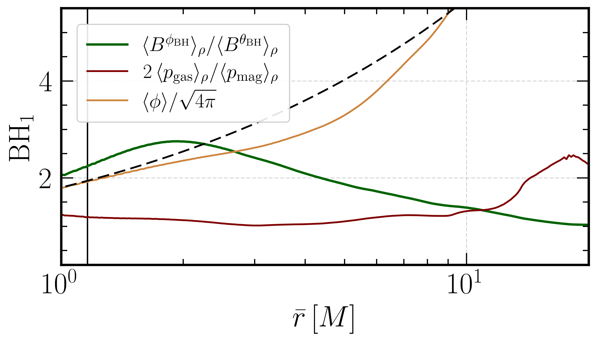
图注：Dimensionless flux ($\phi$), poloidal ($B^{\theta'}$) and toroidal $(B^{\phi'})$ magnetic fields {vs.\ radius} in the frame of BH 1, spherically-averaged over time and density weighted.
对应解读：对应“建议重点查看的图表”第4项中关于视界磁通量和无量纲磁通量的诊断，以及模型比较段落中磁通量输运对喷流功率的作用。
入选理由：虽然候选图中没有直接的视界磁通量时间序列，但 Fig12 给出了 BH1 框架下无量纲磁通量和极向、环向磁场随半径的分布，是候选图里最接近磁通量输运诊断的图，有助于支撑磁场如何进入迷你盘并连接到喷流发射区。
来源与置信度：\(arxiv_source\)；high；\(arxiv_source\) / ms.tex:figure[12]
Fig11
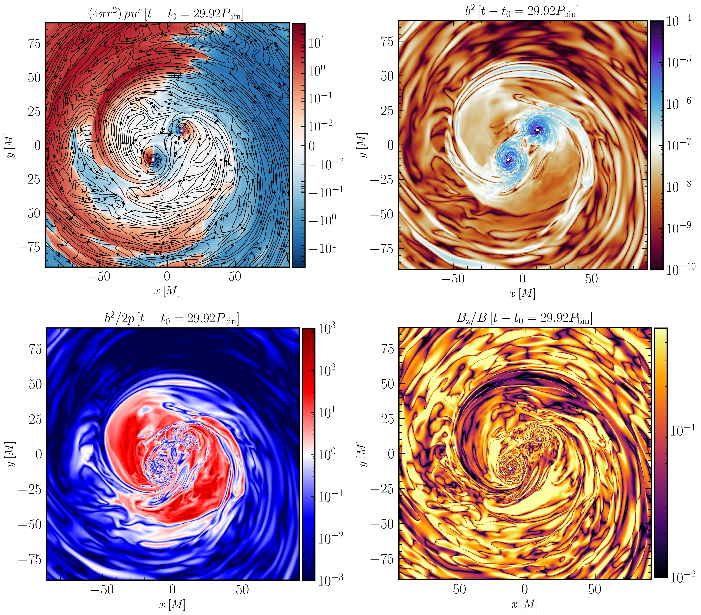
图注：Equatorial snapshot showing mass flux with magnetic field lines (top left), comoving magnetic field energy density (top right), inverse plasma-$\beta$ (bottom left), and normalized vertical field (bottom right).
对应解读：对应“建议重点查看的图表”第4项和第7项中关于磁场结构、磁化区域和喷流/电流片环境的检查。
入选理由：这张赤道面快照同时显示质量通量、磁力线、共动磁能密度、反等离子体 beta 和归一化垂直磁场，能直观看到磁场在空腔和迷你盘附近的组织方式，比纯径向平均图更适合说明磁输运和局部磁化结构。
来源与置信度：\(arxiv_source\)；high；\(arxiv_source\) / ms.tex:figure[11]
强相关工作
这篇工作属于磁化超大质量双黑洞吸积和电磁对应体模拟的同类研究，而不是某个已命名事件或单一观测源的后续论文。应把它放在三条文献线索中读：第一是 circumbinary disk 和迷你盘如何产生周期性吸积；第二是 GRMHD 中黑洞喷流和 Blandford--Znajek 能量抽取；第三是 PTA、LISA 与时域 AGN 候选源的多信使连接。检索关键词可用“supermassive binary black hole GRMHD accretion mini-disks jets”、“circumbinary disk eccentric cavity accretion variability”、“Blandford Znajek binary black hole jets”。
与相似工作相比，本文的突出点是较大分离 \(a=30\,r_g\)、高自旋 \(\chi=0.9\)、磁化共同盘到视界磁通量输运，以及对空腔冷却效率的比较。与一些强调稳定周期信号的模型相比，它给出更复杂也更现实的图像：周期性可被热迷你盘削弱，喷流可在两个黑洞间交替点亮，电流片可能成为额外高能辐射位置。相反观点或张力主要来自观测端：许多周期 AGN 候选可由随机红噪声或单黑洞盘不稳定解释，因此本文结果应被用于构建更严格的多诊断判据，而不是降低识别门槛。
同一事件 / 同类源线索：
相似工作：
（未提供）
基础理论 / 方法工作：
- https://ui.adsabs.harvard.edu/abs/1977MNRAS.179..433B/abstract
- https://ui.adsabs.harvard.edu/abs/1973A%26A....24..337S/abstract
相反观点 / 张力线索：
（未提供）
7. SN1987A constraints on the neutrino-dark-fermion interaction from resonant scattering with C$ν$B
- 来源：arXiv / astro-ph.HE
- 链接：https://arxiv.org/abs/2609.01716v1
- 作者：Christina Gao, Ke Hu, Kun-Feng Lyu, Vincent Zou
- 评分：novelty 7/10，importance 8/10，relevance 8/10，final 8.70/10
- 推荐理由：利用SN1987A超新星中微子约束中微子-暗扇区相互作用，并讨论未来高统计量爆发；有明确天体源和多信使/超新星中微子背景，虽偏粒子物理但对高能天体物理相关。
中文题目：用 SN1987A 中微子检验中微子—暗费米子相互作用：与宇宙中微子背景的共振散射约束
做了什么：这篇文章研究一种轻标量介导的新相互作用：超新星中微子在从大麦哲伦云传播到地球的途中，可与宇宙中微子背景发生共振湮灭，转化为不可见的暗部门费米子辐射，从而在探测到的 SN1987A 中微子能谱和总事例数中留下“能量选择性亏损”。作者把这种传播效应放进贝叶斯分析，分别使用参数化超新星发射模型和二维流体模拟发射模型，并比较质量无关耦合与质量正比耦合两类结构。核心结论是：SN1987A 对这类新物理的限制不能脱离重味中微子发射、味转换和耦合结构单独引用；未来 Hyper-Kamiokande 若记录到高统计量银河系超新星爆发，则有望在包含味转换后重新给出有意义的上限。
为什么重要：SN1987A 是目前唯一有真实时间、能量信息的近邻核心坍缩超新星中微子样本，常被用来给新物理设限。但这篇文章强调，所谓“SN1987A 约束”并不是一个可直接搬用的数字：传播中的共振吸收、源端重味中微子光度、平均能量、味转换方案和新相互作用的味/质量结构会强烈纠缠。它的重要性在于把这些天体物理不确定性和粒子物理参数放进同一个统计框架，而不是只用一个固定超新星谱给出看似很强的排除区。
理论 / 观测 / 仪器方法价值：对理论模型而言，本文给出了轻标量中微子自相互作用与暗部门费米子耦合在 SN1987A 数据下的可检验方式，并显示模型依赖性有多强。对观测分析而言，它提醒人们必须同时拟合源端发射、味转换和传播吸收，不能把中微子亏损简单解释为新物理。对未来仪器而言，Hyper-Kamiokande 的高统计量爆发样本可把目前 SN1987A 的低统计限制提升为真正能区分能谱形变的检验。
为什么应该关注：如果你关心宇宙学张力、轻介子中微子自相互作用、暗辐射或超新星中微子物理，这篇文章值得看，因为它讨论的是一个常被低估的问题：天体物理源模型的不确定性会不会吞掉粒子物理信号。结论不是简单地“排除某个耦合”，而是告诉你在哪些假设下 SN1987A 还能提供约束，在哪些假设下约束会被味转换和重味发射退化关系显著削弱。
展开详细解读：文章讲解、背景、理论、重点章节、图表与相关工作
文章详细讲解
科学问题：本文关注的是轻标量介导的中微子新相互作用，尤其是当该标量还耦合到一个轻暗部门费米子时，超新星中微子可能在传播途中与宇宙中微子背景发生共振过程。物理图像是：来自 SN1987A 的几十 \,\(\mathrm{MeV}\) 中微子穿过约 \,50\,\(\mathrm{kpc}\) 的宇宙中微子背景浴，如果中间态标量质量合适，某些能量的中微子会被选择性吸收并转化为不可见暗辐射。这样到达地球的电子反中微子谱不再只是源端发射与味转换的结果，而还带有传播中的能谱凹陷。
作者怎么做：文章把这一传播亏损写入 SN1987A 事例分析。数据端主要依赖当年水切伦科和闪烁体探测器记录到的低统计中微子事例；理论端则比较两套超新星发射描述：一套是可调的参数化发射模型，另一套是更接近数值天体物理的二维流体模拟模型。新物理端则比较两种耦合结构：一种是不同中微子质量态或味态耦合近似相同的质量无关结构，另一种是耦合强度随中微子质量增大的质量正比结构。作者用贝叶斯框架同时处理超新星发射参数、探测响应、味转换和新物理参数。
关键结果：论文最重要的结论是负面的、但很有价值：不能把 SN1987A 对中微子—标量耦合的限制写成一个不依赖超新星模型的普适上限。重味中微子的源端发射越热、越亮，味转换后进入 \,\bar\nu_e\, 通道的贡献就越重要；而传播吸收造成的亏损可与源端光度、平均能量或味混合方案发生退化。质量无关耦合与质量正比耦合对不同质量本征态的吸收权重不同，因此同一份 SN1987A 数据给出的排除区也会改变。
局限和下一步：SN1987A 的根本限制是统计量太低、探测器能量阈值和时间覆盖有限，且当年各实验的能量刻度、背景和有效面积都远不如现代探测器。文章因此不把结果包装成单一强约束，而是进一步做未来预报：如果银河系内超新星被 Hyper-Kamiokande 记录到，事例数将增加到足以分辨能谱中的共振亏损结构，即使考虑味转换，也能恢复有意义的耦合上限。下一步的关键是把更完整的三维超新星模拟、地球物质效应、多探测器联合响应和中微子质量排序纳入统一后验分析。
关键结果是怎么做出来的
本文的证据链从 SN1987A 的真实事例开始。SN1987A 中微子样本只有约二十多个候选事例，主要来自 Kamiokande-II、IMB 和 Baksan，能量集中在十几到数十 \,\mathrm{MeV}\, 区间。这样的样本无法直接画出高精度能谱凹陷，因此作者不是寻找单个显著缺口，而是计算在给定超新星发射模型、味转换模型和新物理传播模型下，探测器应看到的能量—时间事例分布，再与观测样本做贝叶斯比较。
样本选择和模型设置的关键在于：源端 \,\bar\nu_e\, 与重味 \,\nu_x\, 的发射不是固定背景项，而是约束的一部分。参数化模型允许光度、平均能量或谱形在一定范围内变化；二维流体模拟模型则给出更物理化的时间演化和味依赖发射。由于探测到的主要反应是反贝塔衰变，最终观测量主要是味转换后的 \,\bar\nu_e\, 通量，因此重味发射经过 MSW 或集体效应混入 \,\bar\nu_e\, 后，会直接影响对吸收亏损的解释。
统计上，作者采用贝叶斯框架而不是简单的单参数 \,\chi^2\, 扫描。对每个新物理参数点，需要边缘化超新星发射参数和可能的味转换设定，并比较有无共振吸收时的后验权重或可信区间。由于 SN1987A 事例数低，泊松计数涨落本身就很大，某些能量区间少几个事例并不能自动解释为传播吸收；只有当亏损结构在多个探测器响应折叠后仍与数据不相容，才会形成上限。
最能支撑结论的图表应是参数空间排除区、不同发射模型下的后验分布，以及包含/不包含味转换时对耦合上限的比较。文章结论强调，若固定重味发射或忽略味转换，约束可能显得更强；一旦允许这些天体物理自由度，排除区会移动、变宽，甚至在某些耦合结构下失去简单上限解释。质量正比耦合尤其会把吸收集中到较重质量态，从而使结果更依赖质量排序和味投影。
系统误差方面，最重要的是探测器能量响应和阈值、SN1987A 距离、源端总能量分配、谱形假设、味转换概率和宇宙中微子背景中目标中微子的质量与速度分布。稳健性检验应围绕两套发射模型、两种耦合结构、不同味转换设定和未来 Hyper-Kamiokande 统计预报展开。本文的强项不是从 SN1987A 中挤出最强数字，而是证明哪些数字在模型改变后不稳健。
展开背景、理论、公式、模型、章节和图表导读
背景知识
研究对象是 SN1987A 的超新星中微子。1987 年大麦哲伦云中的蓝超巨星爆发，几台地下探测器在数十秒内记录到约二十多个中微子候选事例。这些事例验证了核心坍缩超新星通过中微子释放引力束缚能的基本图像，也成为许多粒子物理约束的基准数据，包括中微子质量、寿命、磁矩、额外冷却道和新相互作用。
历史问题在于，SN1987A 数据既宝贵又贫瘠。宝贵是因为它是唯一一次直接探测到的近邻超新星中微子爆发；贫瘠是因为事例数太少，探测器能量阈值和背景处理也带有年代限制。很多新物理研究把源端中微子谱设成一个固定热谱，然后看新相互作用是否会过度削弱通量。这样的做法直观，但容易把源模型不确定性低估成粒子物理排除能力。
本文涉及的宇宙中微子背景是标准宇宙学中的遗留热背景，温度约为 \,1.95\,\mathrm{K}\,，数密度很高但单个中微子能量极低。通常它很难直接探测，因为低能中微子反应截面极小。但如果高能或中能天体中微子与背景中微子通过轻媒介发生共振，极小的普通弱相互作用截面可以被新物理共振放大，传播距离又足够长，就可能形成可观测的吸收特征。
为什么现在值得重新看？一方面，中微子自相互作用和暗辐射模型常被用来讨论早期宇宙中的 \,H_0\, 张力、有效相对论自由度以及小尺度结构问题；另一方面，下一代超新星中微子探测器会提供比 SN1987A 高几个数量级的统计量。旧数据可以告诉我们现有说法有多稳健，新探测器预报则能说明未来应如何设计对新物理敏感的分析。
常见误区有三类。第一，把 SN1987A 约束理解为与超新星模型无关的硬边界；实际上源端重味中微子的温度和光度会改变味转换后的观测谱。第二，把通量整体变暗等同于新物理吸收；实际上距离、总释放能和谱形都能造成类似效果。第三，把味本征态和质量本征态耦合混为一谈；共振传播发生在质量、能量和耦合投影共同决定的通道中，质量无关耦合与质量正比耦合会给出不同物理图像。
基础理论 / 方法脉络
基础物理图像从核心坍缩开始。铁核坍缩形成热而致密的原中子星，绝大部分引力束缚能以所有味道的中微子释放。探测器主要通过反贝塔衰变探测 \,\bar\nu_e\,，但源端发射并不只有 \,\bar\nu_e\,；重味 \,\nu_x\, 通常只通过中性流耦合，能谱和时间演化可能不同。传播中的味转换会把源端不同味的成分重新组合成地球处的 \,\bar\nu_e\, 通量。
新物理部分是假设存在一个轻标量 \,\phi\,，它与中微子和暗费米子 \,\chi\, 耦合。超新星中微子 \,\nu\, 与宇宙中微子背景中的低动量 \,\nu\, 或 \,\bar\nu\, 相遇时，如果质心能量接近 \,m_\phi\,，可以通过 \,s\, 道共振产生 \,\phi\,，随后衰变到不可见暗部门。对地球探测而言，这相当于某一入射能量附近的中微子被吸收。
关键量包括标量质量 \,m_\phi\,、中微子质量 \,m_i\,、超新星中微子能量 \,E\,、耦合常数 \,g_\nu\, 与 \,g_\chi\,、传播光学深度 \,\tau(E)\, 以及味转换概率 \,P_{\alpha i}\, 或 \,\(\bar\) P_{ee}\,。共振能量近似由 \,m_\phi^2\, 与背景中微子质量决定，因此不同质量本征态可能在不同观测能量处产生吸收。
观测方法上，理论通量必须先从源端传播到地球，再乘以探测器反应截面、有效靶数、能量分辨率和效率，得到每个探测器的期望事例分布。SN1987A 的低统计使得分析必须使用泊松似然或非齐次泊松点过程，而不是只比较平均能量。未来 Hyper-Kamiokande 的优势在于事例数巨大，能把吸收造成的谱形畸变与整体归一化不确定性区分开。
主要退化关系来自三方面。第一，源端总光度与传播吸收都会改变总事例数；第二，源端平均能量和吸收凹陷都会改变高能尾；第三，味转换能改变 \,\bar\nu_e\, 中重味成分的比例，从而改变新物理吸收的投影权重。系统误差还包括能量刻度、阈值、背景事例、超新星距离和宇宙中微子背景的速度分布。
公式与推导
第一步是写出源端到地球的无新物理通量。若某味中微子在源端总释放能为 \,E_{\mathrm{tot},\alpha}\,，归一化谱为 \,f_\alpha(E')\,，超新星距离为 \,D\,，则地球处未振荡通量近似为
其中 \,\(\langle\) E_\alpha\rangle\, 是平均能量，\,f_\alpha(E)\, 满足 \,\(\int\) f_\alpha(E)\,dE=1\,。这一步说明源端光度和距离首先决定总归一化。
第二步加入味转换。对地球处电子反中微子，常用写法是
其中 \,\(\bar\) P_{ee}\, 是 \,\bar\nu_e\, 存活概率，\,\Phi^0_x(E)\, 表示源端重味反中微子通量。这个式子直接展示为什么重味发射会影响 SN1987A 新物理约束。
第三步写共振条件。若背景中微子近似非相对论，质量为 \,m_i\,，入射超新星中微子能量为 \,E\,，质心能量满足
这里 \,s\, 是 Mandelstam 变量，\,E_{\mathrm{res},i}\, 是第 \,i\, 个质量本征态的共振能量。它把标量质量映射为可观测能谱中的吸收位置。
第四步是共振截面。对 \,\nu_i\bar\nu_i\to\phi\to\chi\bar\chi\,，Breit-Wigner 型截面可写成
其中 \,k\, 是质心系入射动量，\,\Gamma_\phi\, 是总宽度。分子给出产生和不可见衰变两个通道的权重，分母控制共振峰宽度。
第五步把截面积分成传播光学深度。若宇宙中微子背景数密度为 \,n_{\nu,i}\,，传播距离为 \,L\,，则
对 SN1987A 的 \,L\simeq 50\,\mathrm{kpc}\,，红移效应可忽略，但背景速度分布和质量态组成仍会影响线形。
第六步给出吸收后的质量本征态通量：
当 \,\(\tau_i(E)\ll\) 1\, 时亏损近似为 \,\(\Delta\Phi_i/\Phi_i\simeq\) \tau_i(E)\,；当 \,\(\tau_i(E)\gtrsim\) 1\, 时，对应能区会被强烈压低。
第七步把通量折叠成探测器期望事例数。对反贝塔衰变，探测器 \,d\, 的可见能量分布可写为
其中 \,N_{p,d}\, 是自由质子数，\,\sigma_{\mathrm{IBD}}(E)\, 是反贝塔截面，\,\epsilon_d\, 是效率，\,R_d\, 是能量响应矩阵。
第八步是低统计似然。若探测器 \,d\, 记录到 \,N_d\, 个事例，观测能量为 \,E_j\,，背景率为 \,b_d(E)\,，非齐次泊松似然可写为
总似然为各探测器乘积。贝叶斯后验则是
其中 \,\theta\, 包括超新星发射参数、味转换参数和新物理参数。本文的结论正是来自对这些参数边缘化后得到的可信区间，而不是固定源模型下的单点排除。
模型拟合 / 应用方法
本文或同类分析的拟合量包括源端中微子总能量、平均能量、谱形参数、不同味之间的能量分配、味转换概率，以及新相互作用参数，如标量质量 \,m_\phi\,、中微子耦合 \,g_\nu\,、暗费米子耦合 \,g_\chi\, 或控制有效吸收强度的组合参数。若采用质量正比耦合，还需要把耦合投影到质量本征态，并考虑中微子质量排序和绝对质量尺度。
似然通常应建立在每个探测器的事例能量和总计数上。由于 SN1987A 不是高统计谱测量，使用分箱 \,\chi^2\, 容易丢失信息或产生不稳定结果；更合适的是泊松点过程似然，外加探测器效率、阈值和背景项。贝叶斯先验会影响结果，尤其是在源端光度和平均能量允许范围较宽时，因此读者应关注作者是否报告了先验选择和边缘化方式。
残差诊断不能只看总事例数。共振吸收的特征是能量选择性的凹陷或高能尾削弱，而源端低光度会近似等比例减少所有能区的事例。实际读图时应比较有无吸收模型在各探测器可见能量空间中的预测分布，看模型是否只是通过调低总归一化来适配数据，还是确实产生了 SN1987A 样本允许或排斥的谱形变化。
主要退化关系包括 \,E_{\mathrm{tot}}\, 与 \,\(\exp\)[-\(\tau(E)\)]\, 的归一化退化、\,\(\langle\) E\rangle\, 与吸收位置的谱形退化、\,\(\bar\) P_{ee}\, 与重味通量的味转换退化，以及 \,m_\phi\, 与 \,m_i\, 在共振能量上的映射退化。二维流体模拟模型能减少一部分源端自由度，但也会引入模拟本身的系统差异，例如爆炸能量、前身星结构和多维流体不稳定性的依赖。
模型可能失败的地方也很清楚。如果真实超新星发射与参数化谱族或二维模拟库差异很大，后验会给出看似精确但偏置的粒子物理约束。如果集体振荡、湍流 MSW 效应或地球物质效应处理过于简化，味投影也会偏。未来高统计数据虽然能大幅改善谱形检验，但也会让系统误差成为主导，因此多探测器、多通道联合拟合将比单个水切伦科谱更重要。
重点章节 / 结果段落怎么读
数据和观测样本部分应先看作者如何整理 SN1987A 事例，包括采用哪些实验、能量阈值、背景处理、时间窗口和能量响应。这里决定了似然的基础，不应只看最终排除图。尤其要注意是否把不同探测器的效率和能量分辨率分别处理，而不是合并成一个理想化数据集。
超新星发射模型部分是全文的关键之一。读者应比较参数化模型与二维流体模拟模型各自允许的 \,\bar\nu_e\, 和 \,\nu_x\, 光度、平均能量和时间演化。若某个约束只在某一发射模型下成立，就不能把它理解为稳健粒子物理结论。
新物理与传播部分应关注共振能量、光学深度和耦合结构。质量无关耦合与质量正比耦合不仅改变截面归一化，也改变各质量本征态对最终 \,\bar\nu_e\, 通量的贡献。这里是理解为什么不同耦合假设给出不同 SN1987A 限制的核心。
统计推断部分要看贝叶斯参数空间、先验、边缘化和模型比较。对低统计 SN1987A 样本，可信区间通常比最大似然点更有意义。读者应检查作者是否把超新星参数和新物理参数联合拟合，而不是先固定源模型再扫耦合。
结果和未来预报部分应分开读。SN1987A 当前约束展示的是模型依赖性和退化关系；Hyper-Kamiokande 预报展示的是高统计下能否恢复排除能力。不要把未来预报的灵敏度误读为 SN1987A 已经达到的限制。
建议重点查看的图表
-
SN1987A 事例能量分布与模型预测图：看观测点、背景、无新物理谱和含吸收谱在可见能量空间的差异，尤其是低统计下误差条是否覆盖模型差异。
-
共振吸收光学深度或生存概率曲线：看 \,\(\exp\)[-\(\tau(E)\)]\, 随能量的凹陷位置和宽度如何随 \,m_\phi\,、\,g_\nu\,、\,g_\chi\, 改变。
-
参数空间排除区：看横纵轴通常对应 \,m_\phi\, 与耦合强度或有效相互作用强度，比较不同发射模型、不同味转换和不同耦合结构下等可信度轮廓的移动。
-
后验分布或角图：看新物理参数与源端总能量、平均能量、重味发射参数之间的相关性，判断约束是否由先验边界驱动。
-
参数化模型与二维流体模拟模型对比图：看源端谱形和时间演化差异如何传递到地球通量，而不是只看最终数值上限。
-
Hyper-Kamiokande 预报图：看模拟事例数、假设的银河系超新星距离、置信区间收缩程度，以及是否在包含味转换后仍能排除强吸收区。
关键图表逐图导读
图 1：通常应是物理过程或生存概率示意。横轴可能是中微子能量 \,E\,，纵轴是生存概率 \,\(P_{\mathrm{surv}}(E)=\exp\)[-\(\tau(E)\)]\, 或光学深度 \,\tau(E)\,。模型线的凹陷对应共振能量 \,E_{\mathrm{res}}\,。读图陷阱是不要把凹陷深度直接等同于探测器中事例缺口，因为还要折叠源谱、味转换和探测响应。
图 2：应重点查看 SN1987A 数据与预测可见能谱。横轴是可见能量或正电子能量，纵轴是期望事例数或事件率；数据点是各实验记录的候选事例，模型线对应不同发射模型和是否含新物理。主要结论应来自含吸收模型是否显著改变高能尾或某一能区计数。读图陷阱是 SN1987A 统计太低，单个能量点偏离不构成显著证据。
图 3：参数空间限制图最关键。横轴可能是标量质量 \,m_\phi\,，纵轴是耦合 \,g_\nu\, 或有效耦合组合；不同颜色或线型表示参数化发射模型、二维模拟、质量无关耦合、质量正比耦合和不同味转换设定。主要应看排除区是否稳定，而不是只摘取最强曲线。若不同曲线相差很大，说明结论高度模型依赖。
图 4：后验相关图或边缘分布可揭示退化。坐标轴可能是 \,g_\nu\,、\,m_\phi\,、源端 \,E_{\mathrm{tot}}\,、\,\(\langle\) E\rangle\, 和重味参数。若耦合上限与源端光度或平均能量明显相关，说明 SN1987A 数据本身无法独立确定新物理亏损。读图时要注意后验是否贴着先验边界。
图 5：未来 Hyper-Kamiokande 预报图应展示高统计模拟下的排除能力。横轴和纵轴可与图 3 类似，阴影区域表示预期可信区间或灵敏度。主要结论是高事例数能把谱形凹陷从归一化退化中分离出来。读图陷阱是预报依赖假设的超新星距离、真实发射模型和系统误差水平，不能直接当作 guaranteed bound。
论文原图 / 可嵌入图片
Fig04
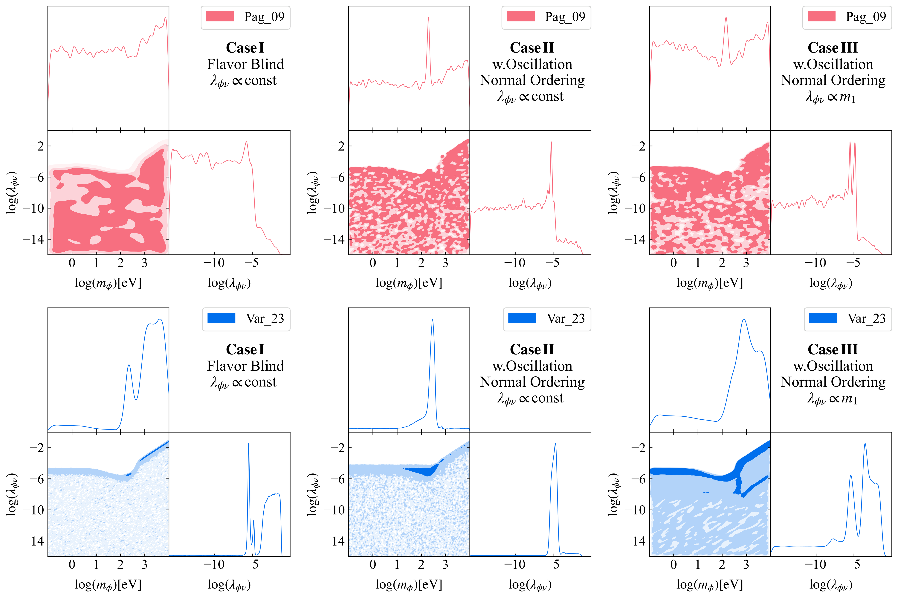
图注：Joint 2D contours and 1D marginalized posteriors for the new-physics parameters $(m_\phi,\lambda_{\phi\nu})$ from the MCMC fits. The top panels use Pagliaroli09~\(\cite{pagliaroli2009improved},\) obtained by fitting all eight parameters, and the bottom panels use Vartanyan23~\(\cite{Vartanyan:2023zlb},\) obtained by stacking the 22 progenitor spectra. The three columns are Case I (flavor blind, left), Case II (oscillation with the mass-independent coupling, middle), and Case III (oscillation with the mass-proportional coupling, right), with $m_1 = 10^{-2}~T_\nu$. Shaded regions correspond to the $68\%$, $95\%$, and $99.7\%$ credible levels, from dark to light.
对应解读：对应“建议重点查看的图表”第3项参数空间排除区，以及“关键图表逐图导读”图3/图4关于新物理参数后验与可信区间的讨论。
入选理由：这是全文最核心的贝叶斯结果图，直接给出新物理参数(\(m_phi,\) \(lambda_phi_nu\))的二维轮廓和一维边缘后验，并同时比较Pagliaroli09参数化模型、Vartanyan23二维模拟、flavor blind、含振荡质量无关耦合和质量正比耦合三种情形。它最能支撑日报中“SN1987A约束强烈依赖发射模型、味转换和耦合结构”的核心结论。
来源与置信度：\(arxiv_source\)；high；\(arxiv_source\) / arxiv.tex:figure[4]
Fig05
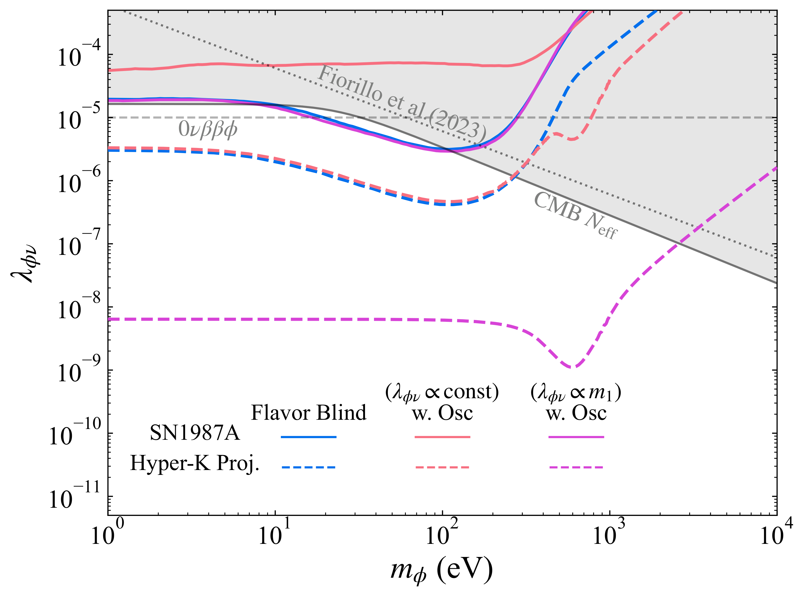
图注：Constraints on $\lambda_{\phi\nu}$ as a function of $m_\phi$ for the Vartanyan23 SN model. The solid colored curves show the $2\sigma$ upper limits derived from the SN1987A data, while the dashed colored curves show the projected Hyper-Kamiokande sensitivity assuming ${\sim}2000$ events and the $M=15.01\,M_\odot$ spectrum. The colors correspond to the three scenarios: flavor-blind couplings (blue), flavor oscillations with mass-independent couplings (red), and flavor oscillations with mass-proportional couplings (magenta). For the last scenario, the constraint is shown in terms of $\lambda_{\phi\nu}(m_1)$. The gray curves indicate existing constraints from the cosmological bound $\Delta N_{\rm eff}<0.285$ (solid)~\(\cite{Li:2023puz},\) searches for Majoron-emitting neutrinoless double-beta decay, $0\nu\beta\beta\phi$ (dashed)~\(\cite{KamLAND-Zen:2012uen},\) and the nonobservation of ${\sim}100\,$MeV neutrino events from SN1987A (dotted)~\(\cite{Fiorillo:2022cdq}.\) Normal mass ordering is assumed with $m_1=10^{-2}T_\nu$.
对应解读：对应“建议重点查看的图表”第3项参数空间排除区和第6项Hyper-Kamiokande预报图，以及“关键图表逐图导读”图5。
入选理由：该图把SN1987A当前2σ上限、Hyper-Kamiokande约2000事例预期灵敏度以及已有宇宙学和0νββφ等外部约束放在同一m_phi-lambda_phi_nu平面中，是展示当前低统计限制与未来高统计改进的最佳图。
来源与置信度：\(arxiv_source\)；high；\(arxiv_source\) / arxiv.tex:figure[5]
Fig03
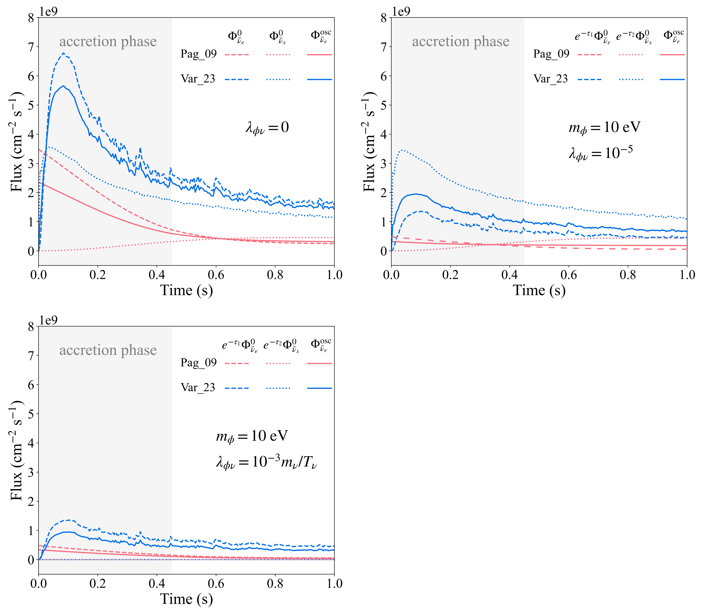
图注：Antineutrino fluxes on Earth versus time, for Pagliaroli09 (red) and Vartanyan23 (blue). Panel (a) is for $\lambda_{\phi\nu}=0$ without scattering. Panels (b) and (c) include scattering off the C$\nu$B at $m_\phi=10\,$eV, for the mass-independent coupling $\lambda_{\phi\nu}=10^{-5}$ in (b) and the mass-proportional coupling $\lambda_{\phi\nu}=10^{-3}\,m_\nu/T_\nu$ in (c). The dashed (dotted) lines show the electron (heavy-flavor) antineutrino fluxes. The solid lines show the detected flux after taking into account of oscillation $\Phi_{\bar\nu_e}^{\rm osc}$ (Eq.~\eqref{eq:mixing_flux_detector}). Pagliaroli09 is evaluated with the parameter set $R_c = 10\rm~km$, $T_c = 4.5\rm ~MeV$, $\tau_c = 4.5\rm~s$, $M_a =0.1M_\odot$, $T_a = 2 \rm~MeV$, and $\tau_a = 0.5\rm~s$, and Vartanyan23 with the $M=15.01\,M_\odot$ spectrum. The gray band marks the accretion phase, cut at $\tau_a=0.45\,$s. Here we asuume normal mass ordering and set the lightest neutrino mass $m_1 = 10^{-2}~T_\nu$. The PMNS mixing parameters and mass-squared differences are fixed to the best-fit values from the latest global analysis (including SK atmospheric data)~\(\cite{Esteban:2024eli}\): $|U_{e1}|^2 = 0.677$, $|U_{e2}|^2 = 0.301$, $|U_{e3}|^2 = 0.022$, $\Delta m_{21}^2 = 7.49 \times 10^{-5}\text{ eV}^2$, and $\Delta m_{31}^2 = 2.513 \times 10^{-3}\text{ eV}^2$.
对应解读：对应“建议重点查看的图表”第5项参数化模型与二维流体模拟模型对比图，以及模型拟合段落中源端谱形、味转换和吸收退化的讨论。
入选理由：该图直接比较Pagliaroli09和Vartanyan23在无散射、质量无关散射、质量正比散射下的地球反中微子通量随时间变化，并区分电子味、重味和振荡后探测通量。它能说明不同超新星发射模型和味转换如何改变到达地球的信号，是理解模型依赖性的关键辅助图。
来源与置信度：\(arxiv_source\)；high；\(arxiv_source\) / arxiv.tex:figure[3]
Fig02
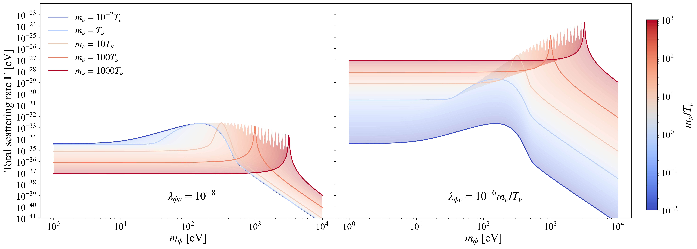
图注：Scattering rate $\Gamma$ (Eq.~\eqref{eq:scattering_rate}) as a function of $m_\phi$, at fixed SN-neutrino energy $E_\nu=30\,$MeV and dark coupling $\lambda_{\phi\chi}=1$. The curves span relic neutrino masses from relativistic, $m_\nu=10^{-2}T_\nu$ in blue, to non-relativistic, $m_\nu=10^{3}T_\nu$ in red, as indicated by the color bar. The two panels correspond to the coupling structures of Eq.~\(\eqref{eq:coupling_structures}.\) The left panel uses the mass-independent coupling $\lambda_{\phi\nu}=10^{-8}$. The right panel uses the mass-proportional coupling $\lambda_{\phi\nu}=10^{-6}\,m_\nu/T_\nu$, for which the rate is enhanced by $(m_\nu/T_\nu)^2$ so that the ordering of the curves inverts and the heaviest relics dominate.
对应解读：对应“建议重点查看的图表”第2项共振吸收光学深度或生存概率曲线的近邻诊断量，以及“关键图表逐图导读”图1中共振位置随m_phi和耦合结构变化的讨论。
入选理由：候选图中没有直接的生存概率exp[-tau(E)]曲线，但Fig02给出散射率Gamma随m_phi的变化，并比较不同遗迹中微子质量和两种耦合结构。它最接近展示共振吸收物理尺度、质量依赖和耦合结构差异的诊断图。
来源与置信度：\(arxiv_source\)；high；\(arxiv_source\) / arxiv.tex:figure[2]
Fig07
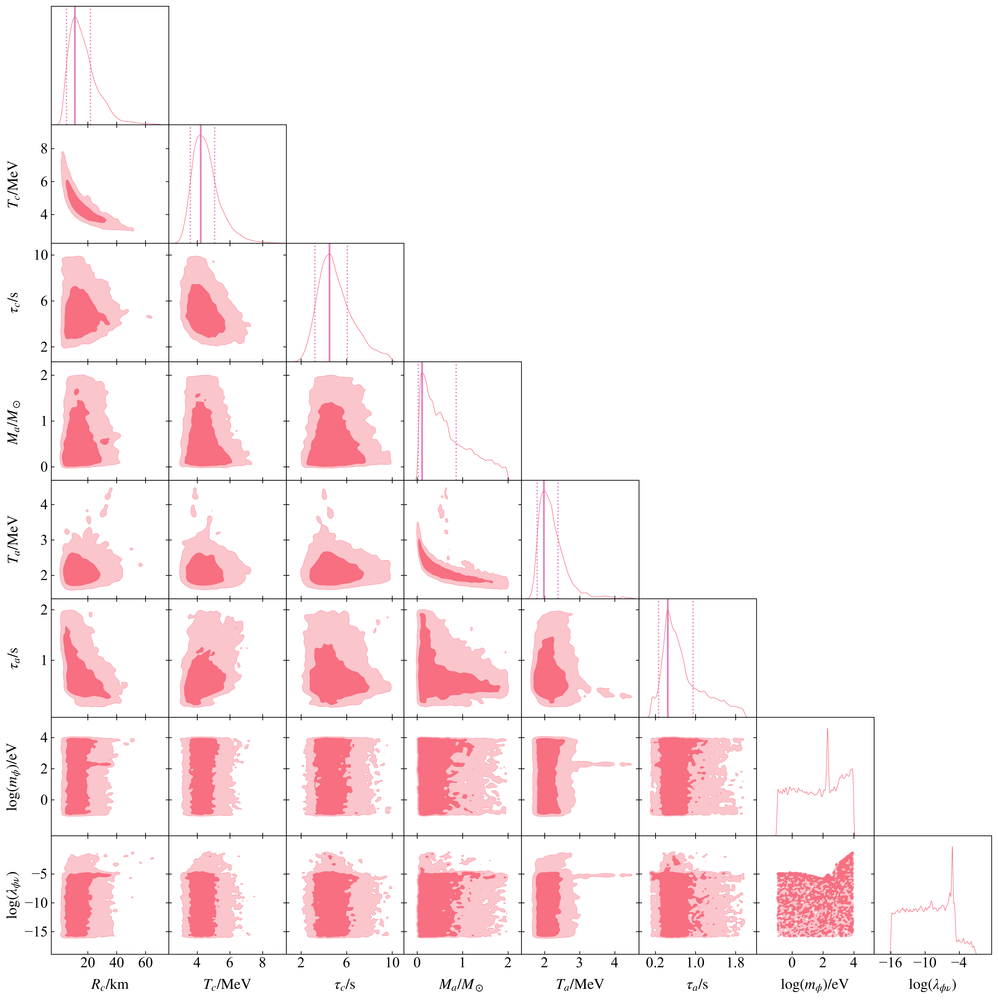
图注：Pagliaroli09: Marginalized posterior distributions and 2D contour plots of constraining 8 parameters simultaneously with current neutrino detections based on Case II.
对应解读：对应“建议重点查看的图表”第4项后验分布或角图，以及模型拟合段落中新物理参数与源端8个参数同时拟合的退化关系。
入选理由：这是Pagliaroli09参数化模型在Case II，即包含味振荡且质量无关耦合下的8参数联合后验角图。相比只含新物理参数的Fig04，它更能检查lambda_phi_nu、m_phi与源端半径、温度、时间尺度等发射参数之间是否存在退化或先验边界驱动。
来源与置信度：\(arxiv_source\)；high；\(arxiv_source\) / arxiv.tex:figure[7]
Fig08
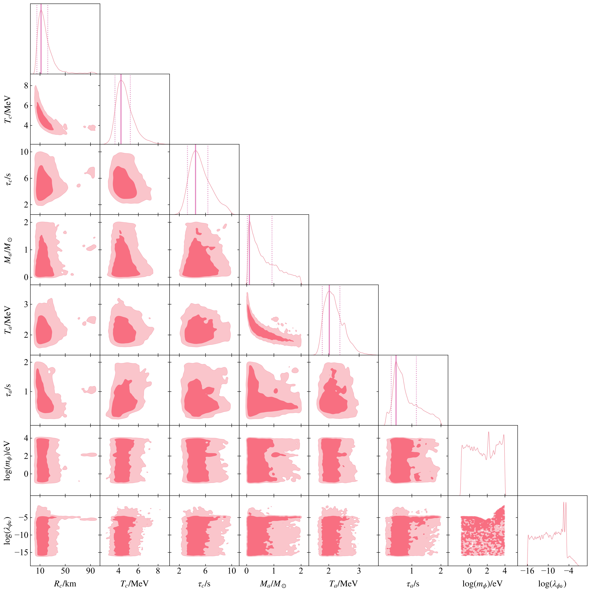
图注：Pagliaroli09: Marginalized posterior distributions and 2D contour plots of constraining 8 parameters simultaneously with current neutrino detections based on Case III.
对应解读：对应“建议重点查看的图表”第4项后验分布或角图，以及质量正比耦合结构下参数退化的模型拟合讨论。
入选理由：该图是Pagliaroli09在Case III质量正比耦合下的8参数联合后验。日报强调质量无关与质量正比耦合会投影到不同质量本征态并改变约束，因此Fig08可与Fig07对照，展示耦合结构改变后源端参数和新物理参数相关性的变化。
来源与置信度：\(arxiv_source\)；high；\(arxiv_source\) / arxiv.tex:figure[8]
强相关工作
同一事件背景方面，SN1987A 的中微子发现论文仍是所有这类研究的基础，包括 Kamiokande-II 和 IMB 的原始探测报告；Baksan 的记录也常被纳入联合分析。检索时应使用关键词 “SN1987A neutrino events Kamiokande II IMB Baksan likelihood spectrum” 和 “SN1987A neutrino new physics constraints”。这些工作提供真实事例、探测器阈值和早期能量估计，是判断本文似然是否合理的上下文。
同类理论方面，本文与轻标量中微子自相互作用、秘密中微子相互作用、宇宙中微子背景共振吸收、暗辐射和宇宙学 \,H_0\, 张力文献相连。相反或有张力的方向包括：宇宙微波背景对强中微子自相互作用的约束、实验室介子衰变和双贝塔衰变对轻标量耦合的限制，以及 IceCube 高能中微子谱中寻找宇宙中微子背景吸收线的研究。建议检索关键词 “secret neutrino interactions light mediator CMB”, “neutrino self-interactions dark radiation”, “cosmic neutrino background resonant absorption”, “supernova neutrino flavor conversion new physics”。
同一事件 / 同类源线索：
- https://arxiv.org/abs/2609.01716
- https://doi.org/10.1103/PhysRevLett.58.1490
- https://doi.org/10.1103/PhysRevLett.58.1494
- https://www-sk.icrr.u-tokyo.ac.jp/en/hk/
相似工作：
（未提供）
基础理论 / 方法工作：
相反观点 / 张力线索：
（未提供）
8. Feeding The Little Monster: An Accreting Intermediate-Mass Black Hole In A Minor Merger Secondary Galaxy
- 来源：arXiv / astro-ph.HE
- 链接：https://arxiv.org/abs/2609.02667v1
- 作者：Marko Mićić, Julia St. Pierre
- 评分：novelty 8/10，importance 8/10，relevance 7/10，final 8.65/10
- 推荐理由：基于6.6 Msec Chandra数据发现次级星系中候选吸积中等质量黑洞，软X射线性质和低星形成率支持IMBH解释；虽不属伽马射线核心，但作为高能X射线黑洞观测发现有较高重要性。
中文题目：喂养“小怪兽”：一次小并合次级星系中的吸积中等质量黑洞
做了什么：这篇论文报告了一个位于红移 \(z=0.216\) 的 \(10:1\) 小并合系统：较小的次级星系质量只有 \(\log(M_\star/M_\odot)=8.24\)，却在深度叠加的 Chandra 数据中显示出一个明亮、极软的 X 射线源。作者利用超过 \(100\) 次偶然覆盖的 Chandra 观测，合计曝光 \(6.6\,\mathrm{Msec}\)，发现该源的光子几乎只出现在 \(<2\,\mathrm{keV}\) 软能段，硬能段没有显著探测。由于计数很低，论文没有做常规自由谱拟合，而是用贝叶斯硬度比和经过 Chandra 响应折叠的物理谱模型模拟来约束源性质。结果显示，数据可由内盘温度 \(kT_{\rm in}=0.18\)--\(0.30\,\mathrm{keV}\)、X 射线光度 \(\log(L_X/\mathrm{erg\,s^{-1}})=40.5\)--\(41.2\) 的热吸积盘解释；若采用标准薄盘标度，对应黑洞质量约为 \(8\times10^2\)--\(5\times10^3\,M_\odot\)，爱丁顿比约为 \(0.2\)--\(0.5\)。作者认为超亮极软源等替代解释受到光度、温度、低变率和宿主低恒星形成率的共同限制，因此这个对象更像是小并合次级星系中正在被触发吸积的中等质量黑洞。
为什么重要：中等质量黑洞是恒星质量黑洞与超大质量黑洞之间最难直接确认的一段质量区间。若这篇论文的解释成立，它把一个 \(10^3\,M_\odot\) 量级候选黑洞放在小并合次级星系内部，并给出正在高效吸积的证据。这直接连接了两个长期问题：矮星系中是否普遍保存黑洞种子，以及小并合是否能触发小星系黑洞快速增长。
理论 / 观测 / 仪器方法价值：本文的方法价值在于处理低计数、极软 Chandra 源时没有简单套用高斯误差谱拟合，而是把硬度比的贝叶斯后验、仪器响应和物理谱模型模拟结合起来。对观测上难以分辨的低质量活动星系核、超亮 X 射线源和核外吸积源，这种做法提供了一个较稳健的判别框架。对理论而言，它为“小并合触发次级星系黑洞增长”的数值预言提供了一个具体观测案例。
为什么应该关注：如果你关心黑洞种子、矮星系活动星系核、小并合驱动的吸积，或者低计数 X 射线源分类，这篇都值得读。它不是凭一个软源就宣称发现中等质量黑洞，而是把位置、宿主质量、光谱软硬、光度、变率、恒星形成率和薄盘标度放在一起做排除式论证。真正值得关注的是：在大型档案数据中，类似“藏在次级星系里的小黑洞”可能不是孤例。
展开详细解读：文章讲解、背景、理论、重点章节、图表与相关工作
文章详细讲解
科学问题：论文要回答的是，在一次质量比约为 \(10:1\) 的小并合中，较小的次级星系是否正在供养一个中等质量黑洞。中等质量黑洞的困难在于，质量太小，常规活动星系核的宽线、窄线诊断和射电核都未必明显；但质量又大于普通恒星级致密天体，使其在高吸积率下可能表现为极软、较高光度的 X 射线源。本文的核心科学问题不是“发现一个软 X 射线源”这么简单，而是这个源的光度、温度、宿主环境是否共同指向 \(10^3\,M_\odot\) 量级吸积黑洞。
作者怎么做：作者从 3D-HST 巡天中识别出一个红移 \(z=0.216\) 的小并合系统，主星系和次级星系质量比约为 \(10:1\)。该天区被 Chandra 偶然覆盖了超过 \(100\) 次，合计曝光达到 \(6.6\,\mathrm{Msec}\)，这使得一个单次观测中很难显著识别的低计数源可以通过合并数据浮现出来。次级星系的恒星质量为 \(\log(M_\star/M_\odot)=8.24\)，X 射线信号只在软能段出现，硬能段没有显著光子，因此常规的多参数谱拟合并不可靠。论文改用贝叶斯硬度比来描述软、硬能段计数的概率分布，并用多种物理谱模型经 Chandra 响应文件折叠后模拟预期计数。
关键结果：最能解释观测计数率和硬度比的是热吸积盘谱，内盘温度为 \(kT_{\rm in}=0.18\)--\(0.30\,\mathrm{keV}\)，X 射线光度为 \(\log(L_X/\mathrm{erg\,s^{-1}})=40.5\)--\(41.2\)。在标准薄盘解释下，较低的盘温和较高光度意味着黑洞质量不能是典型 \(10\,M_\odot\) 恒星级黑洞，也不需要达到普通超大质量黑洞尺度，而落在 \(M_\bullet\approx8\times10^2\)--\(5\times10^3\,M_\odot\)。相应爱丁顿比约 \(0.2\)--\(0.5\)，说明这不是一个微弱、偶然的低态源，而是处于相当有效率的吸积阶段。
局限和下一步：本文的主要局限来自低计数统计、角分辨率下源位置与宿主结构的匹配精度、以及极软超亮 X 射线源这一类替代模型的不确定性。作者认为替代解释不占优，理由包括源光度偏高、温度范围、缺乏显著变率、以及次级星系低恒星形成率不利于产生大量年轻高质量 X 射线双星。但这还不是动力学质量测量，也不是通过宽线或多波段活动星系核特征直接称量黑洞。下一步需要更深的 X 射线观测、更高角分辨率的光学或红外定位、对宿主核区恒星形成和气体电离的测量，以及在其他小并合系统中寻找同类候选体。
关键结果是怎么做出来的
本文最重要的证据链从样本和位置开始。作者先在 3D-HST 数据中确认一个红移为 \(z=0.216\) 的小并合系统，质量比约 \(10:1\)，并把 X 射线源与较小的次级星系对应起来。次级星系的恒星质量为 \(\log(M_\star/M_\odot)=8.24\)，这使它处在矮星系或低质量星系范围内；若其中存在吸积黑洞，对黑洞种子和矮星系核活动研究都很敏感。论文的定位论证应重点看 X 射线源与次级星系光学中心、星系轮廓和并合几何之间的相对位置，而不是只看是否落在整个并合系统附近。
数据层面，关键优势是 Chandra 档案覆盖极深：超过 \(100\) 次观测，总曝光约 \(6.6\,\mathrm{Msec}\)。这类数据的统计性质与一次长曝光不同，因为需要处理不同指向、不同离轴角、不同点扩散函数、背景和有效面积变化。论文的源检测结果显示光子集中在 \(<2\,\mathrm{keV}\) 软能段，硬能段没有显著探测。因此结论不是来自一个高信噪比连续谱，而是来自软带净计数、硬带上限、背景估计和响应折叠模拟之间的一致性。
统计处理上，作者采用贝叶斯硬度比而非简单硬度比点估计。低计数情况下，软带计数 \(S\) 和硬带计数 \(H\) 服从泊松统计，直接用 \((H-S)/(H+S)\) 会给出偏态、非高斯的不确定性，尤其当 \(H\) 接近零时更明显。贝叶斯方法允许把背景计数、源计数和硬度比后验一起传播，再与不同谱模型经 Chandra 响应预测的计数分布比较。读者应重点检查硬度比置信区间是否确实排除了较硬的幂律活动星系核谱和常见 X 射线双星谱。
模型比较的核心是热吸积盘模型能同时匹配两个量：观测到的软带计数率和极低硬带计数。论文给出的可接受参数为 \(kT_{\rm in}=0.18\)--\(0.30\,\mathrm{keV}\)，\(\log(L_X/\mathrm{erg\,s^{-1}})=40.5\)--\(41.2\)。这一温度比许多恒星质量黑洞高态盘温更低，而光度又明显高于典型单个超软源；把二者放进标准薄盘标度，得到 \(M_\bullet\approx8\times10^2\)--\(5\times10^3\,M_\odot\) 和 \(L/L_{\rm Edd}\approx0.2\)--\(0.5\)。支撑这一点的图表应包括硬度比后验图、模型网格在硬度比与计数率平面中的位置、以及温度与光度允许区间。
替代解释方面，作者重点讨论超亮 X 射线极软源。单独从 X 射线光谱看，这类源确实可能混淆；但本文把宿主低恒星形成率、源缺乏显著变率、温度与光度组合、以及位置环境一起纳入判断。稳健性检验应包括背景区域选择、不同观测合并方式、不同吸收柱密度假设、不同谱模型和源检测阈值下结论是否改变。由于摘要没有给出完整显著性数值，读者阅读原文时应特别关注源检测显著性、硬带非探测上限的置信度、以及模型被“disfavored”的定量标准。
展开背景、理论、公式、模型、章节和图表导读
背景知识
中等质量黑洞通常指质量介于恒星质量黑洞和超大质量黑洞之间的黑洞，大致在 \(10^2\)--\(10^5\,M_\odot\) 范围内。它们重要，是因为今天星系中心的 \(10^6\)--\(10^{10}\,M_\odot\) 超大质量黑洞不可能凭空出现，早期宇宙必须有某种种子。种子可能来自第一代恒星坍缩、致密星团中的 runaway 碰撞、直接坍缩气体云，或小黑洞在矮星系中逐渐增长。中等质量黑洞正是这些路径在低红移宇宙中可能留下的可观测化石。
观测上，中等质量黑洞非常难确认。动力学测量需要解析其引力影响半径，但对 \(10^3\,M_\odot\) 量级黑洞，即使在很近的星团或矮星系中也极其困难。电磁吸积特征又容易与高光度 X 射线双星、超亮 X 射线源、潮汐瓦解事件或弱活动星系核混淆。因此，可靠候选体通常需要多条证据同时成立：位置接近星系核或致密星团、光度超过普通 X 射线双星范围、谱形与质量标度一致、变率合理、宿主环境不支持大量年轻 X 射线双星污染。
小并合是这篇论文的关键背景。星系并合能通过潮汐扰动驱动气体流入中心，从而触发恒星形成和黑洞吸积。大并合更容易产生明亮活动星系核，因此历史上受到更多关注；但宇宙中小并合更常见，而且低质量次级星系中的黑洞可能在潮汐压缩和气体扰动中短暂获得高吸积率。数值模拟已经预测，次级星系黑洞在小并合中会有间歇式快速增长，尤其当气体没有完全被剥离时。
现在重新看这个问题的原因，是深度多波段巡天和 X 射线档案数据已经足够丰富。3D-HST 提供了星系结构、红移和恒星质量信息；Chandra 的高角分辨率和多年档案曝光能在偶然覆盖区域中积累到百万秒级深度。单次观测看不到的微弱或低计数源，合并后可能被识别出来。这使得研究者可以在非专门设计的观测中寻找小并合次级星系的吸积黑洞迹象。
一个常见误区是把“超软且高光度”直接等同于中等质量黑洞。事实上，核燃烧白矮星、某些超亮 X 射线源的风 photosphere、超爱丁顿吸积盘的再处理辐射都能给出软谱。另一个误区是把星系级位置关联看得过重：在红移 \(z=0.216\) 处，角分辨率对应的物理尺度不小，源是否真正位于次级星系核区需要仔细处理点扩散函数、天体测量和宿主形态。本文的价值就在于它试图把这些混淆因素逐项排除，而不是只依赖单一指标。
基础理论 / 方法脉络
基础物理图像是：吸积黑洞把引力势能转化为辐射。若吸积流可近似为几何薄、光学厚的标准盘，不同半径处的盘面近似黑体辐射，内盘最热，决定 X 射线谱峰位置。黑洞质量越大，在相同爱丁顿比附近，内盘温度越低；因此 \(10^3\,M_\odot\) 黑洞的热盘峰值可落在软 X 射线，而 \(10\,M_\odot\) 黑洞的高态盘通常更热。
本文使用的关键观测量是软带和硬带计数，而不是高信噪比谱线或连续谱细节。Chandra 实际测到的是探测器计数，取决于源本征谱、红移、银河系和宿主吸收、仪器有效面积、能量响应以及背景。对于低计数源，不能简单把计数率乘以一个固定转换因子得到光度，因为不同谱形在软能段的响应差异很大。作者因此把物理谱模型折叠进响应矩阵，再比较模拟计数与观测硬度比。
硬度比的物理意义是源谱软硬的压缩描述。若硬带计数 \(H\) 很低、软带计数 \(S\) 显著，硬度比会偏向极软。对于普通活动星系核，常见幂律光子指数 \(\Gamma\sim1.7\)--\(2.0\)，除非有复杂吸收或特殊软超额，一般不应完全没有硬带光子。对于热盘模型，\(kT_{\rm in}\) 在 \(0.2\,\mathrm{keV}\) 左右时，大量光子集中在软 X 射线，经过红移后仍主要落在 Chandra 软带。
从模型假设看，标准薄盘质量估计依赖若干近似：内盘半径与最内稳定圆轨道相关，辐射效率近似固定，盘面颜色校正和倾角影响观测温度与归一化，吸收柱密度影响软光子数。这些因素会造成质量、爱丁顿比和温度之间的退化。特别是 \(kT_{\rm in}\)、\(N_{\rm H}\)、红移修正和仪器低能校准会共同影响硬度比，因此论文用模型网格而非单点拟合是合理的。
主要系统误差包括背景估计、合并多次观测时的有效曝光、离轴点扩散函数、天体测量配准、吸收柱密度、宿主恒星形成率估计和 X 射线双星族群预测。若源实际是超爱丁顿恒星质量黑洞，其软成分可能来自风或再处理层，而非标准薄盘内缘；这会破坏用薄盘温度直接推质量的前提。因此本文的结论应理解为“在薄盘解释下的中等质量黑洞候选”，并由环境证据增强，而非直接动力学称量。
公式与推导
第一步从爱丁顿极限开始。对质量为 \(M_\bullet\) 的黑洞，辐射压力与引力对电子散射气体平衡时有
这里 \(G\) 是引力常数，\(m_p\) 是质子质量，\(c\) 是光速，\(\sigma_T\) 是 Thomson 截面。这个公式给出由观测光度反推最低质量或爱丁顿比的基本尺度。
第二步定义吸积光度与吸积率的关系：
其中 \(\eta\) 是辐射效率，\(\dot{M}\) 是质量吸积率，\(\lambda_{\rm Edd}\) 是爱丁顿比。本文给出的 \(\lambda_{\rm Edd}\approx0.2\)--\(0.5\) 表明若源为黑洞吸积，它处在相当明亮的热态或高吸积状态。
第三步写出标准薄盘的有效温度分布：
这里 \(R\) 是盘半径，\(R_{\rm in}\) 是内盘半径，\(\sigma\) 是 Stefan-Boltzmann 常数。该式说明越靠近内盘温度越高，而质量越大的黑洞在给定爱丁顿比下特征温度越低。
第四步用薄盘标度把内盘温度与质量、爱丁顿比联系起来：
这里 \(f_{\rm col}\) 表示颜色校正因子，系数只表示常用量级标度。观测到 \(kT_{\rm in}=0.18\)--\(0.30\,\mathrm{keV}\) 时，若 \(\lambda_{\rm Edd}\) 不是极低，质量自然被推向 \(10^3\,M_\odot\) 量级。
第五步把本征谱转换为观测通量。红移为 \(z\) 的源满足
其中 \(D_L\) 是光度距离，\(L_{(1+z)E}\) 是源静止系能谱光度，\(N_{\rm H}\) 是吸收柱密度，\(\sigma_{\rm ph}(E)\) 是光电吸收截面。这个式子说明软 X 射线对吸收和红移修正特别敏感。
第六步把通量折叠进 Chandra 响应得到预期计数：
这里 \(\mu_i\) 是第 \(i\) 个能段的期望计数，\(t_{\rm exp}\) 是曝光时间，\(R_i(E)\) 是能量响应或重分布，\(A_{\rm eff}(E)\) 是有效面积，\(b_i\) 是背景计数。本文的“模型经响应折叠”本质上就是用这个式子从物理谱预测软、硬带计数。
第七步在低计数情况下使用泊松似然：
其中 \(n_i\) 是观测计数。由于硬带可能只有上限，泊松似然比高斯 \(\chi^2\) 更合适，也能自然处理 \(n_i\approx0\) 的情况。
第八步定义硬度比诊断量：
其中 \(S\) 与 \(H\) 分别代表软带和硬带源计数或净计数。若 \(H\ll S\)，则 \(\mathrm{HR}\to-1\)，对应极软源。本文正是利用 \(\mathrm{HR}\) 的贝叶斯后验来约束热盘、幂律和超亮源模型。
第九步用观测能段通量估计 X 射线光度：
这里 \(F_X\) 是观测能段通量，\(K(z,\theta)\) 是依赖红移和谱参数 \(\theta\) 的 \(K\)-校正。本文给出的 \(\log(L_X/\mathrm{erg\,s^{-1}})=40.5\)--\(41.2\) 不是单纯计数换算，而取决于被接受谱模型的 \(K\)-校正和响应转换。
模型拟合 / 应用方法
这类工作的拟合对象不是传统意义上的高信噪比 X 射线谱，而是软带计数、硬带计数或上限、背景计数、总计数率以及由此得到的硬度比后验。本文由于源计数较少，若强行拟合自由的幂律指数、吸收柱密度、热盘温度和归一化，参数会严重不适定。因此作者采用更稳健的做法：为若干物理模型生成参数网格，经 Chandra 响应折叠后比较预期计数与观测计数分布。
贝叶斯硬度比是关键。低计数下，\(S\) 与 \(H\) 的不确定性不对称，硬带非探测不能简单写成 \(H=0\pm1\)。合理做法是把源区和背景区计数都看成泊松变量，对净源强度和硬度比求后验。然后检查热盘模型、幂律模型、超亮极软源模型在后验可信区间中的重叠程度。本文结论中的“disfavored”应理解为在观测硬度比、光度和环境先验下替代模型较不自然，而不是所有替代模型被数学上完全排除。
主要拟合参数包括 \(kT_{\rm in}\)、模型归一化、吸收柱密度 \(N_{\rm H}\)、光度 \(L_X\)、黑洞质量 \(M_\bullet\) 和爱丁顿比 \(\lambda_{\rm Edd}\)。其中 \(M_\bullet\) 与 \(\lambda_{\rm Edd}\) 并非直接观测量，而是通过薄盘标度由温度和光度推导得到。倾角、颜色校正、黑洞自旋和内盘边界条件会改变归一化和温度解释，因此质量区间应看作模型依赖估计。
残差诊断在本文语境下主要体现为模型预测的软、硬带计数是否同时落入观测允许范围。如果一个模型能给出正确软带计数但必然预测过多硬带光子，它会被硬带非探测排斥；如果一个模型足够软但需要不合理高的本征光度或与宿主恒星形成率不符，也会被削弱。读者应查看模型网格是否覆盖足够宽的 \(N_{\rm H}\)、\(kT_{\rm in}\) 和归一化范围，以及背景区域变化是否改变硬带上限。
实际应用中，这种方法适合从深度档案 X 射线数据中筛选中等质量黑洞候选体，尤其是低质量星系、小并合系统和核外或近核软源。但模型也可能失败：若源是超爱丁顿吸积并由强风再处理，观测温度不再对应最内稳定圆轨道；若存在未建模的局部吸收或散射，硬度比会偏移；若源与背景活动星系核投影重合，宿主关联会被误判。因此候选体需要后续多波段确认，而不能仅凭一次硬度比分类定性。
重点章节 / 结果段落怎么读
-
数据和系统识别部分应首先阅读。重点看作者如何从 3D-HST 中确定并合系统、红移 \(z=0.216\)、质量比 \(10:1\)、主次星系分解以及次级星系恒星质量 \(\log(M_\star/M_\odot)=8.24\)。这一部分决定 X 射线源是否真与低质量次级星系相关，而不是与主星系或背景源相关。
-
Chandra 数据处理和源检测部分是结论可靠性的基础。读者应看超过 \(100\) 次观测如何筛选、合并，如何处理曝光图、点扩散函数、离轴角、背景和天体测量配准。合计 \(6.6\,\mathrm{Msec}\) 是优势，但多观测合并也会引入响应和背景非均一性。
-
贝叶斯硬度比与模拟方法部分最值得细读。这里应关注软带、硬带定义，源区和背景区计数如何进入后验，硬带非探测如何转化为上限，以及不同谱模型如何通过 Chandra 响应文件生成可比的计数率和硬度比。
-
物理解释部分要把热盘温度、光度、黑洞质量和爱丁顿比连起来读。作者给出 \(kT_{\rm in}=0.18\)--\(0.30\,\mathrm{keV}\) 和 \(\log(L_X/\mathrm{erg\,s^{-1}})=40.5\)--\(41.2\)，再在标准薄盘框架下推得 \(M_\bullet\approx8\times10^2\)--\(5\times10^3\,M_\odot\)。读者应注意哪些假设进入了这个质量范围。
-
讨论和替代模型部分决定论文说服力。重点看作者如何排除或削弱超亮极软 X 射线源、普通高质量 X 射线双星、背景活动星系核和暂现源解释。尤其要看宿主低恒星形成率、缺乏显著变率和源位置这些非谱学证据是否足够强。
建议重点查看的图表
-
并合系统多波段图像和 X 射线位置叠加图：看 X 射线误差圈是否落在次级星系而非主星系、潮汐结构或背景源上；检查误差圈大小、点扩散函数和天体测量配准。
-
Chandra 合并曝光和源检测图：看软带是否有紧致源，硬带是否没有对应信号；注意背景区域、曝光非均匀性和离轴角导致的点扩散函数展宽。
-
软带与硬带计数表或检测显著性表：检查净计数、背景计数、源检测概率、硬带上限和置信区间，而不仅是最终光度。
-
贝叶斯硬度比后验图：看 \(\mathrm{HR}\) 的可信区间是否接近极软端，是否与普通幂律谱预测明显分离。
-
模型网格与观测约束图：检查热盘模型、幂律模型、超亮源模型在硬度比和计数率平面中的位置，确认 \(kT_{\rm in}=0.18\)--\(0.30\,\mathrm{keV}\) 区间如何得到。
-
温度、光度、黑洞质量和爱丁顿比关系图：看允许区间是否确实落在 \(10^3\,M_\odot\) 量级，而不是由某个强先验或窄模型选择强行推出。
-
变率或逐观测计数率诊断图：检查超过 \(100\) 次观测中是否存在单次爆发主导总信号；缺乏显著变率是作者反对某些超亮源解释的重要依据。
-
宿主星系性质表：看次级星系恒星质量、恒星形成率、红移和结构参数，因为这些量决定 X 射线双星背景和小并合触发解释是否可信。
关键图表逐图导读
图 1：通常应是 3D-HST 或 HST 近红外图像叠加 Chandra X 射线位置。横纵轴多为天球坐标或相对角秒，图中应标出主星系、次级星系、X 射线位置和误差圈。主要结论是 X 射线源与低质量次级星系关联。读图陷阱是不要只看视觉重合，要检查误差圈大小、主次星系分离、天体测量系统误差和红移一致性。
图 2：可能展示软带、硬带和全带的 Chandra 合并图像。坐标轴仍是天空位置，颜色或等值线代表计数或曝光校正后的计数率。关键是软带出现源而硬带不出现对应源。读图时要注意软带背景是否平滑、硬带非探测是否受曝光不足影响，以及源是否位于点扩散函数异常区域。
图 3：硬度比后验或软、硬计数概率分布图。横轴可能是 \(\mathrm{HR}\)，纵轴是后验概率密度，或二维显示软带和硬带净计数。主要结论是源极软，\(H\) 接近零而 \(S\) 为正。读图陷阱是低计数后验往往偏斜，不能用对称误差条理解；硬带零计数不等于硬带物理通量绝对为零。
图 4：模型比较图可能把观测约束画在硬度比与计数率或光度平面，叠加热盘、幂律和超亮源模型轨迹。横轴可能是 \(\mathrm{HR}\)，纵轴可能是软带计数率或 \(L_X\)。数据点或阴影区代表观测可信区间，模型线代表不同 \(kT_{\rm in}\)、\(\Gamma\) 或 \(N_{\rm H}\)。主要结论是 \(kT_{\rm in}=0.18\)--\(0.30\,\mathrm{keV}\) 的盘模型自然落入允许区。
图 5：温度—光度或质量—爱丁顿比推断图。横轴可能是 \(M_\bullet\) 或 \(kT_{\rm in}\)，纵轴可能是 \(L_X\) 或 \(\lambda_{\rm Edd}\)，并标出本文允许区域。关键读法是检查允许带是否与 \(M_\bullet\approx8\times10^2\)--\(5\times10^3\,M_\odot\) 对应，及颜色校正、倾角、吸收等系统误差是否以阴影或误差带体现。
图 6：若有变率图，横轴应是观测时间或观测编号，纵轴是计数率或通量。主要结论是没有显著短时或长期强变率，避免由一次暂现爆发主导叠加信号。读图陷阱是许多单次观测计数极低，非探测点应作为上限处理，不能把散点噪声误读为真实变率。
论文原图 / 可嵌入图片
（未提供 verified figure；为避免编造图片链接，本节只在能确认官方图片 URL 或成功提取论文原图时嵌入图片。）
强相关工作
这篇工作应放在三类文献中比较。第一类是矮星系活动星系核和中等质量黑洞候选体研究，包括用光学窄线、宽 \(\mathrm{H}\alpha\)、射电核、X 射线核和变率筛选低质量黑洞的工作。检索关键词可用 “intermediate-mass black hole dwarf galaxy X-ray”, “dwarf AGN Chandra”, “low-mass galaxy black hole occupation fraction”。这些研究的共同张力是：光学活动星系核选择会漏掉低金属丰度或低激发源，X 射线选择又会受 X 射线双星污染。
第二类是超亮 X 射线源和极软 X 射线源文献。本文的替代解释主要来自这一方向，因为某些超爱丁顿中子星或恒星质量黑洞系统能产生 \(L_X\gtrsim10^{40}\,\mathrm{erg\,s^{-1}}\) 的软 X 射线辐射。检索关键词可用 “ultraluminous supersoft source”, “ULX supersoft thermal component”, “super-Eddington wind photosphere”。与这些文献相比，本文的特殊点是源位于小并合次级星系、宿主恒星形成率低且缺乏显著变率。
第三类是并合触发黑洞增长的数值模拟和观测。过去大量工作关注大并合和明亮双活动星系核，而较小质量比的小并合在统计上更常见，也更可能揭示黑洞种子的增长路径。检索关键词可用 “minor merger black hole growth secondary galaxy”, “dwarf galaxy black hole accretion merger simulation”, “dual AGN minor merger”。本文可看作这类模拟预言的候选观测支点，但仍需更多同类样本验证其普遍性。
同一事件 / 同类源线索：
相似工作：
基础理论 / 方法工作：
- https://ui.adsabs.harvard.edu/abs/1973A%26A....24..337S/abstract
- https://ui.adsabs.harvard.edu/abs/1973A%26A....24..337N/abstract
- https://arxiv.org/abs/0709.3424
相反观点 / 张力线索：
9. Searching for Gravitational Wave Events Counterparts in X-Rays by Tilting the Multiple Shells of Wolter-I Optics
- 来源：arXiv / astro-ph.HE
- 链接：https://arxiv.org/abs/2609.02254v1
- 作者：John Rankin, Daniele Spiga, Paolo Conconi, Sergio Campana, Giovanni Pareschi, Stefano Basso, Marta Maria Civitani, Vincenzo Cotroneo
- 评分：novelty 8/10，importance 7/10，relevance 8/10，final 8.65/10
- 推荐理由：Instrument-method paper proposing tilted-shell Wolter-I optics to widen X-ray field of view for rapid gravitational-wave counterpart localization; directly useful for high-energy transient and multimessenger mission concepts.
中文题目：Searching for Gravitational Wave Events Counterparts in X-Rays by Tilting the Multiple Shells of Wolter-I Optics
做了什么：本篇论文已通过推荐筛选，但自动详细解读生成失败。可先根据题目和摘要判断阅读优先级：Current X-ray telescopes have a combination of field of view and angular resolution that makes it difficult to quickly localize the electromagnetic counterparts of gravitational wave events --- which will become increasingly important when the LIGO and Virgo experiment will work at full sensitivity or when the Einstein Telescope and the Cosmic Explorer observatories will come online in the next decades. We investigate what X-ray optical designs could provide --- in a small mission --- a field of view wide enough to observe quickly the region of the sky constrained by gravitational wave detectors, and at the same time an angular resolution sufficiently good to localize these sources. We study, using ray tracing simulations, how we can optimize a Wolter-I telescope for this purpose. We find that, by appropriately tilting the shells of a Wolter-I X-ray telescope in different directions, the field of view increases, at the cost of a reduction of the on-axis performance. We draw a possible design made of two identical modules pointing at adjacent regions of the sky.
为什么重要：这篇论文在今日候选中通过了本地推荐阈值，说明它与当前高能天体物理兴趣方向或质量标准较匹配；详细内容建议优先查看原文摘要、结论和图表。
理论 / 观测 / 仪器方法价值：由于 LLM 摘要 JSON 解析失败，本节保留为安全占位，不编造论文未确认的公式、图号或链接。
为什么应该关注：日报仍保留这篇论文，是为了避免单篇摘要失败导致整份日报缺失。请把它作为需要人工快速复核的高优先级候选。
展开详细解读：文章讲解、背景、理论、重点章节、图表与相关工作
文章详细讲解
自动详细解读失败，错误摘要：Anthropic API error 200; \(request_id=None\)
建议先阅读原文 abstract、introduction 和 conclusion，确认其核心问题、数据或模拟方法、主要结论以及与高能天体物理的关联。
关键结果是怎么做出来的
自动重点拆解失败。建议人工核查论文的数据选择、样本或事件数、显著性/似然检验、主图表证据、系统误差和稳健性检验。
展开背景、理论、公式、模型、章节和图表导读
背景知识
本节为占位背景。为了避免幻觉，系统没有在摘要失败后补写未经核实的具体背景；建议结合论文引言中的动机和相关工作继续阅读。
基础理论 / 方法脉络
本节为占位理论说明。建议从论文中识别核心物理量、模型假设、观测量或模拟变量，再决定是否需要展开公式推导。
公式与推导
本节未自动生成可靠公式推导。请以论文正文中的公式为准，避免使用未经核验的自动推导。
模型拟合 / 应用方法
本节未自动生成可靠模型拟合说明。请重点检查论文中的参数、似然/拟合方法、系统误差和残差诊断。
重点章节 / 结果段落怎么读
建议优先阅读 abstract、introduction、methods/model、results、discussion/conclusion，以及所有展示核心结论的图表。
建议重点查看的图表
建议检查论文中展示主要数据、模型比较、参数约束、残差或灵敏度预测的图表。
关键图表逐图导读
自动图表导读未能可靠生成。请以论文图注和正文解释为准，重点看坐标轴、样本选择、模型曲线、置信区间和系统误差。
论文原图 / 可嵌入图片
Fig02
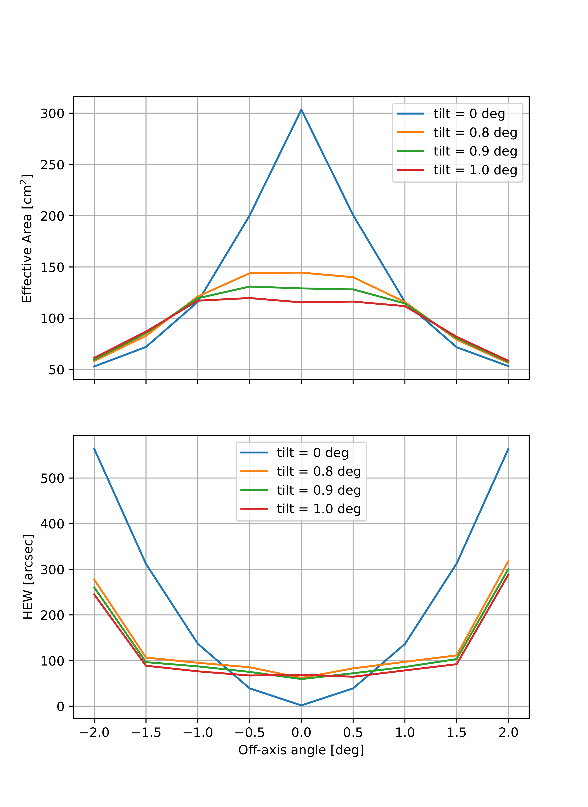
图注：Effective area and half energy width for different tilts at energy 1~keV and best focusing distance. The other optical parameters are as reported in table \(\ref{tab:mission_proposal}.\)
对应解读：对应“建议重点查看的图表”中关于模型比较、灵敏度预测和关键诊断量的部分：不同倾角下的有效面积与半能量宽度。
入选理由：这是论文核心技术结论的主要量化图，直接展示倾斜 Wolter-I 壳层如何改变视场、有效面积和角分辨率之间的权衡；坐标量为有效面积与 HEW，最能支撑对设计优化和性能损失的解读。
来源与置信度：\(arxiv_source\)；high；\(arxiv_source\) / \(tilted_SPIE.tex\):figure[2]
Fig05
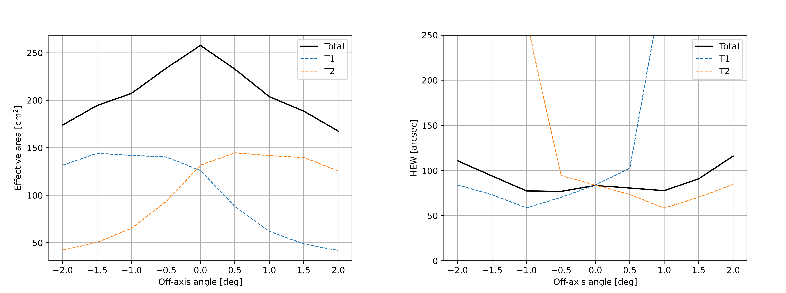
图注：Effective area and half energy width by combining two of the modules considered in this paper (the optical parameters for each are as reported in table \ref{tab:mission_proposal}) tilted 1~deg in opposite directions.
对应解读：对应最终任务方案和灵敏度/性能预测：两个相邻指向模块组合后的有效面积与半能量宽度。
入选理由：该图展示论文提出的实际小任务构型，即两个相同模块反向倾斜 1 度后的综合性能，是从单模块优化走向观测方案的关键结果，适合用于解释其引力波 X 射线对应体快速定位能力。
来源与置信度：\(arxiv_source\)；high；\(arxiv_source\) / \(tilted_SPIE.tex\):figure[5]
Fig04
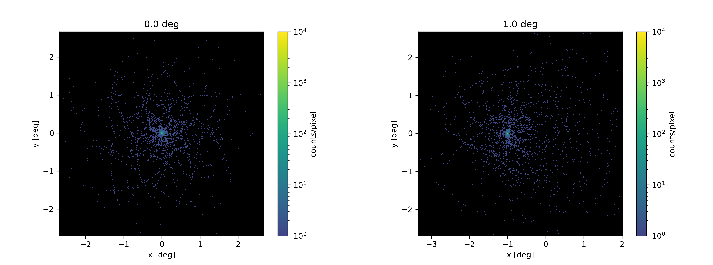
图注：Photon distribution of the configuration considered in this paper, on-axis and off-axis, showing the distribution of ghost rays.
对应解读：对应关键图表逐图导读中应关注系统误差、成像质量和残差/异常光路诊断的部分：轴上与离轴 photon distribution 及 ghost rays。
入选理由：该图不是单纯参数曲线，而是直接显示成像面光子分布和 ghost rays，对理解倾斜光学设计带来的离轴成像退化、背景或定位系统误差非常重要。
来源与置信度：\(arxiv_source\)；high；\(arxiv_source\) / \(tilted_SPIE.tex\):figure[4]
Fig03
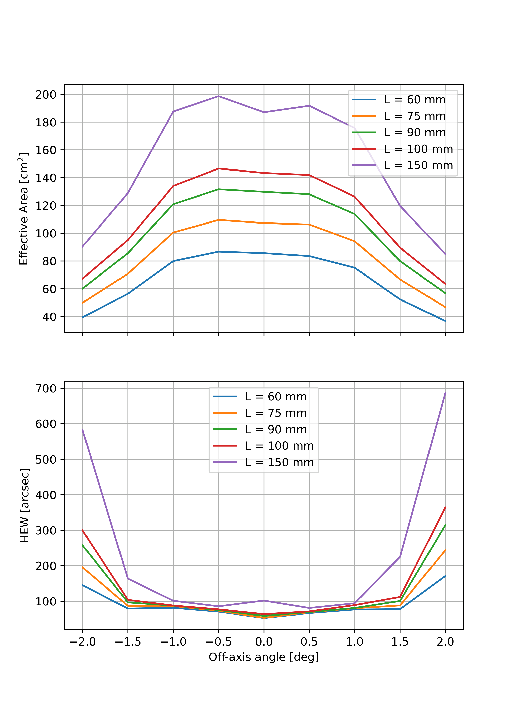
图注：Effective area and half energy width for different mirror lengths of each parabola or hyperbola (segment, so the total length of the mirror module is $2L$) at energy 1~keV and best focusing distance. The other optical parameters are as reported in table \(\ref{tab:mission_proposal}.\)
对应解读：对应模型比较和参数优化段落：不同镜段长度下有效面积与半能量宽度的变化。
入选理由：镜段长度是光学设计的重要自由参数，该图量化了长度变化对收集面积和角分辨率的影响，可补充 Fig02 的倾角优化，说明最终参数选择并非只由倾角决定。
来源与置信度：\(arxiv_source\)；high；\(arxiv_source\) / \(tilted_SPIE.tex\):figure[3]
Fig01
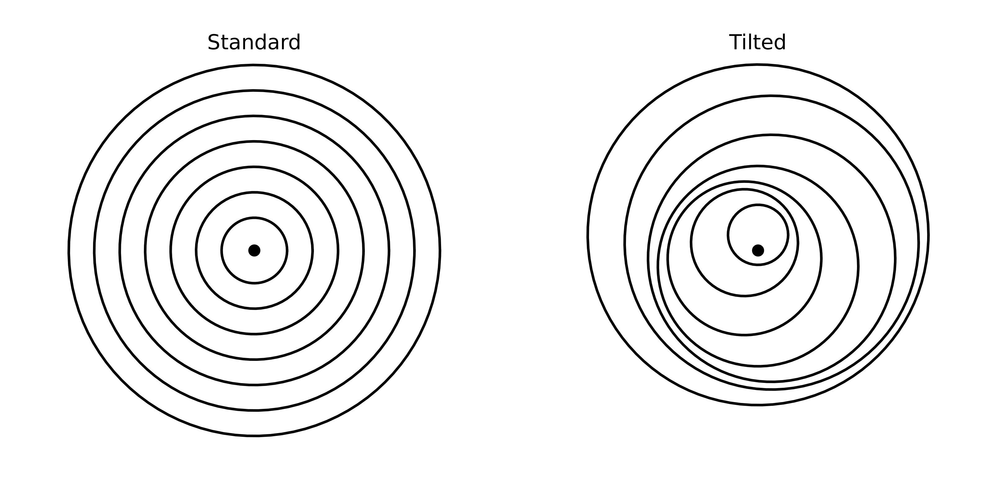
图注：Exemplary standard (left) and tilted (right) Wolter-I shells seen from above.
对应解读：对应论文方法和概念示意：标准 Wolter-I 壳层与倾斜壳层的几何差异。
入选理由：该图有助于读者快速理解‘tilting multiple shells’的基本构型，但主要是示意图，缺少有效面积、HEW 或系统误差等定量诊断，因此科学支撑力度低于后续性能图。
来源与置信度：\(arxiv_source\)；high；\(arxiv_source\) / \(tilted_SPIE.tex\):figure[1]
强相关工作
相关工作未能自动可靠整理。建议使用论文 introduction 和 bibliography 中反复出现的关键词检索。
同一事件 / 同类源线索：
（未提供）
相似工作：
（未提供）
基础理论 / 方法工作：
（未提供）
相反观点 / 张力线索：
（未提供）
说明
评分由 LLM 给出初评，再由本地阈值策略过滤；IACT、TeV 伽马射线和高能中微子天文学按重点方向处理。